ГОМЕР, МАНДЕЛЬШТАМ И СЕМИКЛАССНИКИ
ЕЛЕНА ДОНСКАЯ, ВЛАДИМИР ОСЕТИНСКИЙ, СЕРГЕЙ КУРГАНОВ
ГОМЕР, МАНДЕЛЬШТАМ И СЕМИКЛАССНИКИ
"Может быть, Гомер лучше всех понимал Мандельштама"
(Ксюша Утевская, 7-Б)
Предисловие
В конце 1980-х гг. С. Курганов и И. Соломадин познакомили нас с Е. Донской с поразительным педагогическим проектом В. С. Библера. Мы стали читать работы Библера, ездить на конференции ШДК и скоро не на шутку увлеклись этим пусть утопическим, но грандиозным проектом создания принципиально новой школы. В 1992 г. Е. Донскую и меня пригласили работать в только что открытую харьковскую частную гимназию «ОЧАГ». Здесь мы совместно с И. Соломадиным, И. Романовым, О. Нестеровой, И. Литовской создали Лабораторию гуманитарного диалогического образования, чтобы разработать систему образования, ориентированную на идеи ШДК. Мы понимали, что реализовать здесь и сейчас проект ШДК, охватывающий все учебные предметы и все классы школы, нам не удастся. Но мы предположили, что способствовать развитию у учеников диалогического мышления, воспитанию «человека культуры» может особым образом построенный единый гуманитарный курс в средней и старшей школе. Этот курс должен быть рассчитан на 6 лет, на работу со школьниками 6 – 11 классов и включать ряд тесно связанных между собой учебных предметов (история, литература, философия, изобразительное искусство). Каждый год предметом понимания на всех уроках курса должна стать определенная историческая культура: первобытная культура и культура Древнего Востока в 6 классе, античная культура в 7 классе, культура средних веков в 8-ом, культура Возрождения в 9-ом, культура Нового времени в 10-ом и культура XX – XXI веков в 11 классе. Работа курса должна строиться на изучении произведений соответствующей культуры.
Речь шла не о «погружении» детей в исторические культуры, не об игре учеников в древних римлян или египтян. Целью такой работы должно было стать понимание современными детьми исторических культур как уникальных собеседников, обладающих собственным лицом и голосом, настрой на диалог с этими собеседниками, на мышление в диалоге с ними. Отсюда ориентация не на рассказ о культуре, а на работу с ее произведением, понятым как форма, в которой историческая культура осознает, формирует и выражает свое видение мира и ценностный кругозор, и в то же время как «запечатленная речь» культуры, ее высказывание, которое нуждается в понимании и ответе1.
Основным методом учебной работы курса должен был стать учебный диалог – метод, открытый С. Ю. Кургановым. (Подчеркнем здесь, что, хотя педагогические идеи и практика С. Курганова последних лет вызывают у нас резкие возражения, метод учебного диалога представляется нам по-прежнему очень плодотворным)2.
Над воплощением (и развитием, уточнением, конкретизацией) этого замысла мы работаем уже почти 20 лет. Е. Донская разработала и ведет в гимназии курс русской литературы, я – курс мировой литературы. Эти курсы тесно связаны между собой и с другими составными частями гуманитарного курса: историей, историей мировой культуры, изобразительным искусством. Постепенно накапливался опыт, а вместе с ним – потребность обсудить его с широким кругом коллег. Именно это побудило нас с Е. Донской попробовать описать и проанализировать какой-то фрагмент нашей работы. Мы остановились на начале седьмого («античного») класса гимназии.
В программу 7 класса по мировой литературе входят «Илиада» и «Одиссея» Гомера, лирика поэтов архаики, фрагменты из речей Демосфена и «Риторики» Аристотеля, «Эдип-царь» Софокла, фрагменты из диалогов Платона «Ион» и «Государство» и «Поэтики» Аристотеля. В программу по русской литературе, среди других текстов, включены стихи Пушкина, Тютчева, Мандельштама, Бродского, работающие с античными темами или мотивами и так или иначе вступающие в диалог с античной культурой. Мы решили рассказать о том, как семиклассники на уроках мировой литературы читают «Илиаду» Гомера и параллельно на уроках русской литературы «античные» стихи О. Мандельштама. Нам хотелось не только поделиться мыслями о том, как возможно диалогическое литературное образование, но и показать, что открывают в стихах Гомера и Мандельштама современные подростки.
Так в 1998 г. появился предлагаемый очерк. Впервые он был опубликован (в диком, искореженном редакцией виде) в 2001 г. в журнале «Школьные технологии»3. С тех пор мы неоднократно дополняли и редактировали его, и он издавался еще несколько раз, каждый раз сокращенным4. Для сайта мы предлагаем наиболее полный вариант текста.
Обдумывая возможную форму описания нашей работы, мы сразу отказались от жанра методических разработок. Методические разработки дают жесткий сценарий работы учителя, определенную последовательность учебных заданий и ожидаемые, «правильные» ответы учеников, к которым школьников надо «подвести». В диалогическом образовании встреча учебного сообщества с произведением всегда строится как уникальное событие и каждый раз происходит иначе. Прочтение произведения не задано учителем, но возникает в процессе общей работы над книгой, и зачастую интерпретации одного произведения разными классами значительно отличаются. Поэтому, посчитали мы, наиболее органичная форма, позволяющая показать суть и принципы нашей работы, - описание и анализ реально произошедшей встречи школьников с произведением.
В основе очерка – запись и анализ уроков-диалогов, происходивших в 7 классе гимназии «ОЧАГ» в 1997 году. В ряде мест в текст включены записи диалогов и письменные работы школьников 1998 – 2004 гг. Принципиально важным для нас является удержание особенностей мысли и слова ребенка, поэтому устные реплики и письменные работы школьников не редактировались. Имена и фамилии ребят мы приводим полностью, так они в той же степени, что и их учителя, являются авторами этого текста. В 1998 г., прочитав рукопись очерка, С. Курганов предложил ряд ценных редакционных замечаний и оставил на полях многочисленные комментарии. Мы учли его замечания, а комментарии, с его согласия, включили в текст очерка (они выделены курсивом). Римскими цифрами помечены комментарии И. Е. Берлянд к «гомеровской» части очерка, на наш взгляд, очень интересные, они помещены в конце текста.
В. Осетинский ЧАСТЬ I. ПОДРОСТКИ И «ИЛИАДА»
1.Человек античности. Пред-встреча.
Начиная год, посвященный встрече с античной культурой, мы решили выяснить, что знают семиклассники об античности, с чем у них ассоциируются слова «древнегреческое» и «римское». Оказалось, знают они немного: отдельные имена богов и героев; некоторые ребята смутно припоминали сюжеты 2 - 3 греческих мифов. Однако подростки знали, что у многих из них греческие и римские имена и что в русском языке множество слов с греческими и латинскими корнями -- они открыли это в 6 классе, занимаясь на уроках русского языка загадкой происхождения слов и имен. Тут мог возникнуть вопрос: почему так много в нашем языке именно греческих и римских имен и корней, а не египетских, вавилонских, польских или финских, и далее -- почему именно античная культура оказалось столь важной для нашей культуры. Этот вопрос мог бы оказаться тем зернышком, из которого можно было бы растить наш «античный» год. Но у учеников этот вопрос не возник, и мы пошли другим путем.
В хрестоматиях, которые мы сделали для семиклассников, очень много «картинок» -- репродукций античных статуй, барельефов, вазописи и т.п. Это именно античные изображения, они важны не как иллюстрации, дополнительные по отношению к основному тексту, а как самостоятельные произведения, вступающие в особые отношения с произведениями словесными. Существенно, как и какими сами греки и римляне видели и изображали себя, своих богов, героев и поэтов. Мы хотели, чтобы семиклассники с самого начала видели своих будущих собеседников.
Мы предложили ученикам рассмотреть и прокомментировать эти изображения: статуи Зевса, Афины, Аполлона, скульптурную группу Геракл и Афина, бюсты Гомера, Аристотеля, Цицерона, скульптуры Демосфена и Цезаря. Интересно, что подростки сразу стали сравнивать эти изображения с пластикой и словесными текстами Древнего Междуречья, с которыми они работали в 6 классе. Хотя в 6 классе они ничего не учили наизусть, отдельные стихи и фрагменты из «Энума элиш» и эпоса о Гильгамеше ребята вспоминали наизусть или очень близко к тексту.
Ученики говорили, что греческие боги и герои гораздо более «спокойны» и «человекообразны», чем шумерские и вавилонские, что они «мудрые и грустные».
-- Вавилонские боги чудовищны, у Мардука «Четыре глаза, четыре уха! Он рот раскроет -- изо рта его пламя!», а греческие боги похожи на очень красивых людей.
Рассматривая изображение Геракла, беседующего с Афиной, подростки вспоминали историю Гильгамеша и Иштар:
-- Геракл сильный и грустный, он как бы знает, что его ждет... Он ростом даже выше богини, богиня похожа на девочку... Он спокойно говорит с ней, а она его спокойно слушает...А Гильгамеш -- герой, но не очень человек... Гильгамеш всегда буйный, безмерный, и Иштар буйная, страшная и безмерная… Вавилонские боги всегда таинственные и неуправляемые, а у греков -- спокойные и понятные.
Так на первом уроке года произошла первая встреча (точнее, пред – встреча, первое знакомство) семиклассников с античной культурой. В сознании учеников появился первоначальный образ античности, античного мира как мира красоты и спокойной гармонии. В течение года этот образ будет развиваться, усложняться и проблематизироваться. Мы увидим, как в гомеровском эпосе школьники обнаружат трагическое начало, лежащее в основе античного миросозерцания. Очень существенно, что с самого начала образ античности в сознании подростков стал формироваться в сопоставлении с образом иной культуры – культуры Древнего Востока. Античный мир осознает себя только в сопоставлении с Востоком, в диалоге с Востоком (достаточно указать на «Историю» Геродота и «Персов» Эсхила), и, видимо, античная культура не может быть понята вне этого столь важного для нее диалога.
2. Узнать и понять
Вступая с семиклассниками в наш «античный» год, мы предложили ученикам следующее определение цели наших трудов: попробовать не только узнать побольше о греках и римлянах, но и понять их. В классе развернулся диалог о том, что это значит, в чем отличие «знания» и «понимания», и можем ли мы понять человека, жившего тысячи лет назад, и если можем, то как. Приведем фрагмент состоявшегося диалога.
Саша Золотько. Знать о человеке -- это значит знать его мысль, а понять -- это понять, как он дошел до этого вывода, какой способ мышления у этого человека.
Геля Канкава. Я не согласна! Знать -- значит знать, что человек делает, а понимать -- понимать, зачем он это делает!
Соня Вальшонок. Понять -- значит проникнуться в человека, понять цель всей жизни, понять мировоззрение и даже обычный быт.
Маша Донская. Узнать -- узнать о проблемах и радостях этого человека, а понять -- почувствовать проблемы, радости и т.д.
Вероника Ивенская. Понять другого человека можно, сравнив его с собой, представить себя на его месте.
Учитель. Что-то я сомневаюсь. Ведь человек может быть совсем не похож на вас и видеть мир совсем не так, как вы. Представьте себя на месте древнего египтянина, вы всегда будете поступать так, как он?
Маша Колесник. Я согласна с В.З., что так нельзя понять древнего человека -- если просто представить себя на его месте. Современного человека, может, и можно -- а древнего человека нельзя. Представь себя на месте древнего мальчика перед инициацией -- ты просто убежал бы из деревни, а он радовался!
Оля Лейкехман. Но мы же понимали древних людей, помните, в прошлом году у нас был диалог вавилонян и христиан. Они понимали друг друга, и мы понимали их.
Мы предложили детям продумать и развить свои мысли дома.
Света Савочка.
Я считаю, что на все случаи не может быть одного ответа, что такое знать и понимать человека, и какая между этим разница. Ты можешь знать человека всю жизнь, но не понимать то, что он делает. То есть я присоединяюсь к гипотезе Гели: нужно знать, что человек делает, и нужно понимать, зачем он это делает. В некоторых случаях надо поставить себя на место человека и посочувствовать ему. А в некоторых случаях ты можешь, даже не хотя того, понять человека и помочь ему найти выход из ситуации, потому что сам оказывался в такой же ситуации.
Знать человека ты можешь в лицо, по характеру, а понимать человека -- это другое. Но может быть такое, что если ты не будешь знать что-либо о человеке или самого человека, то ты не сможешь его понять. Вот такая моя версия.
Аня Бабиченко.
Знать и понимать человека!
Казалось бы, это совсем синонимы, но синонимы совсем в растяжимом понимании. «Знать» -- это знать все о человеке: знать, что он делал, делает и будет делать; что он думал, думает и будет думать (это сложнее всего); знать привычки, привязанности, хобби -- т.е. знать абсолютно все! «Понимать» -- это... это уже то понятие, которое не может существовать без первого. «Понимать» -- это знать все абсолютно и соглашаться со всем также абсолютно, без тени сомнения. Поддержать точку зрения. Но можно все абсолютно знать, но не соглашаться (не обязательно со всем), т.е. не понимать или какие-то поступки, или какие-то суждения... И тогда получается, что «понимать» -- это поддерживать и соглашаться, а «знать» -- это знать все «абсолютно» о человеке. Но опять же есть одно НО: чтобы «понимать», нужно «знать». А чтобы «знать», не обязательно «понимать».
Оля Лейкехман.
Узнать и понять.
Для меня две эти вещи находятся достаточно далеко друг от друга, и раньше я никогда не задумывалась над этим вопросом. Но теперь... Узнать человека... Понять человека... Казалось бы, как это просто! Чтобы узнать кого-либо, я знакомлюсь с ним. Устно или письменно, не имеет значения. Я знаю его имя, фамилию, год рождения, значит, я знаю этого человека? Конечно, нет, то есть не совсем да. Я знаю этого человека снаружи, но что значит узнать изнутри? Для меня это значит понять человека. Понять... Как много заключается в этих шести буквах, и как долго можно пытаться понимать, узнавать изнутри и все равно не понять. Для каждого человека понять другого значит разное, но мне кажется, что понять до конца никогда никого никому не удастся, хотя бы потому, что человек сам себя часто не понимает, да еще потому, что человек -- натура переменчивая, то думает одно, то другое, и за ним просто не поспеешь.
Так чем же все-таки отличаются «узнать» и «понять»? Глубиной. Узнать -- это поверхностно, быстро, не всматриваясь и не вдумываясь, а понять -- это глубоко, трудно. Для этого нужно трудиться, а главное -- очень хотеть.
P.S. Сейчас я перечитала свой ответ, я, честно говоря, не думала, что он такой получится, правда, не знала, какой должен был получиться, но получился такой, и как ни странно, в нем отразились все мои мысли, может, даже больше, но начало противоречит концу, так же, как я сама себе. Я спорила сама с собой и вот до чего доспорила.
Из приведенных работ видно, что подростки удерживают в сознании основные идеи, высказанные их одноклассниками, и соглашаются или спорят с этими идеями. Мысль школьника, разбуженная произошедшим в классе диалогом, развивается в споре - согласии с другими учениками, в письменной речи этот спор становится диалогом подростка с самим собой, со своим внутренним собеседником. Заметим, что для большинства семиклассников истинное понимание другого возможно лишь в процедуре эмпатии, сопереживания другому, -- а у Ани и абсолютного, «без тени сомнения» приятия другого и согласия с ним.
На следующем уроке, когда обсуждались домашние размышления учеников, в спор активно включился учитель. Напомним, учитель в ШДК -- не представитель абсолютного Знания, но взрослый собеседник, предлагающий свой взгляд на проблему. Учитель снова усомнил уверенность многих школьников в том, что можно понять другого человека, просто поставив себя на его место и «слившись» с ним. Возможно ли так на самом деле понять Другого, человека иной культуры, чье видение мира и себя в этом мире вырастает из совершенно иных, чем наши, оснований? Обосновывая свою мысль, учитель рассказал о римлянах, бросавших первых христиан на съедение львам и поражавшихся тому, что христиане не молят о пощаде и не принимают смерть стоически, а поют благодарственные гимны; римляне представляли себя на их месте -- и ничего не могли понять, испытывали лишь страх и отвращение. Учитель высказал известное предположение о том, что, понять другого мы можем лишь в беседе, диалоге с другим, обдумывая его речь, задавая ему вопросы. Он говорил о том, что понять греков мы можем, лишь продумывая их книги, их высказывания о мире. Прочитав книги греков, мы обнаружим в них совершенно особый взгляд на движение времени, на жизнь и смерть, судьбу и предназначение человека, и это даст нам возможность посмотреть на мир и на собственную жизнь сквозь призму этого нового необычного взгляда. Мы не будем «сливаться» с эллинами, останемся самими собой, людьми ХХ века, это позволит нам увидеть в логике греков то, что они сами в себе не замечали, и столкнуть в своем сознании, свести в диалоге их и наш «образы мира»I.
Однако диалог со школьниками побудил учителя задуматься о том, не является ли эмпатия действительно необходимым этапом понимания. И если да, то насколько всеобщим оказывается это правило, в частности, применительно к пониманию литературного произведения? Видимо, понимание «Гамлета» предполагает сочетание почти «вживания» в героя и сохранение «вненаходимости» по отношению к герою и трагедии в целом. Но необходимо ли сопереживание героям «Илиады» для понимания эпоса?II
Если бы проблема, оказавшаяся в центре этих уроков, была «учебной задачей», способ решения которой известен учителю, мы бы выстроили наши занятия так, что школьники в ходе своих рассуждений логически пришли бы к известному нам ответу. Если бы подростки были для нас объектом психологического исследования, то мы бы не вмешивались в их диалог, а наблюдали бы со стороны, как движется мысль ребят. Но в том -то и дело, что эта проблема представляется нам не «учебной», а реальной. И школьники оказываются не пассивной «обучаемой стороной» и не объектом исследования, а собеседниками, в диалоге с которыми мы ищем истину. Учитель активно участвует в обсуждении проблемы, с кем-то из ребят споря, с кем-то соглашаясь. Диалог никогда не заканчивается общим согласием, обнаружением удовлетворяющего всех ответа; диалог вообще не завершается, оказывается принципиально открытым. В процессе диалога с самими его участниками происходят определенные изменения. Мысли, казавшиеся им очевидными, сталкиваются с иными, спорящими с ними мыслями, у учеников (и учителя) появляются внутренние собеседники. Цель диалога -- в развитии у подростков новой способности -- способности мыслить, развивать свою мысль в диалоге с другими людьми.
В 7 классе тему диалога «Знание и понимание» предложил учитель. Как показывает наш опыт, учащиеся 10 - 11 классов, обсуждая произведения культуры Нового времени и ХХ века, сами выходят на проблему понимания человека иной культуры, постоянно возвращаясь к вопросу, можем ли мы, современные люди, понять Другого, человека иной эпохи. Может быть, стоило подождать и не торопиться обсуждать с подростками проблему, которая «естественно» вырастет, «созреет» у старшеклассников? Нам кажется, свобода и естественность постановки сложных культурологическх проблем, которую демонстрируют наши старшеклассники, связана как раз с тем, что подобные проблемы и вопросы возникали на уроках еще в подростковых классах, при первых встречах с инокультурными произведениями. Да, в разговоре с подростками 11 - 12 лет учитель предложил для обсуждения свой вопрос -- но, повторим, не как учебную задачу, а как вопрос, лично значимый для него, как вечную культурную проблему. И семиклассники не раз в течение года возвращались к поставленной учителем проблеме понимания по собственной инициативе.
3. Почему мы начинаем с Гомера.
Первыми античными книгами, прочитанными семиклассниками, стали «Илиада» и «Одиссея» Гомера. Обычно в школе читают одну - две песни «Одиссеи», в университетские хрестоматии, как правило, включаются несколько ярких фрагментов гомеровского эпоса. Предполагается, что для знакомства с Гомером этого достаточно. Думаем, это ошибочное решение: у эпоса «долгое дыхание», его нужно читать долго и медленно, постепенно входя в него, отдаваясь его неспешному ритму. Наша работа над книгами Гомера заняла весь первый семестр. Мы прочитали полностью или большими фрагментами песни 1, 3 - 9, 16, 18 - 22, 24 «Илиады» и песни 9 - 12 «Одиссеи». На уроках ИМК (учитель И. М. Соломадин) школьники в это время изучали мифы Древней Греции и «Теогонию» Гесиода, на уроках русской литературы с Е. Донской обсуждали «античные» стихи Тютчева, Мандельштама и Бродского, в которых поэты обращаются к гомеровским мотивам и образам.
Почему нам важно было начать именно с Гомера, а не с чтения текста более легкого и привычного для подростков? Значимость гомеровского эпоса для античной культуры очевидна, но насколько такой ход (ведь ученикам-то всего 11 - 12 лет) оправдан педагогически? Приведем свои аргументы.
В каждом классе предметом понимания для нас становится одна из исторических культур, и каждый год мы начинаем с долгой, подробной, «пристальной» работы с произведением, которое нам кажется ключевым для этой культуры. Так, 8 класс в его средневековой части начинается с работы над Евангелием от Матфея, 9 класс (класс культуры Возрождения) - с работы над сонетами и диалогами Ф. Петрарки, 10 класс (класс культуры Нового времени) – с чтения «Гамлета» Шекспира и «Дон Кихота» Сервантеса и т.д. Чтение этих книг, их исследование и обсуждение вводит школьников в поэтику и проблематику соответствующей культуры. Опыт показывает, что в обсуждении именно этих произведений в сгущенном, свернутом виде содержатся те «точки спора», которые, разворачиваясь и насыщаясь другими текстами, порождают годовой курс в целом. Так случилось и в нашем 7 классе. В определенном смысле, античная культура выросла из «Илиады» и «Одиссеи», а наш «античный» год вырос из работы над гомеровским эпосомIII.
Подросткам было очень сложно, особенно поначалу, читать «Илиаду» («Одиссею» гораздо проще). И это очень ценно. «Илиаду» невозможно было читать бегло, не обращая внимания на слова, не замечая строение фразы, следя только за сюжетом. Школьникам пришлось волей-неволей замедлить темп чтения, вглядеться и вслушаться в странные, невозможные слова, ощутить и осознать торжественный ритм и героический метр книги. Эпос с самого начала невозможно было воспринимать как сумму информации, переданной словами, он заставлял осознать себя как чужую речь и как искусство слова. Встреча с античностью началась как встреча с чужим словом, словом Другого -- и поэтическим словом, словом Поэта. Сам строй гомеровской поэзии: величественный гекзаметр, знаменитые многокоренные эпитеты, развернутые сравнения и описания, все время тормозящие действие, вводил школьников в особое «звучание», особый «голос» античной культуры. Огромное «сопротивление материала» сразу разрушило начавшую было возникать иллюзию легкости, полной понятности, проницаемости этой культуры, «остранило» ее. Возникавшее постепенно у учеников удовольствие от «Илиады» было удовольствием не от легкости и занятности чтения, а радостью преодоленной трудности, удовольствием переживания -- трудно -- открытой красоты и понятого слова.
И последнее. Боимся, что Гомер, не прочитанный в этом возрасте, не будет уже прочитан никогда. Но тогда, видимо, и вопрос должен быть поставлен иначе: не почему..., а могут ли вообще современные подростки прочитать Гомера, не будет ли эта работа для школьников бессмысленной и мучительной, поймут ли они что-то и смогут ли получить удовольствие от чтения? Наконец, не будет ли все это профанацией настоящего чтения? Нам кажется, что дальнейший текст дает ответ на эти вопросы.
Слепота аэдов
Чтение Гомера необходимо было предварить «предисловием», которое бы подготовило восприятие школьников. Нужно было, с одной стороны, ввести учеников в культурно - исторический контекст эпоса и, с другой, создать вокруг «Илиады» и «Одиссеи» особую ауру, настраивавшую на приятие этих, повторим, предельно сложных и непривычных для семиклассников книг. Мы рассказали школьникам об аэдах и их искусстве, о «гомеровском вопросе», о том, как относились к Гомеру и его книгам сами греки и люди иных исторических культур. Однако хорошо известно: сколь бы ни был интересен и насыщен рассказ учителя, большую его часть дети рано или поздно забудут. По-настоящему они запомнят только то, что сами откроют, то, что станет предметом обсуждения, спора. Рассказ об эпохе, авторе, книге нужен для того, чтобы подготовить и «настроить» восприятие. Рассказ о книге, заменяющий ее чтение и обсуждение, оказывается почти бессмысленным.
Вступительный рассказ должен быть построен так, чтобы излагаемые факты представали как удивительные, часто парадоксальные, он должен «остранять» явление, автора, историческую культуру, по возможности разрушать впечатление о том, что они могут быть поняты при помощи «вживания» в них или простого сопоставления их с чем-то сходным, уже известным. Рассказ должен провоцировать удивление, размышление учеников. Учителю приходится лавировать между Сциллой и Харибдой: с одной стороны, хорошо бы успеть рассказать о всем том важном и интересном, о чем хочется, с другой, -- рассказ в 7 классе не должен превращаться в лекцию, учитель должен быть готов в любой момент перейти от монолога к диалогу. Заметив проявление несогласия ученика, его желание вступить в спор, учитель предоставляет ему слово. Увидев, что ученик готов поддержать ту или иную мысль учителя, последний может прервать свой рассказ, предлагая ученику его продолжить и т. д. Особенно внимательным к классу учитель должен быть в тех «точках» своего рассказа, которые вызывают у ребят удивление, кажутся им загадочными или парадоксальными. В таких случаях, если не спешить, выдержать паузу, поддержать вопросительную интонацию слушания, можно дождаться очень интересных вопросов, возражений, новых идей. Очень часто вопросы, впервые затронутые учениками во время подобных уроков, имеют продолжение -- школьники возвращаются к ним во время работы над книгой. Иногда именно эти вопросы становятся для ребят той «воронкой», в которую втягивается для них вся историческая культура. Эти вопросы могут быть самые разные, часто неожиданные для учителя и в каждом классе свои. Так, в нашем седьмом классе подростков заинтересовал вопрос о слепоте аэдов. Ребята вспомнили, что и у других народов были подобные слепые сказители, например, украинские кобзари.
Антон Овчаренко. Это потому что слепые не могли делать ничего другого. Мама с детства отдавала слепого мальчика аэду, и он его учил. Или воина ранили на войне, он ослеп, ничего делать не мог и начинал петь песни о своих подвигах.
Никита Цыганок. Нет, в этом должен быть какой-то смысл!
Учитель. Я думаю над тем, что сказали Антон и Никита... Интересно, что аэды должны были быть слепыми... Кроме того, напомню, греки были уверены, что искусству аэда нельзя научиться: это дар, который дает Муза. И «Илиада», и «Одиссея», и «Теогония» начинаются с обращения к Музе:
«Гнев, богиня, воспой Ахиллеса, Пелеева сына...»,
«Муза, скажи мне о том многоопытном муже, который...»,
«Много умеем мы лжи рассказать за чистейшую правду
Если, однако, хотим, то и правду рассказывать можем!»
Так мне сказали в рассказах искусные дочери Зевса.
Вырезав посох чудесный из пышно-зеленого лавра,
Мне его дали и дар мне божественных песен вдохнули...»
Муза что-то открывает аэду, а аэд людям. И этот аэд почему-то слеп...
Соня Вальшонок. Аэду нужен слух, а не зрение! А у слепых слух всегда хорошо развит.
Маша Донская. Я думаю, они считали, что слепой видит то, чего не видят зрячие. И аэд не отвлекается на ту жизнь, которую мы видим, потому что другой мир важнее и интересней.
Оля Лейкехман. Это похоже на волшебные сказки. Другой мир -- это мир мертвых, и в нем находится все самое важное5
Учитель. Есть легенда о знаменитом философе Демокрите. Рассказывают, что он выжег себе глаза, чтобы преодолеть ложь оче-видности. Вроде бы он считал, что очевидное только искажает настоящее.
Вероника Ивенская. Я думаю, что аэдов заставляет выкалывать глаза их искусство. Для того, чтобы писать поэмы про мир живых и мир мертвых, надо быть там и там, это аэды и делают. Зрение убито (уже в Аиде), а сам аэд жив. То есть зрением он видит Аид, а телом чувствует мир живых.
Марина Бугай. Я согласна с Машей и Вероникой. Но у меня есть еще одна версия. Я думаю, боги наказывали людей за какие-то их грехи и забирали у них зрение, но взамен давали талант.
Учитель. Это очень интересная мысль. Греческие мифы рассказывают о великом слепом прорицателе Тиресии, сыне нимфы Харикло. Вот что пишет о нем Аполлодор (читает): «Причины его слепоты и происхождение его дара прорицания объясняют по-разному. Одни говорят, что он был ослеплен богами за то, что открывал людям сокровенные тайны, которые боги хотели скрыть от людей, Ферекид же сообщает, что его ослепила богиня Афина. (...) он увидел ее обнаженной. Тогда богиня коснулась его глаз руками и ослепила его. Когда Харикло стала умолять богиню вернуть ее сыну зрение, та не смогла этого сделать, но зато она так изощрила его слух, что ему стал понятен язык птиц. (...) Зевс одарил способностью прорицания»6. Интересно, что слепы аэды и прорицатели.
Марина. И те и другие видят другой мир.
Соня. Он не видят, а слышат! Для них слух важен!
Маша Колесник. Тиресия одарили Афина и Зевс, боги, а аэдов одаривали Музы. Я думаю, тут важно, что Музы -- дочери Мнемозины, памяти. Тиресий знает, что будет, а Гомер и Гесиод знают, им Музы рассказывают, что было.
Учитель. То есть Музы заставляют аэда припоминать... Аэд всматривается в прошлое, его глаза повернуты к прошлому...
Женя Манко. Кстати, Гесиод не был слепым! Может быть, мы сейчас все это просто придумали!
Приведенный диалог состоялся в 1997 году. Эта же проблема заинтересовала семиклассников 2000 года. Как всегда в таких случаях, новая группа ребят частично предлагает уже известные нам «версии», частично порождает новые идеи. Вот фрагмент диалога 2000 года.
Владик Зайцев. Аэды должны были быть слепыми, потому что они должны были зарабатывать деньги. Когда они пели, их было жалко, ведь они были слепыми, и им давали деньги.
Дима Кудинец. Я думаю, аэды были слепыми, потому что они знали давние истории, а со временем мир меняется. И поэтому они должны быть слепыми.
Ребята стали пояснять мысль Димы.
Алеша Каракулов. Мир меняется, и аэды должны быть слепыми, чтоб не забыть старое.
Сережа Тарнакин. Если бы они все видели, они бы забыли старые песни.
Ира Чурсина. Если у человека нет зрения, он думает только о прошлом.
Женя Кучмиев. Я был в Турции, там в мечетях работают слепые люди. Они должны быть слепыми, чтоб не смотрели на женщин, не отвлекались. Так и аэды. Чтобы не отвлекаться на взглядах, а сосредоточиться на прошлом.
Женя Усатая. Наверное, только слепым людям музы дают вдохновение... А может быть, нет! Может быть, зрение мешает аэду рассказывать, представлять все истории, данные музами?!
Аня Уварова. Мне кажется, древние греки считали, что слепой -- значит спящий. Аэд спит и видит сны. Сны про Одиссея и про все похождения... А потом аэд рассказывает эти сны людям, то есть зрячим.
Саша Данильченко. Я думаю, что музы только давали хорошую память, а зрения лишали. Иначе аэды могли быть равносильны богу. Также если бы аэды описывали настоящий вид сирен или циклопа, то здесь бы уже невозможно было бы фантазировать. Было бы неинтересно представлять себе этих чудовищ. A так тут запрятаны настоящие места и острова сирен, циклопов и т.д.
Алеша Пака. Они были слепые, чтоб не смотреть в глаза людям и не стыдится
Может возникнуть сомнение: насколько эти высказывания неслучайны для детей? Не видим ли мы ситуацию, когда школьники порождают спонтанные, непродуманные идеи и тут же забывают о них, а учитель детские высказывания «смакует», домысливает и т.п.? Думаем, здесь возможен следующий ответ. С одной стороны, школьники часто помнят свои и чужие мысли и возвращаются к ним, -- не все, конечно, мысли, но наиболее для них важные и интересные (это будет видно из приводимых нами записей диалогов). Конечно, эта способность поначалу есть не у всех детей, она должна специально развиваться, культивироваться. Не раз наши уроки мы начинали с предложения вспомнить самые интересные мысли, прозвучавшие на предыдущих уроках. С другой стороны, детские реплики действительно часто спонтанны, ситуативны, порождены не предварительным продумыванием, а «выскакивают» в разговоре; открытия школьников часто интуитивны, почти случайны, сами дети (как поэты) зачастую не видят истинный смысл своих слов и не придают им значения. Но для того-то и нужен учитель, чтобы удерживать мысли учеников, «возвращать» их школьникам, делать их предметом продумывания, обсуждения.
К проблеме зрения и слепоты, зрения и умо-зрения семиклассники 1997 г. еще не раз возвращались в течение года. Она «всплывала» в репликах Сони, Никиты, Жени и других ребят в диалогах об «Илиаде», «Царе Эдипе» Софокла, «Поэтике» Аристотеля. Через год, на первом уроке нашего следующего, 8 класса мы предложили ребятам вспомнить те проблемы, которые обсуждались в прошедшем году, попробовать вспомнить собственные мысли и мысли других ребят и подумать, согласны ли они с «собой прошлогодним». Так каждый из них мог восстановить вехи своей «учебной истории», вступить в диалог с собой «прежним». Многие из них вспомнили диалог о слепоте аэдов. Приведем несколько высказываний.
Назар Проскурников. Я думал, что аэд должен быть слепым потому, что когда он не видит окружающий мир, то тогда и только тогда он может понять себя, может найти свои мысли, только во тьме он может найти самого себя. Мне кажется, что я утвердился в этой мысли. Сам аэд может дать совет другому только тогда, когда он узнает истину своих мыслей. А он узнает только тогда, когда окружающий мир не заметен для него.
Саша Золотько. Я помню версию Сони и согласен с ней. Если у человека плохо работает один орган, то лучше работают все остальные. Так и у аэдов. Они были слепы, но зато обладали памятью и умели импровизировать. И зачем аэду зрение, ведь то, что он рассказывает, намного величественнее, краше и интересней, чем мир, который он мог увидеть!
Маша Донская. Все мнения на этот счет были интересны. Например, такое, что душа или мысль человека улетают в аид на момент рассказа. Мое мнение осталось тем же, что и в прошлом году: мне кажется, что аэд должен уйти в себя, чтобы видеть не реальный мир, а мир далекого прошлого, героев... Чтоб не заниматься миром перед глазами, его проблемами, чтоб не сострадать, не видеть злобы. Надо погрузиться в рассказываемый мир, иначе аэд не сможет передать по-настоящему другим историю, а тогда он не выполнит свою задачу. Ведь человек, когда решает пример, закрывает глаза, чтоб получше его понять...
Как видим, подростки действительно помнят основные идеи, звучавшие в классе. При этом ребята не просто воспроизводят эти идеи, но развивают их, исходя из своего нового духовного опыта, опыта диалога с эллинской культурой. В противопоставлении реального мира и мира припоминаемого, «прекрасного и величественного», слышится платоновское противопоставление мира «теней» и мира «эйдосов». Заметим и ярко «античную» мысль Маши о том, что погруженность в дела окружающего мира, страсти, сострадание мешают мыслителюIV.
Возвращаясь к диалогу, состоявшемуся в 7 классе, обратим внимание на заключительную реплику Жени Манко. Очень ценно, если кто-то из ребят держит в диалоге позицию «скептика», «критика», это не дает диалогу выродиться в «придумывание», пустое фантазирование, побуждает школьников искать аргументы, подтверждающие их гипотезыV.
5. Материал и форма
Невозможно «непосредственное» понимание произведения иной исторической культуры. Понимание книг выстраивается как определенная деятельность. Вот этой деятельности понимания мы и учим подростков. Недостаточно хотеть что-либо понять и осознавать свою цель, необходимо владеть средствами достижения цели, средствами понимания. Эти средства могут открывать сами дети -- спонтанно или в ходе решения учебных задач, их может вводить учитель или литературовед, с работой которого знакомятся школьники.
Существенным средством понимания, освоенным подростками в работе над «Илиадой», стали понятия «материал» и «форма». Напомним, что различение формы и материала было введено В. Шкловским и развито в работах ученых русской формальной школы (ОПОЯЗ)7. Материал -- это то, из чего «сделано» произведение, «сырье», которое использует художник: слова, сюжетные мотивы, рассказываемая история, изображаемые предметы и характеры и т.п. Материал существует вне художественного построения и может быть изложен «своими словами». Форма -- способ расположения и построения материала, его конструкция, «сделанная с таким расчетом, чтобы вызвать известный эстетический эффект»8. Различение формы и материала реализуется, в частности, в противопоставлении лексического строя произведения и нейтральной лексики, которой могут быть пересказаны изложенные в книге события, и в противопоставлении сюжета и фабулы. В терминологии ОПОЯЗа фабула -- это та история, цепь событий, о которой читатель узнает из произведения. «Состав фабулы совершенно не зависит от того, в каком порядке и как об этих событиях будет сообщено автором. Одна и та же фабула допускает множество различных способов изложения»9. Сюжет -- порядок и способ сообщения об этих событиях автором. Сопоставление формы произведения и его материала всегда оказывается очень продуктивным для понимания произведения, осознания тех приемов, которые использует художник.
Материалом, который использовал Гомер, были сказания Троянского цикла. В нашей хрестоматии напечатаны большие фрагменты из «Мифологичекой библиотеки» Аполлодора, знаменитого греческого мифографа II века до н. э., собравшего и соединившего в единую систему все эллинские мифы. Мы пояснили семиклассникам, что такое материал книги, и предложили им поработать с материалом «Илиады». На этот раз средство понимания было введено еще до того, как ученики осознали потребность в нем. Но оно оказалось реально работающим, школьники запомнили его и впоследствии не раз, уже по собственной инициативе обращались к нему -- в работе над «Царем Эдипом» Софокла, новеллами Боккаччо, трагедиями Шекспира и т.д.
Мы предложили семиклассникам прочитать фрагменты из текста Аполлодора, относящиеся к сказаниям Троянского цикла, и попробовать найти в них сюжетные мотивы и идеи, уже знакомые подросткам по работе с русскими волшебными сказками и мифами Древнего Востока. Такая работа преследовала сразу несколько целей. Во-первых, школьники еще до чтения «Илиады» узнавали ее фабулу и персонажей, причем узнавали не из пересказов Куна или Успенского, чрезвычайно приглаженных и почти утративших античный «вкус», а из уст самих эллинов. В некотором смысле подростки оказывались в действительной позиции слушателей аэда, ведь современника аэда прекрасно знали материал, о котором пойдет речь. Во-вторых, мы хотели, чтобы ученики обнаружили генетическую связь гомеровского эпоса с сюжетами и идеями мифо-поэтической словесности. Наконец, в мышлении подростков актуализировались способы работы, которые были освоены ребятами в 6 классе, в работе над русскими волшебными сказками и книгами В. Проппа: морфологический и ритуально-генетический анализ текстов.
Семиклассники обнаружили много интересного, назовем лишь некоторые из их открытий. Многие из них увидели, что сам сюжет Троянских сказаний строится по той же сюжетной схеме, что и русские волшебные сказки и мифы об умирающих и воскресающих богах: «отлучка» (отъезд Менелая) – «вредительство» (похищение Парисом, «вредителем», прибывшим из «другого мира», Елены) – «отправка в путь» и «перемещение в «другой мир» – «бой и победа» – «ликвидация беды» – «возвращение». При этом разгорелся спор о том, сколько «ходов» в этом сюжете и кого считать героем, Менелая или всех ахейцев. Ребята заметили в этой истории целый ряд сюжетных мотивов русских сказок. Даша Апилат увидела, что выбор Парисом «прекраснейшей» из богинь похож на выбор невесты Царем Салтаном из пушкинской сказки. Таня Васильева сказала, что Елена точно так же окликает ахейцев, сидящих в троянском коне, подражая голосам их жен, как баба-яга окликала Ивасика-Телесика, подражая голосу его мамы. Маша Донская, Оля Лейкехман, Света Савочка и другие ученики сочли, что мотив троянского коня (героям, чтобы одержать победу, необходимо «пройти сквозь тело» троянского коня) содержит память об обряде инициации. Подростки предположили, что в древнейшие времена греки поклонялись коню, считали его своим тотемным первопредком. Рома Ключка говорил: история о том, как Артемида забрала из-под носа Агамемнона его дочь Ифигению, напоминает библейскую историю о том, как Бог спас Исаака и запретил приносить человеческие жертвы. Рома посчитал, что и смысл греческого мифа тот же, что и мифа библейского.
Конечно, с выводами семиклассников можно спорить, но нам в этом случае важно было пробудить интерес подростков к определенному типу работы, определенному «настрою глаза» читателя-исследователя. Работа с материалом «Илиады» оказалась интересной и продуктивной сама по себе. Но не менее важно то, что на следующих уроках у нас появилась возможность поработать на сопоставлении материала эпоса и его формы. Чтение Аполлодора дало возможность сопоставить лаконичный прозаический рассказ о событиях в «Мифологической библиотеке» и поэтическое описание тех же событий у Гомера. Знакомство учеников со всем циклом сказаний побудило задуматься над вопросом, почему Гомер изображает лишь один момент из истории Троянской войны и излагает события именно в такой последовательности.
6. Странный язык «Илиады»
На следующем уроке мы читали вслух начало I песни. Мы предложили ученикам поначалу не вдумываться в смысл слов, а просто вслушаться в звучание стиха, в ритм и метр эпоса. Мы рассказали подросткам о гекзаметре, торжественном героическом метре, выработанном поколениями аэдов, и об известном предположении В. Вересаева, считавшего, что гекзаметр передает звучание морского прибоя, шум набегающей и откатывающейся волны. Чтобы понять, как достигается это впечатление, мы разобрали строение гекзаметра. Очень помогло то, что на уроках русской литературы ученики уже читали пушкинское стихотворение «Гнедичу» и обсуждали эмоциональный и смысловой ореол гомеровского метра. Мы рассказали ребятам, что греки не знали чтения про себя, их тексты были предназначены для чтения вслух, и посоветовали ученикам читать Гомера только вслух (потом семиклассники говорили, что только так «Илиаду» и можно читать).
На этом подготовительная работа была окончена. Семиклассники хотели читать Гомера. Можно было переходить непосредственно к чтению. Однако когда мы приступили к реальному чтению Гомера, к попытке понять, о чем он говорит, подростки столкнулись с проблемой: они читали строку за строкой и ничего не могли понять, им был непонятен буквальный смысл слов и фраз. Гомеровский текст начинал вызывать у школьников недоумение и раздражение. Тогда мы прервали эту работу и предложили школьникам проанализировать суть проблемы: почему им не дается понимание этой книги, ведь они уже работали со сложными книгами: эпосами Древнего Востока, Ветхим Заветом. Подростки говорили о непонятном, «темном» языке Гомера. Мы предложили ребятам вспомнить, как они работали в 6 классе, сталкиваясь с «темными» местами в текстах (тогда каждый непонятный фрагмент подробно обсуждался, и ребята предлагали разные варианты его толкования). Но в дискуссии выяснилось, что этот способ работы не подходит: весь текст Гомера, говорили школьники, сплошное «темное место», и наше чтение «Илиады» может затянуться на многие годы. Нужно было искать новый способ чтения. На уроке было принято решение разобраться в том, как устроен язык эпоса. Мы предложили ученикам конкретное задание: дома перевести первую фразу «Илиады» на обычный, понятный язык, а затем сопоставить свой «перевод» с гомеровской фразой. Эта работа оказалась очень интересной и плодотворной. Семиклассники говорили, что речь Гомера отличается от нашей речи необыкновенно «длинными» предложениями и «длинными» (многокоренными) словами (Женя Манко назвал их «слова-бумажники»), а также «древнерусскими» словами (О. Лейкехман). Работая с собственными «переводами», школьники видели, что любая попытка перестроить и упростить гомеровскую фразу обедняет ее, видели, что к трудным и странным словам «Илиады» невозможно подобрать точные синонимы: любые другие слова неизбежно звучали хуже, теряли важные оттенки смысла. Настоящие «картинки» и целые пучки смыслов содержались в словах «воспой», «распростер», «плотоядным», «воздвигшие спор», «воспылали враждою»... Работа с языком эпоса продолжалась и на следующих уроках: школьники сочиняли собственные «гомеровские» эпитеты, а затем -- собственные «гомеровские» сравнения и целые рассказы гекзаметром в гомеровском стиле. Некоторые из этих текстов мы приведем ниже.
В 2000 году, уже с новым седьмым классом, обсуждение того, как устроен язык Гомера, перешло в диалог о том, зачем Гомер пишет на таком странном, необычном языке. Вот запись этого диалога.
Вика Михайлова. Если бы Гомер писал обычным языком, было бы не так торжественно, и тогда нам было бы неинтересно читать и слушать.
Катя Дударева. Гомер так пишет, чтобы книга была красивой и торжественной и чтобы читатель почувствовал себя рядом с героями.
Учитель. Ну, не думаю... Чтобы почувствовать себя рядом с героями, я должен забыть, что читаю книгу. Я не должен все время наталкиваться на трудные слова, не должен обращать внимание на то, как написана книга. Если у Гомера была такая цель, значит, он с ней плохо справился. Ему надо было писать простым и понятным, незаметным языком.
Алеша Каракулов. У меня две версии. Первая: чтобы временем строчка совпадала со временем накатывающейся волны. А вторая: чтобы привлечь к себе слушателей. Иначе бы его не слушали.
Катя Ластоверова. Чтобы тебя слушали, нужно говорить понятно!
Женя Кучмиев и Дима Кудинец. Необычный язык привлекает!
Саша Данильченко. Он пишет специально так, чтобы чтение было длинным, чтобы человек задумывался над каждой строчкой и словом, как мы в классе. И чтоб происходил спор человечества, как понимать какое-то его слово. Происходил бы мировой спор людей над произведением.
Артем Забелин. Гомер не знал, что его книгу запишут!
Учитель. Это очень интересное возражение. Ведь действительно, Гомер сочинял текст, который люди должны были воспринимать на слух, а не глазами. Это сейчас мы можем остановить чтение, перечитать трудное место, обдумать его... А аэда нельзя было остановить...
Саша. Так поэтому люди по много раз приходили слушать одни и те же песни! Люди задумывались над каждым словом и пропускали много остального, и приходили снова и снова.
Саша Супруненко. И вообще такой текст лучше запоминается.
Сережа Тарнакин. Эти слова нельзя заменить на другие. Мы же пробовали в классе. Гомер это делает для мудрого звучания. И чтобы «Илиада» и «Одиссея» были похожи на звуки моря.
Лена Дашевская. Гомер писал не запутанно! В его время все говорили на таком языке!
Учитель. Но тогда непонятно, почему Пушкин так восхищался переводом Гнедича. Ведь настоящий переводчик - это тот, кто старается максимально точно передать все особенности текста. Тогда надо было перевести так, чтобы...
Саша Данильченко. Тогда надо было перевести понятным языком.
Учитель. Вот так, например, как перевел Вересаев.
Учитель читает первую фразу «Илиады» в переводе В. Вересаева. Дети смеются (!)
Женя. Это получается не «Илиада», а простой рассказ. Перевод Вересаева совсем не красивый!
Юра Ларионов. Я считаю, переводчик Гнедич пишет старинным русским языком, потому что он немного похож на греческий язык.
Алеша Пака. Не в этом дело. Надо было перевести так, чтобы было похоже на миф.
Артем Забелин. Гомер писал таким языком, потому что писал о богах и героях, а о них надо писать особым языком.
Саша Супруненко. Он пишет так, как говорит не он, а бог.
Женя Усатая. ...то, что ему говорит Муза.
Аня Уварова. Вот, я согласна... Он пишет так, чтоб этот текст был более красивый, значит, более похож на божий. Я раньше говорила, что аэды спят. Это значит, что в них вселилась муза и поет за Гомера.
И еще один поворот той же проблемы. На этот раз - семиклассниками 2002 года.
Руслан Борисов. Гомер специально пишет непонятно. Чем непонятнее речь, тем больше она действует на воображение. Я слышу ритм, торжественный гекзаметр, понимаю отдельные слова, и разыгрывается воображение. Я представляю битвы... И люди перечитывают «Илиаду» много раз, каждый раз представляя себе что-то новое
Антон Черных. Я не согласен! Это не Гомер пишет странным языком, эту речь ему посылают музы, а все музы, боги и богини говорят божественным стихотворным языком. Греки даже говорили, что к богам нужно обращаться на их языке, на стихотворном языке.
Матвей Ларионов. Правильно! Это зависит не от Гомера, а от того, что ему диктуют музы!
Ксюша Утевская. Музы нет, о чем мы спорим?
Матвей. Но греки верили в Музу!
Ксюша. Гекзаметр вводит в транс, и слушатели верят, что это Муза говорит.
Учитель. Но почему Муза (или аэд) говорит на таком странном языке? Ведь аэду (и Музе) важно, чтоб их понимали, они поют о подвигах великих героев прошлого и обращаются не к жрецам, понимающим язык богов, а к обычным людям...
Матвей. А Музе не надо, чтоб ее все понимали. Те, кто очень захочет, будут стараться и поймут.
Учитель. Отлично замечено! Нужно желание и усилие, чтобы понять речь поэта.
Руслан. Версия Антона не работает, если не верить в богов. Музы нет, кого подставить на ее место? «Илиада» воздействует не на тех, кто понимает этот язык. Вы же говорили: гекзаметром лечили сумасшедших. Они не понимали этих слов. Но они слышали чарующий ритм и представляли себе всякие образы.
Момент кризиса, связанный с невозможностью прочитать сложный текст при помощи привычных навыков детского чтения, кажется нам чрезвычайно продуктивным. Этот кризис побудил детей выйти в рефлексивную позицию, осознать характер собственного чтения и обратиться к поиску нового способа понимания литературного произведения, адекватного этому произведению. Представляется, что способность искать и обнаруживать адекватные способы понимания произведений – одно из важнейших качеств развитого читателя. Деятельность учителя литературы (подбор произведений, организация работы с ними) должна быть направлена на то, чтобы школьники сталкивались с подобными кризисами понимания и учились разрешать их, изменять сам характер своего чтения.
На наш взгляд, одна из центральных задач литературного образования -- научить детей видеть поэтическую речь, замечать специфику художественного слова, отличающую его от слова обыденной речи. Мы пытались обратить внимание учеников на особость художественного языка еще в 6 классе -- в работе над русскими сказками. Но наша работа была мало успешной: язык сказок был прозрачен, его можно было не замечать, его не надо было расшифровывать, чтобы пробиться к самому важному и интересному в волшебных сказках -- загадкам сказочного сюжета. Язык «Илиады» невозможно было не заметить. Его надо было продумать и освоить -- иначе чтение оказывалось невозможным.
Закономерно, что тема языка художественного произведения оказалась в центре нашего внимания именно в 7 классе и что именно в этом, «античном» классе стало формироваться само понятие «язык», «стиль» произведения. В Древней Греции в качестве критерия художественности, отличающего «литературу» от «нелитературы», традиционно рассматривалась «словесная организация текста, особый характер языка, придающий произведению красоту, ясность, единство и способный вызвать эмоциональную реакцию читателя или слушателя. Ведущей категорией поэтики становится СТИЛЬ»10.
Понимание языка «Илиады» оказалось очень важным для понимания античной культуры в целом. Торжественный, архаизированный язык Гомера -- язык рассказа о прошлом, прекрасном и величественном, о времени, которое ушло навсегда. Это язык эпического осмысления мира. Пытаясь «познать себя», античность вглядывается в свое прошлое, в начало своей истории, в миф.
И последнее. Попытка понять язык Гомера, понять, почему Гомер пишет таким странным языком, выводит детей на размышление, спор о самой природе поэтического искусства. Этот спор будет продолжаться все последующие годы нашего курса. В него будут включаться все новые собеседники: Платон, Аристотель, Данте, Шекспир, Пушкин...
7. Понимание и воображение
Наконец мы перешли к обсуждению собственно текста «Илиады». Поначалу это были трудные уроки. Большую часть времени мы посвящали разбору, расшифровке буквального смысла слов, фраз, эпизодов. У многих детей текст вызывал отторжение. Ничего особенно интересного они в нем не находили. Нужно было время, чтобы привыкнуть к эпосу, войти в мир Гомера.
Перелом случился в работе над 3 песнью, когда мы обратил внимание ребят на «кинематографичность» поэзии Гомера; имелась в виду его знаменитая «изобразительность», «пластичность» и особенность композиции песен, сходной, на наш взгляд, с принципами кино-композиции: смена эпизодов и операторских планов. Мы показали школьникам приемы «замедленной съемки» и «стоп-кадра», которые использует Гомер (так, рассказывая о выстреле Пандара (IV, 104-126), поэт разлагает единое движение героя на семь микро-движений и подробно описывает каждое). Семиклассники стали говорить о том, как бы они снимали фильм по этой песни, описывать фрагменты из фильма, возникавшие в их воображенииVI.
Оля Лейкехман. Елена с прислужницами быстро идут, почти бегут по узким улочкам Трои. Они спешат на стену, чтобы увидеть сражение, бои героев. Они идут по серому полуразрушенному каменному городу, он совсем пустой, все жители за воротами сражаются или стоят на стенах.
Эта «картинка» представляется необыкновенно интересной. Конечно, она противоречит «здравому смыслу»: Троя еще не может быть разрушена. Очевидно, на воображение Оли повлияли фотографии полуразрушенных циклопических стен и дворцов Микен и Тиринфа, ребята рассматривали эти фотографии на уроках античного искусства. Интересно то, что в этом образе, как в фильмах Пазолини, сгущено время: здесь и настоящее и будущее Трои.
Е. Г. Донская, учитель русской литературы, участвовавшая в уроке, прочитала вслух фрагмент, относящийся к этому эпизоду
«Встала она и, сребристыми тканями вкруг осеняся,
Быстро из дому идет со струящеюсь нежной слезою.
Следом за ней поспешили прислужницы верные обе,
Эфра, Питеева дочь, и Климена, с блистательным взором.
Скоро они притекли ко вратам возвышавшимся Скейским»
(III, 141 - 145),
и сказала, что ее поразило, показалось очень красивым и точным слово «притекли». Подростки тут же предложили свои интерпретации.
Соня Вальшонок. Когда они идут, это похоже на ручеек, бегущий по пустому городу.
Марина Юдина и Маша Донская (почти хором). У них длинные одежды, особая походка, как в русских танцах.
Оля. Это для контраста грубых мужчин-героев и нежных, «текущих» женщин.
Женя Манко. Ничего подобного! Я уже прочел 4 песню, там «притек» говорится о каком-то герое. Просто Гомер всегда использует такие слова, или Гнедич так его переводит.
(Заметим, Женя удерживает позицию трезвого критика, опирающегося на текст и протестующего против фантазирования).
Маша Донская. Но не всегда же именно это слово! Часто он говорит «идут» или там «шествуют». А тут нужно такое слово!
Возник бурный спор о том, как писал Гомер.
Марина Бугай. Гомер обдумывал и долго подбирал каждое слово.
Маша. Нет, он не сидел и обдумывал. Когда у поэта вдохновение, слова приходят сами.
Е. Г. Донская. Так ли это? Можно посмотреть черновики Пушкина, там множество слов перечеркнуто, видно, как поэт ищет единственное, самое точное и выразительное слово.
Никита Цыганок. Но аэд же импровизировал на глазах зрителей! Разве он мог останавливаться, обдумывать слова? Тогда бы полностью пропало впечатление.
Марина. Но он же не все менял каждый раз, самое главное все время оставалось! Самое главное он обдумывал всю жизнь. Но все равно, я даже согласна с греками, что музы помогают писать!
Учитель. Вспомните, музы – дочери Мнемозины, богини памяти. Гомер не похож на поэта ХХ века, ищущего каждый раз новые, неожиданные слова. Я согласен с Никитой, аэд не мог останавливаться и искать слова. Заметьте, Гомер не ищет каждый раз новые эпитеты для Ахиллеса или Елены, а всегда называет их «быстроногий» и «лепокудрая»; когда ему нужно описать, как кто-нибудь из героев одевается к бою, он всегда использует одно и то же описание слово в слово. Он складывает свой эпос, как мозаику, из множества готовых стеклышек, хранящихся в его памяти.
Маша. Получается, он похож не на современного поэта, а на сказочника, который создает новую сказку из известных мотивов.
Марина. Вот мы в 6 классе изучили законы Проппа и сочиняли свои сказки, так у одних они получились очень интересные, а у других скучные. Значит, нужно не просто помнить мотивы и функции и уметь их складывать, нужно вдохновение. Я уверена, что Гомер слушал Музу!
Назар Проскурников. Я понимаю, как писал Гомер! Он сам много воевал и видел эти бои и пустые города, а потом ослеп, и он все это вспоминает.
Соня. Нет, он был слепой от рождения. Он сам придумывает этот мир! У него нет другого мира, он придумывает этот мир и живет в нем!
Марина Юдина. Это похоже на «Кондуит и Швамбранию». Дети нашли потерявшуюся шахматную королеву и придумали, что она королева страны Швамбрании, придумали такую свою страну. Так и Гомер придумывает богинь и героев...
Никита. Как это придумывает? Гомер придумывает только детали, а богов и героев греки прекрасно знали и до Гомера, из мифов!
Соня. У Гесиода боги совсем другие, они иначе себя ведут!
Учитель. Маринино предположение очень интересно. Но непонятно, почему Вы так считаете, на что опираетесь?
Марина. Не знаю. Мне кажется, это похоже на «Кондуит и Швамбранию».
Е. Г. Донская. Мне кажется, я понимаю, как эта мысль возникла у Сони и Марины. Мы ведь в детстве часто фантазируем и придумываем свои страны, особенно, когда нам плохо или скучно. Вот девочки представили себя на месте Гомера и решили, что поняли, как он писал. Так?
Соня. Нет. Когда читаешь, чувствуется, что Гомер не видел этот мир, а придумал и «раскрашивает».
Снова заметим, что семиклассники очень хорошо слушают и слышат друг друга (обратим внимание, как Соня и Назар подхватывают Олин образ «пустого города»), удерживают и развивают мысли, высказанные ими и их товарищами несколько уроков назад (например, о связи искусства Гомера с его слепотой).
Что произошло на описанном уроке? Мы предполагали обсудить со школьниками особенность композиции гомеровских песен, однако работа на уроке приняла другое направлениеVII. Темой возникшего диалога стала природа искусства поэта, вопросы о том, чем оно является, собственно искусством, мастерством (по-гречески «технэ») или плодом божественного вдохновения, а также о том, что оказывается источником поэзии: подражание реальности или воображение. Таким образом, у подростков возникли вопросы, очень сходные с теми вопросами, которые впервые сформулировала сама античная культура и которые оказались очень важны для античной мысли.
Пока, обсуждая эти вопросы, дети могут опираться только на собственную интуицию, воображение. Однако важно то, что этот вопрос появился в мышлении детей; готовые ответы, присутствующие в массовом сознании (Поэт долго обдумывает и подбирает каждое слово. Когда у поэта вдохновение, слова приходят сами) были подвержены сомнению и превратились в вопрос, в «точку удивления» (В. Библер). Мы вернемся к обсуждению этого вопроса в конце года, работая над диалогами Платона, посвященными этой проблеме, и «Поэтикой» Аристотеля. Античные философы предложат свой ответ на вопрос, возникший у детей, свои аргументы и свои способы рассужденияVIII.
Пока семиклассники (большинство из них) фантазируют, пытаются понять человека иной эпохи, опираясь на воображение, «вживание», на то, что «чувствуют». Казалось бы, в процессе диалога возникает открытие: античный аэд не похож на современного поэта, он Другой. Однако пока это открытие не осознается большинством учеников; очень скоро разговор возвращается в прежнее русло. Конечно, это не случайно. Вспомним приведенные в начале нашего очерка мысли подростков о том, что понять человека можно только через «вживание». Вспомним, как Руслан в диалоге о языке Гомера описывал ситуацию слушателей эпоса: «Илиада» воздействует не на тех, кто понимает этот язык. Они не понимали этих слов. Но они слышали чарующий ритм и представляли себе всякие образы». Чтобы понять природу воздействия эпической поэзии на слушателей аэдов, мальчик ставит себя на место этих слушателей. Пока у подростков нет представления о возможности несовпадения, о том, что греки, жившие две с половиной тысячи лет назад, чем-то отличаются от них. То же происходит при чтении книги: дети воображают себя на месте ее персонажейIX.
Думаем, такое постижение человека иной культуры или книги через воображение -- органичный и даже необходимый этап работы в подростковом возрасте. Так возникает интерес к персонажам истории и книгам. Чтобы исторический персонаж перестал быть «вторым я» ребенка, текст превратился в произведение, высказывание Другого, иного сознания, подростки должны столкнуться с неустранимой странностью: странностью поступков исторического лица, странностью мыслей и поведения персонажей книги, авторской оценки событий. Это произойдет, если учитель осознает это как свою задачу. Но не надо спешить.
После описанного урока семиклассники стали читать «Илиаду» гораздо более внимательно, с большим интересом и высказывать множество идей по поводу текста. Именно на этом уроке многие ребята стали записывать мысли друг друга. После урока Соня, Оля, Никита, Маша подходили к учителю и делились теми мыслями, которые не успели высказать на уроке. Аня Бабиченко принесла тетрадь со своими размышлениями о том, как случилось, что у Гомера соединились сказка и реальность. С тех пор почти после каждого урока Аня писала маленькие домашние сочинения по тем проблемам, которые ее заинтересовали во время обсуждения в классе.
8. Война как зрелище. Внутренняя речь
В 4 - 5 песнях «Илиады» описаны поединки героев, в 6 песне -- встреча Гектора и Андромахи. Мы были уверен, что подростков неприятно поразит жестокость, кровавый натурализм описаний поединков и -- по контрасту -- восхитит лиризм 6 песни. Но нас ждала неожиданность. Обсуждение прочитанных песен начала Маша Колесник, которая заметила, что Гомер описывает войну не как сражение двух армий, а как ряд сменяющих друг друга поединков.
Маша. Все это как волна, накатывающаяся и оставляющая капли, которые сходятся в сражении, а следующей волной их забирает обратно, и остаются все новые и новые капли, а те, которые высыхают, значит, умирают.
Марина Бугай. Когда описываются бои, много всяких очень жестоких подробностей... Эта жестокость как бы не настоящая, герои как бы играют. Это похоже на театр -- красиво и страшно.
Соня Вальшонок. Да, это как театр. Герои готовы отдать жизнь, чтоб сыграть свою роль в этом спектакле.
Света Савочка. А во время Гомера уже был театр? В 4 песне есть очень интересное выражение «пика просверкнула». Пика очень быстро пролетела, и она сверкала. Было много пыли, а она сверкала в этой пыли. Он так пишет, чтобы зритель видел, как идет бой и сверкают пики, шлемы, латы.
Тут все интересно. Сначала рождается замечательный Машин образ, в котором, на наш взгляд, очень точно уловлено гомеровское эстетическое любование битвой, взгляд на сражение не «изнутри», с точки зрения одного из участников, а со стороны, с точки зрения восхищенного зрителя. Поначалу мы были уверены, что источник этого образа -- память о словах Вересаева, сравнившего звучание гекзаметра с шумом морского прибоя. Однако через год, перечитывая очередной раз «Илиаду», мы обнаружили его действительный источник -- образ, созданный самим Гомером:
«Словно ко брегу гремучему быстрые волны морские
Идут, гряда за грядою, клубимые Зефиром ветром;
Прежде средь моря они воздымаются; после, нахлынув,
С громом об берег дробятся ужасным, и выше утесов
Волны понурые плещут и брызжут соленую пену, --
Так непрестанно, толпа за толпою, данаев фаланги
В бой устремляются...»
(IV, 422 - 428)
Марина подхватывает и развивает Машин образ. Она ищет объяснение, оправдание шокирующей «жестокости» текста и находит, как нам кажется, очень точное сравнение. «Это похоже на театр». Поначалу эта мысль вызывает протест: очевидно, что гомеровские герои воюют «по-настоящему». Однако поэзия действительно «похожа на театр». В театре мы видим не реальную смерть и кровь, а подражание им. Вспомним знаменитые слова Аристотеля: «Люди ведь тем и отличаются от остальных живых существ, что склоннее всех к подражанию и даже первые познания приобретают путем подражания и результаты подражания всем доставляют удовольствие; доказательство этому -- факты: на что нам неприятно смотреть в действительности, на то мы с удовольствием смотрим в самых точных изображениях -- например, на облики гнуснейших животных и на трупы» («Поэтика», 48, b4 - b8). Война в «Илиаде» -- это зрелище, прекрасное и ужасающее. Зрелище предполагает зрителя и рассчитано прежде всего на эстетическую оценку. Этот же образ гомеровских поединков как театрального действа Марина разовьет в своих рисунках к «Илиаде». Соня преобразует мысль девочек. Оказывается, участие в этом «театре» -- жизнь и смерть «на миру», перед глазами восхищенных зрителей, соратников и врагов, богов, потомков - смертельно важно для гомеровских героев. Они готовы отдать жизнь, чтобы сыграть свою -- кем-то предписанную -- роль.
Далеко не все свои мысли ребятам удается высказать на уроке. Приведем две реплики Сони, она записала их в тетради, но на уроке произнести не успела. Мы приводим их дословно, это внутренняя речь, выложенная на бумагу. «Все замечено от простых людей незамеченной пройденной битвы, а самые благородные герои остались для благородных поединков, вошедших в историю на дискуссию». «В описании (отрубил язык, руку, пырнул в живот, расколол череп) чувствуется, читая это, что это Гомер слышал от народа, и только самые главные неимоверные части он знал. Если бы видеть, писать так не получится».
Как видим, Соня продолжает размышлять о характере творчества Гомера. Примерно через месяц в ее тетради появилась следующая запись. Искусство Гомера
По некоторым источникам мы знакомы с таким фактом: Гомер был слепым сказителем. И поэтому даже странно читать настолько зрительные образы в таких подробностях, [ кажется,] что [только] человек пристально глядящий и записывающий все может и мог [так] написать. Но таких фактов нет. Я придерживаюсь другого мнения. Я предполагаю, что Гомер жил в себе и «сведения» (если это можно назвать сведениями), исходившие из уст каких-то (простолюдинов-наблюдателей), служили ему опорой для создания своего личного, полностью материального, личного, настоящего мира, «Гомеровского». (Гомер был там тем, кто «знает» истину, «источник истины», «истина» - кто хороший, кто плохой).
Совершенно иначе обсуждение 6 песни развернулось в диалогах семиклассников 2002 года. Ксюша Утевская обратила внимание на странность поведения героев в одном из эпизодов. Ахеец Диомед и троянец Главк сходятся в поединке, однако отказываются от боя, когда выясняют, что их предки дружили между собой, и их никто за это не осуждает. «В «Капитанской дочке» это было бы невозможно, -- заметила Ксюша. -- Гринев и Пугачев дружат, но Гриневу никогда не придет в голову уклониться от боя с Пугачевым. Это было бы нарушением воинской чести!»
Так произошло «остранение» «Илиады». В обсуждении именно этой проблемы семиклассники 2002 года стали осознавать несовпадение древнего грека и человека Нового времени, реальность существования разных взглядов на мир и себя в мире. «Илиада» стала превращаться в произведение, «вживание» в Гомера стало сменяться -- медленно и трудно -- попыткой понять речь античного поэта. Попутно заметим, что параллельное чтение (на уроках мировой и русской литературы) «Илиады» и «Капитанской дочки» оказалось необыкновенно плодотворным. Школьники постоянно сопоставляли эти книги. Две книги вступили в диалог в сознании подростков, высветив друг в друге неожиданные развороты смысла.
Замечания С. Ю. Курганова. К вопросу о внутренней
речи
Далеко не все свои мысли ребятам удается высказать на уроке. Возникает необходимость фиксации, удержания своей мысли «впрок». Ученики начинают записывать спонтанно возникающие идеи, «не пошедшие в дело» на этом уроке. Записи затем расшифровываются, обдумываются и становятся основой письменных сочинений или развернутых устных реплик.
Промежуточные записи приобретают характер внутренней речи (по Л. С. Выготскому). Ученику не нужно пояснять каждое слово: ведь он всегда в курсе своей собственной внутренней ситуации. Он знает, о чем он говорит. Поэтому во внутреннем слове внешние слова сокращаются, «сгущаются», «слипаются». «Слово вбирает в себя, впитывает из всего контекста, в который оно вплетено, интеллектуальные и аффективные содержания...»11.Возникают слова-фразы, понятные только их создателю. Слова внутренней речи, слова-идиомы являются концентрированными сгустками смыслов. «Для перевода этого значения на язык внешней речи пришлось бы развернуть в целую панораму слов влитые в одно слово смыслы»12.
С нашей точки зрения, первые устные и письменные (записи для себя) реплики подростков на уроке-диалоге, посвященном обсуждению новой для ребенка проблемы (например, как Гомер создавал мир своих поэм) являются вынесенным вовне внутренним словом. Это слово может быть произнесено вслух, может быть записано на бумаге. Это слово еще окутано внутренним диалектом, внутренними спорами и сомнениями, оно может быть не ясно до конца самому ученику13. Когда подросток начинает записывать для себя свои идеи, он получает возможность созерцать вне себя свой образ видения учебной проблемы как особый предмет дальнейшей работы.
В чем смысл этой работы? Понятое только для себя нужно сделать понятным для другого. Но при этом углубляется сам процесс понимания. То, что казалось очевидным, требует объяснения, аргументации, развертывания во внешней, понятной другим, речи. Л.С. Выготский пишет: «... мысль ребенка первоначально рождается как смутное и нерасчлененное целое...» Происходит «...превращение совершенно самобытного и своеобразного синтаксиса, смыслового и звукового строя внутренней речи в другие структурные формы, присущие внешней речи... -- превращение предикативной и идиоматической речи в синтаксически расчлененную и понятную для других речь»14 Этот процесс «совершения мысли в слове» может протекать в двух формах: в форме устного диалога автора той или иной внутренне-речевой конструкции с другими подростками и учителем и -- в письменной речи -- в форме учебного произведения (сочинения, эссе, литературоведческой разработки и пр.)
В первом случае смутная, исходно-смысловая, обращенная скорее к самому себе, чем к внешнему собеседнику, догадка подростка сталкивается с другими точками зрения, непониманием, возражениями, опровержениями. Завязывается спор. В этом споре догадка обрастает аргументами, в ходе «доказательств - опровержений» (ср. И. Лакатос) становясь более выраженной в общепринятых словах, общепонятных языковых и образных конструкциях, не теряя при этом оригинальности, неповторимости. Словом одного из учеников как бы прорастают другие дети. Так было, например, с образом «пустого города». Во втором случае -- в письменной речи -- ребенок одновременно выступает и в роли автора догадки, и -- в роли ее «внутреннего критика». Это более тонкий и сложный жанр оформления своей читательской позиции. Необходимо в отсутствии реальных собеседников представить себе их непонимание и возражения, увидеть, что в собственных словах может быть не понято, какие «темные места» имеются в исходной внутренне-речевой конструкции (записи для себя). Вместе с тем, письменное сочинение не должно быть тривиальным. Это именно «внутренняя речь открытым текстом» (В. С. Библер), сохраняющая проблемность, идиоматичность, неповторимость авторской мысли -- в развернутом высказывании. Успешность «перевода» с внутреннего диалекта во внешнюю (письменную) речь зависит от владения разнообразными жанрами письменной речи. Становление этих жанров должно, на наш взгляд, осуществляться еще в начальной школе.
Обсуждая детские сочинения, не всегда легко определить, в какой мере идиоматичность, загадочность, «не - до - конца - высказанность» мысли ребенка является осознанным построением, эстетическим достижением, а не свидетельствует о недостаточном внимании к читателю (внутреннему собеседнику). В последнем случае мы сталкиваемся, скорее, не с законченным учебным произведением, а с предварительным наброском, черновиком. Это еще речь только для себя. Она еще не стала речью для других. Бывает и наоборот: исходная внутренне-речевая конструкция сразу выголашивается как законченное произведение. Попытка развертывания такой конструкции в прозаический текст большего объема может привести к выхолащиванию смысла. Сочинение ребенка в этом случае будет выглядеть понятным, правильно написанным, но слишком «причесанным», банальным.
9. Почему Гомер пишет гекзаметром
Как возникает диалог? Проблема, которая оказывается в центре обсуждения, может предлагаться учителем или кем-то из учеников. «Затравкой» диалога может стать вопрос, появившийся во время домашнего чтения или в процессе обсуждения фрагментов текста, которые показались школьникам «темными» или «интересными»; диалог может быть заранее запланирован учителем или возникать спонтанно. Иногда темой диалога может стать вопрос, поставленный предыдущими читателями книги. Так, в цикле занятий 1997 года, на одном из первых уроков по «Илиаде», Оля Лейкехман сказала, что ей непонятно, как читать диалог Ахиллеса и Агамемнона: сталкиваются две интонации, «гекзаметр торжественный, плавный, медленный, а речи героев быстрые, они кипят гневом». Тогда этот вопрос не заинтересовал ребят, и он остался без ответа.
Мы рассказали о наблюдении девочки семиклассникам 2000 года, предложили им дома подумать над этим вопросом и ответить Оле. К этому времени школьники прочитали уже большую часть «Илиады». Вопрос был переформулирован так: почему о бурных и жестоких битвах Гомер пишет спокойным и торжественным гекзаметром, а не, например, быстрым трехстопным ямбом? Обсуждение этой проблемы снова -- на новом витке диалога -- обратило нас к осмыслению языка гомеровского эпоса.
Аня Уварова (читает) Гомер пишет о жестоких битвах спокойным и торжественным гекзаметром, так как в Элладе война -- это обычное дело, обычное занятие для грековX. У них города воюют с городами каждые сутки. Поэтому о войне он пишет так спокойно.
Учитель. Но зачем об обычном писать «торжественно, плавно и медленно»? Можно было бы написать, например, так:
Метнул огромный камень,
Рассыпались враги...
Ведь логично писать о бурных событиях «бурным» метром...
Женя Кучмиев. Мы же говорили, необычный язык привлекает!
Катя Хаит. Если писать ямбом, получается не эпос, а сказка. В такой ямб не помещаются длинные гомеровские слова, например, «пышноблестящий» или «шлемоблещущий».
Женя Усатая. «Илиада» -- это не просто какой-то рассказ о войнах и битвах. Это книга о великих героях и великих сражениях. Для этого и нужно писать гекзаметром (для создания величественности).
Катя Дударева (читает). Это специальный прием, который Гомер использует для того, чтобы читатель, читая описание битвы, не боялся, а подробнее вникал в происходящее.
Артем Забелин. Я понял Катю. Гомер хотел сказать, что это было в прошлом, это не повторится. Он хотел перенести читателя на битву, но чтобы читатели были в безопасности, и их не могли ранить. Чтоб они наблюдали со стороны, как зрители в театре.
Саша Данильченко. Чтобы мы были одновременно и там, и здесь!
Катя Дударева. Я согласна с Артемом. Если бы Гомер писал быстрым ямбом, то нам было бы страшно. Мы бы представляли, что мы на войне и нас сейчас убьют. А так он чувствует не страх, а гордость. Он читает так (Катя медленно, нараспев читает строку из «Илиады»). Он читает и думает: вот какие у меня были предки!
Женя Усатая. Человек слушает гекзаметр, успокаивается, чувствует себя в безопасности.
Саша Данильченко (читает) Гомер знал, что будет, чем кончится, ему Муза все сказала, поэтому пишет так спокойно и торжественно. Он сам был судьбой. И все знал.
Алина Богомол (читает) Гомер так пишет, потому что он наслаждается битвой, красотой движений. Он пытается передать нам все до последней детали. Спокойно объясняет все, что происходило в битвах, сам насыщаясь тем, как боролись люди и выигрывали или проигрывали битвы. Мы, если хотим объяснить, как было что-то страшное, красивое, мы объясняем медленно, останавливаясь возле каждого важного в сказанном.
Интересно сопоставить этот диалог с диалогом тех же ребят, произошедшем на несколько недель раньше (он приведен в 4 главке). В этом сопоставлении заметно, что подростки не просто развивают свои мысли в диалоге с товарищами, но из урока в урок удерживают свою читательскую позицию, свой ракурс интереса. Катю Дудареву волнует вопрос, должен ли читатель переноситься в мир книги, быть рядом с героем. Женя Кучмиев удерживает мысль о важности «необычного языка» и зримых деталей, Саша Данильченко -- о мудрости и «всезнании» Гомера и т.д.
И еще одна реплика в диалоге о гекзаметре -- из 2002 года. Ксюша Утевская
Гомер славит, предает вечности. «Илиада» -- песнь, которую протяжно поют певцы, это песнь о былых временах, о былых героях, о прошлом, великом прошлом. Время придает иной облик событиям. Гекзаметр по-гречески точен, величественен, славен, как время. Он никуда не торопится, но и никогда не медлит, он поет, он говорит прекрасными эпитетами... «Илиада» благодаря гекзаметру, как огромный орган с миллионами звуков, как бесконечный понт, где множество вод, которые, соблюдая ритм, бьют о скалы. Это песнь о гневе, о роке-участи, здесь торжество, но не быстрота... Здесь может быть любой конец -- все равно грустно.
Возвращаясь к вопросу Оли Лейкехман, предложим свой ответ. Думаем, Оля открыла один из центральных конструктивных моментов гомеровского эпоса -- конфликт его формы и материала, того, «о чем говорится» и «как говорится». Девочка заметила, что стиль и предмет изображения вызывают у читателя взаимно противоположные чувства. Напомним, что впервые это явление (на материале басни, новеллы и трагедии) было открыто и описано Л. С. Выготским15. Выготский назвал его «противочувствием» и считал основой эстетического катарсиса: «... в течение столетий эстетики твердят о гармонии формы и содержания, о том, что форма иллюстрирует, дополняет, аккомпанирует содержание, и вдруг мы обнаруживаем, что это есть величайшее заблуждение, что форма воюет с содержанием, борется с ним, преодолевает его и что в этом диалектическом противоречии содержания и формы как будто заключается истинный психологический смысл нашей эстетической реакции»16. «...Всякое художественное произведение -- басня, новелла, трагедия -- заключает в себе непременное аффективное противоречие, вызывает взаимно противоположные ряды чувств и приводит к их короткому замыканию и уничтожению. Это и можно назвать истинным эффектом художественного произведения, и мы при этом подходим совершенно вплотную к тому понятию катарсиса, которое Аристотель положил в основу объяснения трагедии и упоминал неоднократно по поводу других искусств»17 XI
Гомеровские герои и библейские праведники
Вернемся к занятиям 1997 года. Что побуждает гомеровских героев рваться в бой и совершать подвиги? Мы обратили внимание ребят на странное противоречие двух фрагментов текста -- из 5 и 6 песен. В 5 песне ахейский герой Диомед набрасывается на Афродиту и Ареса, сражающихся на стороне троянцев, и ранит их, смертный -- бессмертных. Афродита жалуется своей матери, Дионе; Диона рассказывает дочери о том, что уже многие боги пострадали от смертных, и говорит:
«Муж безрассудный! Не ведает сын дерзновенный Тидеев:
Кто на богов ополчается, тот не живет долголетен;
Дети отцом его, на колени садяся, не кличут,
В дом свой пришедшего с подвигов мужеубийственной брани..» (V, 406 - 415)
Однако из 6 песни выясняется, что Диомед прекрасно «ведает», что нельзя сражаться с бессмертными:
«Я никогда не дерзал с божествами Олимпа сражаться.
Нет, и могучий Ликург, знаменитая отрасль Дриаса,
Долго не жил, на богов, небожителей, руки поднявший
(...)
Все на Ликурга прогневались мирно живущие боги;
Кронов же сын ослепил Дриатида; и после не долгой
Жизнию он наслаждался, бессмертным всем ненавистный.
Нет, с богами блаженными я не желаю сражаться!» (VI, 129 -141).
Семиклассники заявили, что не видят здесь никакого противоречия.
Никита Цыганок. Вообще-то Диомед знает, что с богами сражаться нельзя и победить их невозможно. Но в пылу боя он становится как сумасшедший, в голове у него помутнение, он уже не помнит себя.
Женя Манко. Вообще, в мифах герои часто временно сходят с ума -- например, Геракл или Гильгамеш.
Маша Колесник. Все он помнит, но он не может вести себя иначе, потому что он герой!
Маша Донская. Конечно! Если он убежит, он будет опозорен, а это для них самое страшное. Вот Гектор говорил Андромахе (читает):
«Все и меня то, супруга, не меньше тревожит; но страшный
Стыд мне пред каждым троянцем и длинноодежной троянкой,
Если, как робкий, останусь я здесь, удаляясь от боя.
Сердце мне то запретит; научился быть я бесстрашным,
Храбро всегда меж троянами первыми биться на битвах,
Славы доброй отцу и себе самому добывая!
Твердо я ведаю сам, убеждаясь и мыслью и сердцем,
Будет некогда день, и погибнет священная Троя,
С нею погибнет Приам и народ копьеносца Приама». (UI, 441 - 449)
И дальше он рассказывает, как его убьют и как Андромаха будет страдать в рабстве. Он уже это знает, знает свою судьбу! Но все равно он не прячется в город, потому что это будет позор.
Саша Халанский. А зачем ему прятаться, если он все равно знает свою судьбу?
Даша Апилат. Он знает, что умрет молодым и хочет перед этим войти в память. Он же сам об этом говорит! Для них самое важное -- слава.
Учитель. Все-таки мне не очень понятно. Да, высшая ценность для греков -- слава. Люди смертны, а слава дарует бессмертие. Об этом писал Платон, величайший из греческих философов: люди подвергают себя опасностям, сносят любые тяготы, идут на смерть, «все делают все ради (...) бессмертной славы об их добродетели, и чем люди достойнее, тем больше они и делают. Бессмертие -- вот чего они жаждут»18 Славы об их добродетели. Но разве это добродетель -- сражаться с богами? Ведь славу можно добыть, сражаясь с другими героями, со смертными, а Диомед бросается на бессмертных. Слава-то какая-то сомнительная: Ликурга, или Тантала, или Сизифа все помнят как героев, ненавистных богам, наказанных богами. Или все помнят Герострата, который «прославился» тем, что сжег храм Афродиты, одно из семи чудес света.
Маша Колесник. Слава бывает хорошая и плохая. Плохая слава -- это позор навсегда. Елена говорила:
«Злую нам участь назначил Кронион, что даже по смерти
Мы оставаться должны на бесславные песни потомкам!»
(VI, 357 - 358)
Елена страдала от того, что их будут воспевать.
Юра Пащенко. Он же не струсил перед богами! Если бы он струсил, у него была бы плохая слава. Или вообще не было бы славы.
Соня. Они хотят жить так, чтоб о них помнили и пели песни. А песни пели только о героях, Гомер же пишет только о героях. В «Илиаде» жить -- это значит быть героем.
Оля Лейкехман. Диомед знает, что поединки один на один войдут в память, и ему хочется сравняться с богами. Он же ранил богов! И он войдет в память как герой, который ранил богов, значит, сравнялся с богами.
Учитель. Это здорово замечено. Действительно, в этот миг герой как бы сравнивается с богами...Но мне кажется интересной и идея Никиты и Жени -- о том, что герой в пылу боя впадает в безумие, неистовство. Герои похожи на титанов: они неистовы, неистовы в гневе, ярости, мужестве, они ни в чем не знают меры, все время переходят положенную им черту. У греков было такое понятие -- «хюбрис», неистовая гордость, своеволие. Это неистовство губит героев, но именно оно делает их героямиXII.
Представляется, что именно на этом уроке произошла отчетливая проблематизация -- в сознании подростков -- их первоначального представления о эллинском мире как мире «спокойной гармонии». Думаем, что именно проблематизация, а не смена представлений. Не будем забывать, что школьники постоянно слышат мерное и торжественное звучание гекзаметра, постоянно видят -- на уроках античного искусства, на «картинках» в нашей хрестоматии -- изображение прекрасных и безмятежных греческих богов и героев. Форма сталкивается с материалом, олимпийская красота -- с кипящей яростью, неистовым своеволием героического мира.
Мы сделали перерыв в чтении «Илиады». Надо было сменить формы работы, а главное -- «собрать», увидеть, осмыслить то, что мы уже прочитали. Учитель напомнил ребятам замечательный эпизод из 3 песни:
«Елена ткань великую ткала,
Светлый, двускладный покров, образуя на оном сраженья,
Подвиги конных троян и медянодоспешных данаев...»
(III, 125 - 127)
и предложил семиклассникам дома тоже изобразить, нарисовать Троянскую войну, так чтобы потомки узнали, увидели, какой она была. Почти все подростки нарисовали поединки героев, подражая стилю греческих изображений, воспроизведенных в нашей хрестоматии. Однако были и несколько иные работы. Опишем рисунок Светы Савочки, очень условный, детский. Ярко светит солнце. Слева -- Троя, справа -- синее море с черными красноносыми кораблями ахейцев. Посередине -- поле сражений. В его центре сошлись в поединке два героя, они окружены морем голов -- это безымянные воины, участники-зрители, сравним их с Хором трагедии. Сверху, сидя на облаках, за поединком наблюдают боги. Героев и богов Света нарисовала в цвете, безымянные воины -- черно-белые.
А вот рисунок Марины Бугай.
Рисунок 1
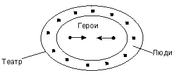
И Света и Марина удерживают и развивают свой образ войны как «театра», зрелища и точку зрения наблюдателя со стороны, сверху.
Учитель. Как видим, гомеровские герои всегда совершают свои подвиги «на миру», перед глазами зрителей, а библейский Авраам, чтобы принести в жертву Богу своего сына, удаляется в пустынное место. Почему так?
Лена Храпуненко. Для грека важно было, чтобы о его победе знали люди, потому что люди могут рассказать другим людям. И все будут знать, что был такой герой. А для евреев было важно, чтобы Бог знал.
Целью вопроса, предложенного учителем, была актуализация в сознании учеников диалога двух культур: античной и Древнего Востока. Этот же вопрос мы задали в следующем, 1998 году, следующему «поколению» семиклассников. В 7 классе 1997 года все согласились с ответом Лены Храпуненко, в 7 классе 1998 года наш вопрос вызвал бурный спор подростков. Приведем сочинение Маши Гладковой, написанное после состоявшегося диалога. Мы бы хотели обратить внимание не только на содержание, но и на сам способ работы Маши (мы стали культивировать его именно с 1998 года): в своем сочинении девочка приводит высказывания одноклассниц и строит работу как диалог с ними. Гомеровские герои и библейские праведники
Иланда: Гомеровские герои играют на публику, а Авраам старается показать Богу благородство людей. Оля: Аврааму главней, что скажет Бог, а не человек. Гомеровским героям -- наоборот.
Я не согласна с Иландой, что Авраам старается показать благородство людей, потому что Бог знает все и ему не нужно подтверждение. И Авраам это знает: «И сказал Бог: Кто сказал тебе, что ты наг? Не ел ли ты от древа, с которого я запретил тебе есть?» (Бытие, 3:11). Бог знал, что Адам съел плод с древа познания добра и зла. Потому что он все видит и все знает -- так считали древние евреи. Бог знал благородство всех людей. Так как Авраам верил в то, что Бог всезнающ, он не для демонстрации благородства уходил в землю Мориа (пустыню).
Я согласна с Олей и разделяю ее версию, что Авраам жил ради Бога и пойдет, куда прикажет Бог, а не человек. Я согласна с Олей и Иландой в том, что гомеровские герои играют, борются. Они борются для славы. Борьба героев превращается в бой гладиаторов! На битвах самых знаменитых героев зрители -- боги:
«Так троекратно они пред великою Троей кружились,
Быстро носящиесь. Все божества на героев смотрели...» (п.22, 165 - 166)
Я считаю, что Авраам ушел в пустыню, чтоб ему никто не мешал беседовать с Богом. Еще одна причина -- это то, что Бог велел ему идти, и Авраам не смел ослушаться Божьей воли: «Возьми сына твоего, единственного твоего, которого ты любишь, Исаака; и пойди в землю Мориа, принеси его во всесожжение на одной из гор, о которой я скажу тебе» (Бытие, 22:2). Этот фрагмент подтверждает, что древние евреи не могли и подумать о малейшем неповиновении, ведь мы знаем, что Авраам таки пошел в землю Мориа и принес бы в жертву сына, если бы Бог не остановил Авраама. А герои Гомера не только допрыгивают до богов, но и ранят их, как Диомед Ареса в голову и Афродиту в руку. Только один раз люди пытались допрыгнуть до Бога -- и были изгнаны из Рая: «Но знает Бог, что в день, в который вы вкусите их, откроются глаза ваши, и вы будете как боги, знающие добро и зло» (Бытие, 3:5). Ева и Адам ели плоды, но не только не стали богами, но и были изгнаны из Рая.
Зачем всезнающий Бог призывает Авраама и велит ему совершить невозможное? Почему Авраам «встал и пошел»? Эти вопросы станут для нас предельно важными в следующем, «средневековом», году. В поиске ответов мы вновь обратимся к тексту Библии (уже не только к главам из Книги Бытия, но и к Книге Пророка Ионы, Евангелию от Матфея) -- и к работе Маши. Мы заново переосмыслим их. В наших размышлениях над вопросами, поставленными иудейско-христианской культурой, окажется очень существенным опыт диалога с античной культурой, опыт размышления над ответами двух культур. У Маши -- и учебного сообщества в целом -- появится возможность вступить в диалог с самим собой «прежним».
На следующем уроке мы слушали и обсуждали сообщения «комментаторов» «Илиады», ребят, подготовивших рассказы о вооружении и тактике боя гомеровских героев, о том, как и что они ели, как лечили раненых, об их похоронных обрядах и «спортивных» состязаниях и т. п. А затем мы с детьми говорили о мифе и эпосе. Мы сравнивали «Илиаду» и аккадскую космогоническую поэму «Энума элиш». Мы сопоставляли вечное, повторяющееся, всегда настоящее время мифа и безвозвратно ушедшее героическое прошлое, изображаемое эпосом; сравнивали героев эпоса и мифа, сравнивали то, как «авторы» «Энума Элиш» и «Илиады» описывают поединки богов и героев. Этот разговор снова вывел нас на тему языка произведения. Мы говорили о том, как отличаются друг от друга страстное, соучаствующее, воздействующее на мир слово мифа и вспоминающее, отстраненно любующееся слово эпосаXIII.
11. Эйдос героя.
Целостность античной культуры определяется, по В. С. Библеру, сквозными идеями, едиными для всех граней античной мысли: поэтики, философии, истории, математики и т. д.19 Это идеи «эйдоса» («внутренней формы»), «акме» («той вершины жизни, с которой видны и могут быть перерешены ее начало и завершение»), «космоса» («эйдетически оформленной Вселенной - в его противостоянии хаосу, исходным стихиям (началам) всеобщего и личного бытия»20). «Общаться с античной культурой как единой целостной формой («эйдосом») и означает осмысленно ... общаться с личностью, понимающей мир (себя...других людей...) в идеях акме, эйдоса, космоса...»21
Чтобы понять собеседника, нужно научиться мыслить в его логике. Идеи «эйдоса», «момента акме», оппозиция «космос» : «хаос» становятся центральными для нашего «античного» года. Что это значит -- понимать мир «эйдетически»? «Я утверждаю, что (...) нет ничего столь прекрасного, что не уступило бы той высшей красоте, подобием которой является всякая иная, как слепок является подобием лица. Ее невозможно уловить зрением, слухом или иным чувством, и мы постигаем ее лишь размышлением и разумом. Так, мы можем представить себе изваяния прекраснее фидиевых, хотя не видели в этом роде ничего совершеннее, и картины прекраснее тех, какие я называл. Так и сам художник, изображая Юпитера или Минерву, не видел никого, чей облик он мог бы воспроизвести, но в уме у него обретался некий высший образ красоты, и, созерцая его неотрывно, он устремлял искусство рук своих по его подобию (...) Платон, этот достойнейший основоположник и наставник в искусстве речи, как и в искусстве мысли, называет такие образы предметов идеями [эйдосами - В. О.] и говорит, что они не возникают, но вечно существуют ... между тем, как все остальное рождается, гибнет, течет, исчезает и не удерживается сколько-нибудь долго в одном и том же состоянии. Поэтому, о чем бы мы ни рассуждали разумно и последовательно, мы должны возвести свой предмет к его предельному образу и облику» -- пишет Цицерон.22
Итак, понять предмет в античной логике -- значит возвести его «к его предельному образу и облику», представить его как внутреннюю идеальную форму, как эйдос.
Как известно, Платон отрицал познавательную роль искусства. Не так у Аристотеля. По Аристотелю, «изящные искусства отбрасывают преходящее, частное и обнаруживают постоянные и существенные черты оригинала. Они открывают форму («эйдос»), к которой предмет стремится, тот результат, к которому природа тянется, но достигает редко или никогда. За индивидуальным искусство находит универсальное. Оно проходит по ту сторону голой реальности, данной в природе, и выражает очищенную форму реальности, освобожденную от случайностей, от условий, которые мешают ее развитию. С этой точки зрения реальное и идеальное не противоположны друг другу, как иногда их понимают. Идеальное -- это реальное, но избавленное от противоречий, раскрывающее само себя по законам своего собственного существования, независимо от внешних влияний и превратностей случая»23.
Поэзия в этой логике есть способ понять предмет, средство «эйдетизации» предмета. Гомер не рассуждает о героизме, подобно писателю XIX века (как рассуждает Л. Толстой в «Войне и мире»), не раздумывает, подобно средневековому мыслителю, о его месте, смысле и предназначенье в божественном мирозданье (как Фома Аквинат в «Сумме теологии»). Гомер рисует идею героического, создает его законченный скульптурный образ. Не случайно «Илиада» написана гекзаметром: читатель не переносится в гущу событий (вспомним идею Кати Дударевой), но отстраненно созерцает этот образ и постигает его.
Как развить у подростков способность мыслить в античной логике, постигать мир «эйдетически»? Мы предложили семиклассникам следующее задание: попробовать продумать, «увидеть» умо-зрением и описать скульптуру Героя, не конкретных Ахиллеса или Аякса, -- а Героя, очищенного от всего лишнего, случайного, сиюминутного, и не в «случайную» минуту его жизни, когда он пирует, спит и т.п., а в момент его наивысшего проявления. Зритель, созерцающий эту скульптуру, должен понять, что такое герой, в чем закон и смысл героического существования.
ЭЙДОС ГЕРОЯ
Женя Манко
Вот он стоит и, мечом потрясая блестящим,
Всех призывает бороться с врагами ахейцев.
Шлем его блещет, как солнце полуденнояркое,
И весь он, грозный, в сердце врага страх безмерный вселяет.
Никита Цыганок
1 Вот на землю ступает герой благородный.
Грозен он ликом и взглядом тяжел, словно камень.
Множество воинов славных оставил он псам на съеденье,
Души их бродят во тьме, не нашедши покоя.
5 Может поднять с земли камень, что весом его самого
превосходит
Воинов тысячи он может повергнуть на землю,
Но не в руках его страшная сила, железною волей
Всех он могучее смертных, что бренны и слабы душою.
Мужу отважному пусть и Судьба покорится, что всем
верховодит!
Маша Донская
1 Вижу я эйдос героя, когда он в бою промышляет.
Бой, урагану подобный, кровавый нещадно бушует.
Вот и герой шлемоблещущий толпы врагов поражает.
Солнце блистает на медных доспехах, копье медным жалом.
5 Вихрю подобен герой сей, когда ко врагу подступает.
Соня Вальшонок
Мощные члены его, пышновздутые от напряжения ноги,
Меч, все секущий, копье, протыкающее сынов земли
При безумном гневе, и камень -
Все они братья и сестры героя могучего тела и мозга,
Бушующего от напряженья и раздраженья.
И мысли кишат на челе.
Напомню, это было только начало нашей работы -- начало нашего движения к пониманию «Илиады» и к пониманию того, что есть эйдос и эйдетическое мышление. В стихотворениях ребят нет (и не может быть -- пока) глубокого понимания гомеровской идеи героического. Но нам кажется важным, что свое -- пусть пока поверхностное -- понимание ученикам удается собрать, воплотить в скульптурном образе, и что для этого им понадобилась поэтика Гомера.
У истоков греческой мысли, у Гомера и у досократиков, слово «эйдос» означало «(внешний) вид», «образ». Постепенно слово переосмысливалось, обрастало дополнительными смыслами, становилось философским термином. У Геродота и Фукидида оно приобретает значение, близкое к «виду» как единице классификации. У Платона оно становится синонимом термина «идея», «трансцендентная умопостигаемая форма, существующая отдельно от единичных вещей»24. Нечто подобное будет происходить с понятием «эйдос» и в нашем «античном» году. В нашем с ребятами движении от Гомера к Платону и Аристотелю наше представление об эйдосах будет постоянно переосмысливаться и углубляться. Сейчас, в совместной работе над первыми песнями «Илиады», дети увидели саму возможность понимать мир эйдетически. Способность к эйдетическому постижению мира мы с ребятами будем развивать в себе весь «античный» год -- с тем, чтобы в следующем, «средневековом» году столкнуть ее с иной способностью, способностью понять мир, предмет, человека как причастных Богу.
Замечания
С. Ю. Курганова. К вопросу об эйдосах
Стилизации детей очень хороши. Но схватывают ли они эйдос героя? С точки зрения античности, понять нечто -- это значит построить эйдос, Хаос определить как Космос (В. С. Библер). Здесь важен сам процесс понимания, процесс эйдетизации. Как эйдетизирует, как строит эйдос героя Гомер? Эйдос -- это форма мышления. Созерцание, лепка, конструирование скульптуры, создание образа, но образа идеи. Изображение... понятия. Созерцание... смысла.
Когда ребенок описывает, подражая Гомеру, «героя вообще», создает ли ребенок образ понятия (образ-понятие) героя? В чем здесь идея, которая существует в форме образа? Скажем, изображается ли, что герой -- это тот, кто соединен (в точке акме) со своей способностью, т.е. является эйдосом этой способности (храбрости, красоты, хитрости, дерзости)? Тогда нужно «убрать» все остальные способности героя и представить Елену только как эйдос красоты, а Одиссея -- только как эйдос хитрости. Как это сделать? Гомер это делает. И мы можем понять Гомера. Но не методом стилизации, а вначале -- с помощью анализа. Анализа эйдоса «героической красоты» («сводить с ума -- геройство») или «героического хитроумия». Мы можем попытаться проследить, как Гомер предельно освобождает героя от остальных его качеств. А лишь потом -- строить стилизации, подражая этому умению ГомераXIV.
12. Герой и судьба. Весы Зевса
На этом уроке в центре обсуждения оказалась новая проблема: герой и судьба. Разговор начала Маша Донская, обратившая наше внимание на знаменитый фрагмент из 8 песни:
«Но, лишь сияющий Гелиос стал на средине небесной,
Зевс распростер, промыслитель, весы золотые; на них он
Бросил два жребия Смерти, в сон погружающей долгий:
Жребий троян конеборных и меднооружных данаев;
Взял посредине и поднял: данайских сынов преклонился
День роковой, данайских сынов до земли многоплодной
Жребий спустился, троян же до звездного неба вознесся».
(VIII, 68 - 74)
Учитель. Да, это очень интересное место: Зевс на весах взвешивает жребии ахейцев и троянцев и таким образом узнает, кто в этот день победит. Этот же мотив мы встретим еще раз в 22 песне, рассказывающей о поединке Ахиллеса и Гектора. Зевс взвесит на золотых весах жребии героев, жребий Гектора «преклонится», и это предрешит исход поединка.
Маша. По-моему, тут есть противоречие...
Оля Дунаевская. Это похоже на то, как Осирис взвешивал души умерших и решал, куда попадет человек после смерти.
Никита. Это совсем другое! Осирис взвешивал грехи и хорошие стороны человека, а Зевс -- их жребии. Он узнавал, не кто из них лучше, а их судьбу. Из этого эпизода получается, что у него есть жребии всех людей. В «Энума элиш» у Мардука есть табличка, на которой записаны все судьбы. Осирис судит, а Зевс просто узнает судьбу.
Оля. Агамемнон же принес в жертву свою дочь, а потом еще обидел Ахиллеса, поэтому Зевс наказывает ахейцев.
Никита. Где это сказано, что Зевс наказывает? Зевс не наказывает, а узнает судьбу! Он ничего не может изменить в судьбе Агамемнона, ее сплели мойры еще до рождения Агамемнона!
Маша. Дайте мне договорить! Вы все перепутали! Тут противоречие: Зевс помогает троянцам, потому что его об этом попросила Фетида из-за обиды Ахиллеса. Значит, он сам меняет ход войны. Но зачем же он тогда взвешивает на весах жребии троянцев и ахейцев?
Женя Манко. Я думаю, то, что Зевс из-за Ахиллеса поменяет ход войны, было с самого начала выплетено мойрами.
Тимур. Я тоже так считаю. Иначе Зевс ничего не смог бы сделать, судьбу нельзя изменить.
Оля Лейкехман. Я думаю, судьба устроена так:
(рисует на доске)
Рисунок 2
Начало и конец предопределены, их нельзя изменить. Троя все равно погибнет, «Будет некогда день, и погибнет великая Троя», Ахиллес погибнет, ахейцы победят. Но пути между этими двумя точками могут быть разные, их можно как-то выбирать, менять.
Тимур. Немного не так. Жизнь -- это дорога, на этой дороге есть перекрестки. Заранее решено, куда ты свернешь на этом перекрестке, но до перекрестка ты можешь идти хоть по правой стороне, хоть по левой.
Рисунок 3
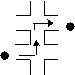
Никита. Доказательства?
Оля. Зевс изменил судьбу ахейцев и троянцев на маленьком кусочке между этими точками, ничто важное не поменялось.
Даша Апилат. Ничего себе не поменялось! Сколько там за эти дни людей погибло!
Саша Золотько. А Гомера интересует судьба только героев. Он вообще ничего не говорит о простых людях. Наверное, у них вообще нет судьбы.
Учитель. То есть?
Саша. Соня же говорила на каком-то уроке, что для Гомера жить -- это значит быть героем.
Оля Конева. Я больше согласна с рисунком Тимура, ведь судьба -- это ниточка, а не отдельные бугорки.
Учитель. Мне кажется, Маша очень точно уловила противоречие, точнее, парадокс во взгляде Гомера на судьбу. Кто определяет в конечном счете судьбу -- Зевс или мойры? Может ли Зевс изменить судьбу или он только следит за ее исполнением? Вот вопросы Маши. Я даже попробую усилить.
Аксиома 1. Судьба человека определена изначально, еще до его рождения, и ничто не в силах ее изменить.
Аксиома 2. Богам нужно приносить жертвы, просить их о помощи.
Но зачем просить богов вмешаться в судьбу, если она предопределена? И еще одна проблема, увиденная Олей Дунаевской и Никитой: почему судьба человека именно такова? Беды, которые он переживает, предписаны заранее и не зависят от его достоинств и недостатков или являются расплатой за его (или его предков) прошлые ошибки и преступления?
Рома Клочко. Я думаю, судьбу определяют и Зевс, и Мойры. Мойры решают, чем все кончится, что Троя погибнет, а остальное решают боги. Аполлодор же не говорил, что Троянская война началась из-за судьбы. Он писал, что это Зевс захотел прославить Елену и поэтому заставил Париса ее украсть. Я согласен с рисунком Оли.
Лена Храпуненко. Но он же в 8 песне взвешивает не как война кончится, а кто в этот день победит! Значит, мойры выплетают всю ниточку, они выплетают каждый день судьбы.
Женя Манко. Я хочу возразить Никите. Никита говорил, что Зевс не судит героев, а просто узнает судьбу. В 8 песне это так, я согласен, а в «Одиссее» Посейдон все-таки судит, он там наказывает Одиссея за то, что Одиссей ослепил циклопа, и десять лет не дает ему вернуться домой... Хотя, может, это было уже выплетено мойрами -- чтобы Одиссей ослепил и Посейдон его наказал...
Тимур. Я думаю, Посейдон только думает, что сам наказывает, а на самом деле, это судьба его заставляет.
Оля Лейкехман. Но почему мойры одному человеку плетут такую судьбу, а другому -- другую?
Учитель. Похоже, у Гомера нет ответа. Будем считать, что это вопросы, заданные нам Гомером, греками25. Но посмотрите на продолжение того фрагмента, который прочитала Маша. Напомню, Зевс узнал жребий ахейцев и мечет в них молнию, «страшный перун». Ахейцы прекрасно понимают, что это значит, и в ужасе бегут: сопротивляться бессмысленно, судьба боя предопределена. На месте остаются лишь Нестор (он не может бежать, его конь убит) и Диомед, который не хочет бежать. Диомед призывает Нестора на свою колесницу и устремляется на троянцев.
«Сеча была б, совершилось бы невозвратимое дело,
В граде своем заключились бы, словно как овцы, трояне;
Но увидал то быстро отец и бессмертных и смертных.
Он, загремевши ужасно, перун сребропламенный бросил
И на землю его пред конями Тидида повергнул:
Страшным пламенем вверх воспаленная пыхнула сера;
Кони от ужаса, прянув назад, под ярмом задрожали;
Пышные коней бразды убежали из старцевых дланей;
С сердцем трепещущим он провещал к Диомеду герою:
«Друг Диомед, оборачивай к бегству коней быстроногих.
Или не чувствуешь ты, не тебе от Кронида победа!
Ныне его на бою громомещущий Зевс прославляет,
Гектора; после, быть может, когда возжелает, дарует
Славу и нам. Человек не преложит советов Зевеса,
Сколько бы ни был он силен: могучее он, громовержец!»
Но ему отвечал Диомед, знаменитый воитель:
«Все справедливо и все ты разумно, старец, вещаешь;
Но болезнь мне жестокая сердце и душу проходит!
Гектор некогда скажет, пред сонмом троян велереча:
- Вождь Диомед от меня к кораблям убежал, устрашенный, -
Скажет, хвалясь, и тогда расступися, земля, подо мною!»
(VIII, 130 - 150)
Юра Пащенко. Он страшно боится показаться трусом, для него лучше смерть, чем позор.
Женя Шестеркин. Когда Зевс кидает молнии, пахнет серой, как от дьявола. Я думаю, те люди, которые написали Библию, читали «Илиаду».
Оля Лейкехман. Очень красиво и торжественно написано: «перун сребропламенный бросил», «Пышные коней бразды убежали из старцевых дланей»...
Маша Донская. «пред сонмом троян велереча»...
Юля Шемет. Это тот Диомед, который ранил Афродиту и еще какого-то бога, а теперь он даже Зевса не слушает.
Маша Колесник. Сплошной хюбрис! Это эйдос героя!
Учитель. Мне кажутся очень интересными первые стихи фрагмента:
«Сеча была б, совершилось бы невозвратимое дело,
В граде своем заключились бы, словно как овцы, трояне»
Тут есть очень интересное слово «невозвратимое». Что это значит?
Юра. Это значит, у него нет возврата, если сделал, уже не переделаешь.
Женя Манко. И Зевс этого боится! По судьбе должны были победить троянцы, а тут чуть было не победил Диомед! Это было бы «невозвратное дело», вся судьба бы пошла наперекосяк. Зевс как бы охраняет судьбу от Диомеда, три раза бросает в него молнию.
Учитель. Похожий эпизод есть в 16 песне. Предсказано, что Троя падет только после смерти Ахилла. Но у героя Патрокла настолько могучая воля, что он чуть было не взял Трою «вопреки судьбе», он взял бы Трою, если бы не вмешался, не выступил против Патрокла сам Аполлон. А в 20 песне рассказывается о том, как Ахиллес, потрясенный смертью своего друга Патрокла, устремляется в бой против троянцев. И Зевс, до этого запрещавший богам вмешиваться в войну, теперь сам приказывает им принять участие в битве. Вот какие слова произносит Зевс:
«Так, Посейдаон! проник ты в мою сокровенную волю,
Ради которой вас собрал: пекусь я о гибнущих смертных.
Но останусь я здесь и, воссев на вершине Олимпа,
Буду себя услаждать созерцаньем. Вы же, о боги,
Ныне шествуйте все к ополченьям троян и ахеян;
Тем и другим поборайте, которым желаете каждый.
Если один Ахиллес на троян устремится, ни мига
В поле не выдержать им Эакидова бурного сына.
Трепет и прежде их всех обымал при одном его виде;
Ныне ж, когда он и гневом за друга пылает ужасным,
Сам я страшусь, да, судьбе вопреки, не разрушит он Трои».
(ХХ, 19 - 30)
Зевс страшится, что герой может поступить «вопреки судьбе»!
Рома Клочко. Это как если бы человек раскрутил Землю наоборот.
Стасик Андренко. Да, Зевс говорит, что заботится о «гибнущих смертных», а на самом деле боится, что Ахиллес судьбу изменит.
Геля Канкава. Он не боится, а радуется, что сейчас будет интересно! Сейчас все будут воевать, а он усядется на Олимпе и будет любоваться сверху.
Света Савочка. Нет, Геля, он же сам говорит, что боится. Представь, что может быть! Наступит хаос! Лошадь превратится в собаку! Титаны выйдут из-под земли!
Катя Слюсарева. Но боги же знают, что судьбу нельзя переделать!
Саша Золотько. А вдруг? Может, боги нужны, чтоб охранять судьбу.
Иланда Карацева
(Из домашних записей в тетради, 1998 г.)
Могут ли боги изменить судьбу? Нет! Боги сами рабы судьбы, ее пленники. По желанию Рока случилось: Урана сверг Крон, Крона сверг Зевс. Мойры? Они лишь выполняют веления судьбы; делают «черную» работу; выполняют заранее задуманный, искусно задуманный и украшенный прихотливыми вензелями план.
А могут ли хоть какие-то создания изменить судьбу? Тоже нет! Все уже продуманно. Гнев богов, на людей обращенный за их вмешательство в судьбу... Это - игра. Все понимают, верят в судьбу. И этот же гнев предопределен судьбою уже давно.
Почему боги боятся героев? Боги боятся героев потому, что хоть герои и смертны, замыслы их могут быть слишком уж дерзкими. Герой - герой только тогда, когда плывет против течения, а не по течению. Ведь можно в любой момент попасть в бурлящий, ужасный и в то же время восхищающий своей силой, красотой, мощью водоворот. Ксюша Утевская (Из домашних записей в тетради, 2002 г.)
Гомер в своих стихах делает поражающее допущение того, что судьба не всесильна. Зачем Гомер, если б верил в рок беспрекословно, говорил, что «была бы сеча», если б не Зевс, что было бы «неотвратимое дело», зачем он это даже допускает? Зачем аэд пишет «судьбе вопреки»? Как это возможно, судьбе и вопреки? Я не отрицаю того, что Гомер верит в судьбу, нет, я говорю, что порой у слепца бывают такие моменты, которые шатают всевластие рока. То есть, если Зевс или Аполлон вмешиваются в дела людей, то рок зависит от богов, которые помогают ему свершиться. Или как-то иначе? Рок существует лишь при космосе с богами, которые выполняют обязанности. А что будет, если Зевс убережет своего сына Сарпедона от смерти? Смерти, предназначенной издревле роком. Почему Гера говорит, что Зевс поступком этим лишь возбудит ропот среди детей иных богов? Она даже не говорит, что будет хаос, конец света из-за того, что рок не исполнится. Значит, все не так просто, как сначала думается, мол, рок заранее предусматривает все на свете и властвует над всем. В 16 песни есть странное место: Зевс сам думает, как ему поступить, сохранить жизнь сыну или Патроклу. Лишь Гера напоминает ему о роке.
Через несколько лет, в 2003 г., мысль семиклассников привлек жребий, лежащий на весах Зевса. Попытка поступить «вопреки судьбе» – попытка героическим усилием нарушить движение весов, преодолеть тяжесть своего жребия, вознести его «до звездного неба». Обычно судьба скрыта, но в решающие минуты Зевс обращается к ней и выполняет ее решения. Зевс потому никогда и не вмешивается в битвы, что он -- это тот, кто держит весы. Он не дает богам вмешиваться в битву по их желанию, потому что иначе будут нарушены жребии. Или посылает богов выполнить решения судьбы. Или -- если посылает их «поборать» героям, то только и тем, и другим, чтобы -- наслаждаясь битвой -- не нарушить при этом судьбу, уравновесить вмешательство богов.
Настя Золотова
Главное в «Илиаде» -- судьба. Она всем руководит, и все ей подчиняются. На одном из уроков Андрей Газо сказал, что Зевс не может спуститься вниз и помочь тем, кто лежит ближе к сердцу, троянцам, т.к. он держит весы судьбы. Конечно, иногда он хочет спуститься вниз и нарушить судьбу, но не может, т.к. тогда в мире наступит первоначальный хаос. Юра спросил: зачем тогда нужны остальные боги? Ну, один есть держатель весов, а зачем еще? И я сказала, что боги мешают героям нарушить судьбу разными способами, например, когда Аполлон увел Ахиллеса в поле, чтобы троянцы смогли укрыться за воротами Трои. Иногда боги спускаются с неба либо к ахейцам, либо к троянцам и просто удовлетворяют свою душу, помогая им, но на самом деле ни в какую сторону не перевешивая весы.
Еще был вопрос: почему боги бессмертны? Юра ответил: потому что они мешают героям нарушить этот «механизм», который держит Зевс. Я с этим согласна, так как судьба уже выбрала того главного держателя, который не может пойти ей вопреки. А если поколения богов будут меняться, весы будут переходить из рук в руки, боги начнут забывать про свои обязанности и не верить в судьбу, вот тогда и выйдут силы хаоса и накроют землю беспорядком.
Насчет того, что бог держит весы судьбы и подчиняется ей, говорят читатели, а герои думают иначе. Они думают, что боги руководят судьбой всех на земле. Например, Ахиллес говорил, что в это день Зевс дал ему победу над Гектором. Все самое главное о судьбе в «Илиаде» я уже рассказала, а остальное надо отгадывать самим, прочитав «Илиаду». Андрей Газо
Главная роль богов -- это предотвращать поломку судьбы и весов Зевса, который и есть главный защитник судьбы и держатель весов. И если герой попытается свернуть шестерни в механизме судьбы, то ему придется иметь дело с Зевсом, который мало того, что будет всячески отгонять героя, так и еще герою придется повернуть руку Зевса. Сделаю вывод: герои -- титаны, а боги -- те, кто держат титанов за хвост.
(Видимо, мальчик имеет в виду Пергамский фриз) Настя Мясоедова
Мне еще очень интересно, откуда Зевс берет жребии для весов. Об этом Гомер ничего не говорит. Я думаю, если судьба -- это механизм, который охраняет, как сказал Влад, «Зевс - рабочий», значит где-то есть специальная деталь, откуда эти жребии появляются, когда рождаются герои. Но тогда как появляются жребии троянцев и ахейцев [т.е. народов в целом – В. О.]? Над этими вопросами можно очень долго думать!
Конечно, Зевсу тоже нелегко справиться с судьбой. Защищать ее от таких, как Диомед, который не слушал даже приказы Зевса. Зевс уже начал действовать силой, но Диомед на это не обращал внимание! Еще говорят, «живет, как бог». Наверное, тот, кто это первый сказал, совсем не читал «Илиаду». Легко жить, когда надо стоять всю свою бессмертную жизнь на посту и охранять судьбу от очень смелых героев и хаоса!
13. Гнев героя
На этот раз разговор начал учитель. Он напомнил, «вернул» семиклассникам их идеи, высказанные на прошлых уроках, в том числе, идею о том, что судьба героя так или иначе предопределена.
Учитель. Но давайте вспомним песнь 9, «Посольство». Когда послы ахейцев просят Ахиллеса забыть обиду и прийти на помощь гибнущим данайцам, Ахиллес отказывается, говоря им о ценности жизни и о своем двойном жребии.
«С жизнью, по мне, не сравнится ничто: ни богатства, какими
Сей Илион, как вещают, обиловал, - град, процветавший
В прежние мирные дни, до нашествия рати ахейской;
Ни сокровища, сколько их каменный свод заключает
В храме Феба пророка в Пифосе, утесами грозном.
Можно все приобресть, и волов, и овец среброрунных,
Можно стяжать и прекрасных коней, и златые треноги;
Душу ж назад возвратить невозможно; души не стяжаешь,
Вновь не уловишь ее, как однажды из уст улетела.
Матерь моя среброногая, мне возвестила Фетида:
Жребий двоякий меня ведет к гробовому пределу:
Если останусь я здесь, перед градом Троянским сражаться, -
Нет возвращения мне, но слава моя не погибнет.
Если же в дом возвращусь я, в любезную землю родную,
Слава моя погибнет, но будет мой век долголетен
И меня не безвременно Смерть роковая постигнет».
(IX, 401 - 416)
Оказывается, у Ахиллеса есть выбор. Он знает о двух вариантах своей судьбы, его глаза открыты. Он говорит о ценности жизни, -- но после гибели Патрокла выбирает смерть...
Оля Лейкехман. Я хочу изменить свой рисунок судьбы. В судьбе героя может быть распутье, как в волшебных сказках, и тогда герой сам выбирает, по какой дороге пойдет.
(рисует на доске)
Рисунок 4
Женя Манко. Все равно его выбор уже заранее предопределен Мойрами.
Маша Донская. Но Ахиллес же этого не знает и думает, что сам выбирает. Он же не в обмороке это делает!
Учитель. Почему же Ахиллес совершает именно такой выбор? Мы ведь встречали уже похожую ситуацию в другом знаменитом эпосе: Гильгамеш тоже потрясен смертью друга. Но реакция героев оказывается совершенно разной. Гильгамеша гибель Энкиду ужасает, заставляет впервые задуматься о смерти, осознать, что такое смерть. Гильгамеш отправляется искать бессмертие, -- а Ахиллес забывает о радости жизни и бросается в бой, выбирает смерть.
Саша Золотько. А зачем ему теперь жить? Это же из-за него погиб Патрокл. Он чувствует свою вину и хочет ее искупить. Он плачет над телом Патрокла и говорит:
«О, да умру я теперь же, когда не дано мне и друга
Спасть от убийцы! Далеко, далеко от родины милой
Пал он; и, верно, меня призывал, да избавлю от смерти!
Что же мне в жизни? Я ни отчизны драгой не увижу,
Я ни Патрокла от смерти не спас, ни другим благородным
Не был защитой друзьям, от могучего Гектора падшим...»
(XUIII, 98 - 103)
Стасик Андренко. Я согласен с Сашей, но у меня есть еще одна версия. Патрокл ведь был в доспехах Ахиллеса, и когда Гектор убил Патрокла, ему досталась вся слава. А Ахиллес не может этого вынести. Все-таки слава для него важнее жизни. А послам он говорил другое, потому что был обижен на Агамемнона.
Оля Лейкехман (читает запись в тетради) Почему Ахиллес выбирает смерть? Только что у Ахиллеса погиб лучший друг Патрокл, и это полностью изменило Ахиллеса. Вместо долгой жизни он выбирает смерть. Выбирает ту же участь, что постигла его друга. Однако, мне кажется, у Ахиллеса был несколько другой выбор: 1. жизнь без славы и отмщения, 2. отмщение и слава, но смерть. Ахиллес выбирает второе, однако, как мне кажется, не из-за славы, а именно из-за возмездия. Слава для Ахилла уже не так важна, и в этом, мне кажется, его принципиальное отличие от других героев «Илиады» и мифов. Ахиллес испытывает любовь к другу, любовь, которая сейчас сильнее любви к семье, потому что в ней еще отчаяние и злоба. Эта любовь в Ахиллесе сильнее всего.
Учитель. Это очень интересная мысль, -- о том, что Ахиллесом движет любовь... Не христианская любовь, которая призывает прощать, любить врагов, мы видим другую любовь, смешанную с отчаянием и злобой, она заставляет мстить... Но я решительно не согласен с тем, что слава для Ахиллеса уже не важна. Вот фрагмент из 21 песни, Ахиллес, мстя за Патрокла, истребляет троянцев:
«Рати ж троянские к городу прямо, к твердыне высокой,
Жаждой палимые, прахом покрытые, с бранного поля
Мчалися; бурно их гнал он копьем; непрестанно в нем сердце
Страшно пылало свирепством, неистово славы алкал он.
Взяли б в сей день аргивяне высоковоротную Трою,
Если бы Феб Аполлон не воздвигнул Агенора мужа...»
(XXI, 540 - 545)
Он так неистово жаждет славы и так пылает «свирепством», что чуть было -- снова «вопреки судьбе» -- не взял Трою.
Никита. Здесь главное слово - «свирепство». Я думаю, так неправильно спрашивать: почему Ахиллес выбрал смерть. Он же не сидел и не думал: что мне выбрать? Он от горя почти обезумел, впал в страшное «свирепство».
Маша Донская. Нет, он впал в «свирепство» не когда узнал о смерти Патрокла, он тогда просто сильно горевал, а когда Фетида приносит ему доспехи.
Учитель. Да, это интересное место.
« Так произнесши, Фетида на место доспех положила
Пред Ахиллесом; и весь зазвучал он, украшенный дивно.
Вздрогнули все мирмидонцы; не мог ни один на доспехи
Прямо смотреть, отвратились они; Ахиллес же могучий
Только взглянул - и сильнейшим наполнился гневом: ужасно
Очи его из-под веждей, как огненный пыл засверкали.
С радостью взяв, любовался он даром сияющим бога...»
(XIX, 12 - 18)
В то время как простые воины испытывают страх, Ахиллес наполняется гневом. И его гнев смешан с радостью. Как это может быть?
Никита. Гнев -- это такое чувство, которое переполняет героя, оно бросает его в бой, и герой радуется, когда его чувствует.
Оля Дунаевская. Гнев -- это как страшное желание. Как первоклассники перед первым сентября, когда видят учебники и портфель, очень хотят учиться.
Вероника Ивенская. Это похоже на чайник. Гнев вырывается из героя, как пар из чайника, когда он кипит.
Учитель. «Гнев, богиня, воспой...». Похоже, это вообще ключевое слово в «Илиаде». Вот о чем поет Муза, о чем Гомер в «Илиаде» рассказывает -- о гневе.
Оля Лейкехман. В «Илиаде» два гнева: первый, -- когда Ахиллес гневается на Агамемнона, а второй, -- когда на Гектора. Это два разных гнева .(Читает медленно и торжественно первый стих Первой песни и быстро, яростно 16 - 19 стихи Девятнадцатой песни). Второй гнев -- как черный дым, клубится.
Учитель. Однако «ахеянам тысячи бедствий соделал» именно «первый» гнев. Вообще, мне не кажется, что это два разных чувства. По-моему, это все та же неистовая, клокочущая ярость, которая не знает меры. Заметим, кстати, «первый» гнев (обида на Агамемнона) проходит только тогда, когда вспыхивает «второй» гнев, и только потому, что вспыхивает «второй».
Никита. Я согласен, что это один и тот же гнев. У героя всегда есть гнев, он входит в эйдос героя. Герой -- это как ящик, наполненный песком (гневом), стоит только чуть-чуть добавить песка, и он начинает пересыпаться через край. И тогда герой впадает в безумие и начинает нападать на богов.
Марина Бугай. А я не согласна, они все-таки немного разные. Гнев в первом случае -- это такой комок черный-пречерный, и он находится ровно посередине. А гнев во втором случае -- это светленький дымок, как туман, который по всему человеку и который пытается вырваться.
Итак, на этом уроке героический гнев был осознан как главная движущая сила «Илиады» и как суть этоса (нрава) героя. Тема Гнева героя станет еще одной сквозной темой нашего «античного» года. Дети будут говорить о гневе Одиссея, Эдипа, Александра Македонского... Приведу еще несколько -- домашних - работ детей о том, что такое Гнев героя.
Лена Храпуненко.
Гнев героя -- это когда герой разозленный, как одичавшая кошка в драке с собакой. Во время гнева он силен, как Зевс во время метания грома и молнии. Стремителен, как ураган или смерч. Жесток к врагам, как бог подземелья к живым. В гневе герой грозен, неукротим, как Лев - царь зверей! В гневе герой -- это бушующее море, это вулкан во время извержения. Очи героя, как огненные шары.
Юра Пащенко
Гнев -- существо, которое очень часто овладевает героями. При помощи гнева герой может сравниться и сразиться с кем угодно и убить хоть целое войско. В гневе герой, словно орел, парящий в небе и увидевший жертву, словно бык, увидевший красное. Он убивает, кромсает, рвет и мечет. И все становятся свидетелями мясорубки. Когда в гневе герой, он сравнивается с богами по могуществу. Он даже может изменить свою судьбу. Но боги всегда как бы изгоняют из героя гнев, и он «остывает». Герой + гнев = слава, могущество. Герой -- ничто без гнева. Герой -- это ведро, наполненное доверху водой, и стоит хоть капле упасть в ведро, и вода из него выливается, и к герою приходит ГНЕВ...
Иланда Карацева (1998 г.)
Радость, смешанная с гневом, -- безрассудный гнев, безрассудная ярость. Теряется рассудок, разум помрачается, человек перестает себя контролировать и осознавать что-либо. В таком состоянии возможны убийства и кровопролития.
Заметим в работе Иланды слово безрассудный. Вот главное, с точки зрения девочки, качество героя -- он теряет рассудок. Когда дети совершают какие-то (для себя) открытия, они удерживают и развивают их. Примерно через месяц Иланда напишет следующее сочинение.
Почему погиб героический мир?
Время, воспеваемое Гомером, -- погибшее время героизма. А песни Гомера о бесстрашных героях -- лишь отблески закатившегося солнца. Но почему они все погибли? Герои, которые не боялись ничего: ни смерти, ни кары богов, ни самой Судьбы... Не доживая до седых волос, они погибали, но почему? Ведь вместе с ними погиб и их гнев. Это был не простой гнев людей, которые даже в гневе не теряют самообладания, даже в гневе страшатся гнева высшего, нет! Это был тот гнев, что сам является высшим, что сносит на своем пути все преграды, гнев яростно-безрассудный, ибо герои умны, но не рассудительны. Рассудительные люди никому не страшны, страшны люди безрассудные, не помнящие себя, не осознающие опасностей, которые им угрожают. Таких людей боятся сами бессмертные боги, даже сама Судьба, владычица и бессмертных, и смертных, испытывает перед безрассудными героями страх.
Ведь сама Судьба мудра, рассудительна, а героический мир буен, пышет силой, яростью и тем страшным безрассудным гневом, внушающим страх и трепет людям, богам и Судьбе. В пик своего безрассудства герои могут свергнуть саму Судьбу с ее пьедестала, раскрыть недостойным ее тайны, нарушить ее священный порядок и покой всего космоса. Героический мир погиб потому, что он мог возродить священный хаос.
А вот фрагмент из сочинения Иланды по «Одиссее»:
Одиссей умный??? Мудрый??? Говорят, умный, сделав ошибку, ее больше не повторяет, а мудрый ее вообще не делает! Одиссей не только делает ошибки, но и повторяет их (идет к циклопу, Цирцее, называет всем свое имя). Герои, подобные Ахиллесу, -- безрассудно гневны. Герои же, подобные Одиссею, -- безрассудно хитры. Безрассудная хитрость -- хитрость неожиданная и иногда не к месту. Хитрость, в которой не участвует рассудок; хитрость, которая сама по себе, надменная, не обдумывающая последствия. Герой выходит из одной проблемы путем попадания в другую.
Обсуждение работы в классе помогло нам прояснить -- и развить -- мысли Иланды. Одиссей никогда не рассчитывает свои поступки; он хитрит не тогда, когда ему это выгодно, а всегда, подобно тому как Ахиллес всегда готов броситься в бой. Это хитрость бесконечно гордая собой -- и потому безрассудная. Перехитрив Полифема, Одиссей так гордо и громко выкрикивает свое имя, что его слышит весь Космос, -- и тем самым обрекает себя на гнев Посейдона. Сами подвиги Одиссея: победа над циклопом, спуск в преисподнюю, то, что ему удалось услышать пение сирен, -- это попытка перехитрить судьбу, закон меры, превысить человеческую участь. И многострадальность Одиссея -- прямое следствие его хитроумия; это расплата Одиссея за его «безрассудную» хитрость, подобно тому как страдания Ахиллеса оказываются расплатой за его безрассудный гневXV.
Замечания
С. Ю.Курганова. О метафоре и эйдосе
«Герой наполняется гневом» -- эйдос. Это можно понять буквально: гнев приходит, и им пропитывается герой. Здесь нет «другого значения». Мы можем видеть это наполнение гневом. Мыслить эйдетически -- это значит видеть идею гнева, как пластический образ. «Чувство, которое переполняет героя» -- метафора. Метафора украшает речь. Мы понимаем, что нет никакого сосуда, нет никакой «героической жидкости», но мы используем слово «переполняет» в переносном смысле, усиливая образ.
Но все же «герой наполняется гневом» -- это еще не вполне эйдос. Чтобы стать эйдосом, необходимо быть образом мысли о гневе, образом идеи гнева. Эйдос гнева -- это ответ на вопросы: «Что есть гнев?», «Как возможен гнев?», «Что удерживает гнев?» Понять, что есть гнев, -- это значит построить образ своей мысли о том, как возможен гнев, т.е. построить эйдос гнева, сделать шаг в развитии собственного эйдетического (а не просто наглядно-образного) мышления.
Возможно, что эйдетическое мышление возникает из образного, метафорического восприятия ребенка, которое у ребенка есть до изучения античности. В античном классе ученик переходит от образного восприятия -- к эйдетическому мышлению, к построению образов своих мыслей. Учащийся переходит от метафоры к эйдосу. Мало сказать, что эйдос гнева -- черный клубящийся дым. Пока это только -- удачная метафора, хороший образ. Хорошо бы довести этот образ до эйдоса. Так, чтобы все особенности гнева были поняты, скажем, как черный дым. Или как то, чем наполняется герой и т.д. Дети говорят: Гнев -- это песок, наполняющий героя, как будто герой -- это ящик. Гнев -- это черный, клубящийся дым. Гнев -- это жидкость, которую впитывает герой, переполняясь ею.
И -- вместе с тем, гнев -- это высшее проявление героя. Герой -- в точке акме -- становится гневом. Он весь есть гнев. Он -- эйдос гнева, образ идеи гнева, вместе с процессом идеализации, эйдетизации. Показано, как герой из обычного человека становится гневом (как Зевс становится молнией или весами). Но это только один из эйдосов героизма -- Ахиллесов эйдос героя. Если гнев -- это существо, которое овладевает героем, то этот эйдос гнева должен быть так развит эйдетически мыслящим ребенком, чтобы из него следовал ответ на вопрос о том, что есть гнев, и как он возможен. А если гнев -- это и существо, и, вместе с тем этого мало, и приходится сравнивать гневающегося героя с кошкой, орлом и быком (не сказано, что кошка, орел и бык овладевают героем и он становится ими, -- тогда развивался бы эйдос гнева и строились бы типы эйдоса: типы существ, способных овладеть героем и породить разные виды гнева), а потом... с ведром, то вообще теряется эйдос существа.
Ни один детский образ гнева не доведен до эйдоса: ни гнев - песок, ни гнев - черный дым, ни гнев - жидкость, ни гнев - существо. Чтобы довести до эйдоса эти метафоры, необходимо помыслить гнев только как, скажем, живое существо, овладевающее героем. Нужно построить во всех деталях этот процесс превращения героя в гнев. И не как в сказке, когда превращение происходит сразу, без предварительных этапов (Царевна - Лебедь обращается девушкой; на острове Буяне сразу возникает город), а именно как в эпосе, где подробно и обстоятельно воспроизведено, как все иное угасает и усыхает в герое, как он становится весь гневом. Мы -- в своем мышлении, отвечая на вопрос, что есть гнев, что должна воспеть муза, -- выстраиваем это превращение героя в гнев (например, с помощью образа животного или с помощью образа дыма). То, что мы мысленно выстроили (живой, пластический конструкт) позволяет нам ответить на любые вопросы о том, что есть гнев, что есть «человекогнев». И только это мы и назовем эйдосом гнева (эйдос задан вместе с процессом эйдетизации)XVI.
14. Герои и боги
К тому времени, когда мы подошли к заключительным песням «Илиады», уже практически все ученики освоили язык эпоса, трудность чтения была преодолена. «Илиада» нравилась подросткам все больше; интересно, что они сами предложили устроить конкурс чтецов Гомера. Мы провели конкурс: каждый из семиклассников выбрал и выучил наизусть небольшой фрагмент эпоса; победитель был награжден венком из лавровых листьев.
Обсуждению 20 - 22 песен мы посвятили два занятия. Первый урок начался с того, что учитель обратил внимание школьников на композицию «Илиады»: битва богов (песнь 20) оказывается не кульминацией эпоса, а прелюдией к истинной кульминации, битве героев, поединку Ахиллеса и Гектора (песнь 22). Герои, а не боги, оказываются в центре гомеровского мирозданья. Ребята прочитали несколько наиболее выразительных фрагментов 20 и 21 песен. Интересно, что внимание большинства подростков привлекли не начальные почти апокалиптические картины космической битвы, а сниженные, комические эпизоды.
Антон Бочкарев. Гомер пишет о героях всегда уважительно, а о богах как-то неуважительно:
«Щиторушитель Арей, налетел на Палладу Афину,
Медным колебля копьем, изрыгая поносные речи:
«Паки ты, наглая муха, на брань небожителей сводишь?»
(XXI, 392 - 394)
«Но раздраженная Гера, супруга почтенная Зевса,
И словами жестокими так Артемиду язвила:
«Как, бесстыдная псица, и мне уже ныне ты смеешь
Противостать?»
(XXI, 479 - 482)
Боги все время дерутся и ругаются между собой, называют друг друга «мухами», «псицами». Вавилоняне тоже сравнивали богов с мухами, в эпосе о Гильгамеше. Как только они не боялись богов?!
Сережа Широкорад. И там еще одна богиня бьет Артемиду по ушам!
( все смеются)
Лена Храпуненко. А потом Артемида, как маленькая девочка, сидит на коленях Зевса, своего папы, плачет и жалуется.
Света Савочка. Герои тоже часто плачут, например, Ахиллес плакал. Все герои хоть раз в жизни плачут. И тогда к нему приходят его мать или отец и помогают найти выход.
Учитель. Есть еще один замечательный фрагмент: Афина уже побила Арея и теперь набрасывается на Афродиту, которая попыталась было увести раненого Арея с поля боя.
«... Афина бросилась с радостью в сердце;
Быстро напав на Киприду, могучей рукой поразила
В грудь; и мгновенно у ней обомлело и сердце и ноги.
Оба они пред Афиною пали на злачную землю.
И, торжествуя над падшими, вскрикнула громко Афина:
«Если бы все таковы защитители Трои высокой
Были, на брань выходя против меднооружных данаев,
Столько ж отважны и сильны душой, какова Афродита
Вышла, Арея союзница, в крепости спорить со мною!
О, давно бы от грозной войны успокоились все мы,
Град сей разруша, высокотвердынную Трою Приама!»
(XXI, 423 - 433)
Афина признает, что герои более мужественны, чем боги!
Саша Золотько. Конечно, герои гораздо смелее богов. Никто из богов не набрасывается на Зевса, а герои все время набрасываются на богов.
Аня Бабиченко. Боги уже один раз попробовали!..
Света Савочка. Богам же не нужна слава. Я думаю, жизнь героя гораздо интереснее, чем жизнь бога. Бог бессмертен и имеет славу с самого рождения, у него семья, и он хорошо живет. А герой всегда идет к славе по пути с препятствиями.
Алеша Попроцкий. Я думаю, боги завидуют героям, потому что у героев жизнь гораздо интереснее.
Иланда Карацева
(Из домашних записей в тетради, 1998 г.)
Боги боялись героев, а герои богов нет! Герои -- смертны, но не просят ни у кого защиты, а боги бессмертны и трусоваты. Богов спасает лишь бессмертие. Героев же, напротив, подхлестывает смерть. Возможен оборот: герои/смертные победят богов/бессмертных.
Рисунок 5
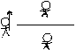
Герои -- не люди, они -- середина: ниже богов, но выше людей. Люди добираются до черты, боги -- над чертою, а герои на черте, посередине. Они не хотят идти назад, они хотят подняться выше, прыгнуть выше головы. Ради желания быть выше высшего.... Герои хотят воевать не с богами, а с роком! Боги для них -- очередная преграда, которую надо преодолеть. Герои добиваются, чего хотят, и, ступив на запретную зону, погибают. Героев славят за шаг, последний и роковой. Я думаю, судьбе боги -- дети, люди -- внуки. К детям она милостивее, но и внуков она не обделила. Судьба дала богам бессмертие, людям (героям) -- львиное сердце. Герой вечен, он стремиться остаться в памяти не только людей, но и богов.
Рисунок 6
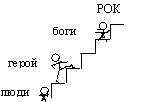
Боги ничуть не превосходят людей морально, и поэтому хотят сохранить свое преимущество хотя бы физически!!! Кто такие боги? Они не владеют судьбой, не владеют людьми, не владеют собой. Люди им непокорны, в гневе даже стараются погубить, обозлить богов. А сами они не владеют своими чувствами, раздорят из-за смертных... В их поведении и помыслах нет величия. Если человек поднялся до второй ступени и погиб, то сын его, так получается, родится тоже на второй ступени. Но герои -- только те, кто стоит перед богами, но не просто стоит, а пытается допрыгнуть до самих богов и погибает, ступив на запретную ступеньXVII.
15. Театр и стадион
22 песня, описывающая поединок Ахиллеса и Гектора, очень понравилась школьникам.
Алеша Попроцкий. Я так переживал, когда Гектор убегал от Ахилла! Говорил ему: «Ну, давай!» Надеялся, что он убежит...
Катя Александрова. Если бы не Афина, он бы спасся. Афина ведет себя очень подло, коварно.
Лена Храпуненко. Когда я читала эту песню, мне показалось, что Гомер стал ненавидеть Ахилла, когда Ахилл убил Гектора.
Оля Лейкехман. Я много раз перечитывала начало, Ахилл казался мне таким благородным, а теперь я вижу: он злобен. Он остался до конца окутан облаком гнева, злости.
Аня Бабиченко. Особенно жалко Андромаху и младенца.
Маша Донская. Когда герой в гневе, он может натворить, что угодно. Поэтому боги и боятся героев.
Соня. Я не согласна, что Гомер ненавидит Ахиллеса. Это настолько трудно, убив соперника, самому искать смерть!
Учитель. Пока вы говорите о своем отношении к героям. Если мы хотим понять позицию Гомера, ненавидит он Ахиллеса или нет, то нужно найти, как его позиция выражена в тексте.
Маша. Он говорит, что «Ахиллес недостойное дело замыслил»! Тут важно слово «недостойное»! Он осуждает Ахиллеса!
Соня. Я хочу ответить на вопрос, который когда-то задала Оля Лейкехман. Оля говорила, что не знает, как читать «Илиаду», не знает, как это получается, что Гомер так спокойно, мелодично все описывает, а герои так яростно, бушующе говорят. Я думаю, «Илиада» потому так написана, что Гомер описывает все как дополнительный [ как зритель – В.О.]. И в этой песне Гомер никого не ненавидит, он зритель.
Марина Бугай. Нет, зрители -- боги, они сидят и любуются, а Гомер так все описывает, чтобы нам стало жалко Гектора!
Саша Халанский. А я думаю, что Гомер за Ахиллеса, ведь Ахиллес -- главный герой! И Гомер мог же придумать, что Ахиллес победил!
Женя Шестеркин. Как это придумать?! Ведь все слушатели знают, как было на самом деле! Это все равно, что в книге о войне написать, что наши сразу победили немцев!
Саша Халанский. Он там сравнивает Гектора с драконом:
«Он ожидал Ахиллеса великого, несшегось прямо.
Словно как горный дракон у пещеры ждет человека,
Трав ядовитых нажравшись и черной наполняся злобой...»
(п. 22, 92 - 94)
Аня Бабиченко. Так ты читай дальше:
«Гектор таков, несмиримого мужества полный, стоял там,
Выпуклосветлым щитом упершись в основание башни;
Мрачно вздохнув, говорил он в душе возвышенной:
«Стыд мне, когда я, как робкий, в ворота и стены укроюсь!»
(п. 22, 96 - 99)
Алеша Попроцкий. У Гомера такие сравнения... Если Гомер сравнивает Гектора с драконом, это не значит, что он ругает Гектора. Помните, мы говорили о том, что он ахейцев сравнивает с волками, у которых окровавленные пасти?26
Учитель. Обратите внимание на то, как поразительно построен рассказ об этом поединке, на композицию этой песни. Она начинается и заканчивается плачами. Начинается с плача Приама и Гекубы, предчувствующих свою судьбу, и заканчивается плачем Андромахи, как бы уже знающей судьбу своего сына.
Оля Лейкехман. Да, это написано потрясающе. Гомер не сразу описывает горе Андромахи. Мы уже знаем, что Гектор погиб, а Андромаха еще не знает... Мы читаем, как она готовит Гектору теплую ванну, и сердце сжимается... Гомер так пишет, что мы прямо слышим, как она говорит, как начинает волноваться, дрожит. Фразы то короткие, то перепрыгивают на другую строчку и обрываются...
Маша Донская. Она как будто уже видит, что произошло за стеной: как Ахиллес бежит за Гектором и как потом его убивает.
Учитель. А до этого, в самый напряженный момент погони Ахиллеса за Гектором Гомер вдруг прерывает рассказ о поединке и долго описывает источники горячей и холодной воды, рассказывает, как когда-то прекрасные троянки мыли здесь одежды...
Лена Храпуненко. Это как в сказке -- живая и мертвая вода! Это сказочный мир!
Аня Бабиченко. Я думаю, Гомер делает это, чтобы усилить наши чувства, чтоб мы сравнили: была спокойная мирная жизнь, а теперь страшная война.
Рома Клочко. Он вообще все описывает, чтоб мы видели эту картину. Он пишет как историк, для памяти, поэтому он хочет, чтобы мы увидели все подробности.
Даша Апилат. И даже здесь видно, для греков почти самая важная вещь – красота. Гомер пишет, как красив был Ахиллес, когда бежал к Трое Все герои были очень красивы. Из-за красоты Елены началась война, но Елену никто не винил. Все стремились умереть молодыми и красивыми. А теперь из-за Ахиллеса Приам умрет некрасиво:
«Сам я последний паду, и меня на пороге домашнем
Алчные псы растерзают, когда смертоносною медью
Кто-либо в сердце уметит и душу из персей исторгнет;
Псы, что вскормил при моих я трапезах, привратные стражи,
Кровью упьются моей и, унылые сердцем, на праге
Лягут при теле моем искаженном! О, юноше славно,
Как ни лежит он, упавший в бою и растерзанный медью, -
Все у него, и у мертвого, что ни открыто, прекрасно!
Если ж седую браду и седую главу человека,
Ежели стыд у старца убитого псы оскверняют, -
Участи более горестной нет человекам несчастным!»
(XXII, 66 - 76)
Умереть красивым юношей -- очень красиво, а умереть старцем -- стыдно. Некрасиво, когда мертвый старик лежит на пороге.
Аня Бабиченко.
А Ахиллес специально привязывает труп
Гектора к колеснице и тащит его по грязи,
уродует...
Замечания
С. Ю. Курганова. Театр и стадион
О чем, как мне кажется, идет разговор, когда дети обсуждают поединок Гектора и Ахилла? Дети обсуждают возможность спокойной (мудрой, созерцательной) позиции невмешательства, т.е. возможность вненаходимости (если вненаходимость, невмешательство возможны, то тогда возможны: автор, читатель, зритель, свидетель, судия, хор, оценивание, суждение вкуса и т.д.) И это связано с предшествующим обсуждением битвы богов, возникшей из-за вмешательства бога в судьбу героя.
Вступая в битву, боги нарушают границу между героем и «Хором богов». В какой-то степени (хотя и в меньшей, чем Бог христианства) Зевс -- автор происходящего, «отец и бессмертных, и смертных». Но рожденные от богов и смертных герои, судьбы которых предсказаны богами, должны, как на театре, перед лицом зрителей (боги -- это главные зрители) разыгрывать свою жизнь, как на стадионе, соревноваться и т.д. Так поначалу и строится «Илиада». Но в ходе соревнования гнев и другие страсти героев так распаляются, что герои начинают «выходить из роли», покушаясь на свою судьбу, меру, долю, а тем самым разрушая божественный порядок устройства самого «стадиона» и «театра».
Видя это, боги выходят из позиции зрителя, созерцателя, свидетеля, судии -- и начинают непосредственно участвовать в соревновании, битве, т.е. становятся не только богами, но и героями. Их некому остановить, на них некому смотреть. Действие уже не имеет пластического образа, который строит зритель, не участвующий в битве. Это уже не античный космизированный мир эйдосов, рождаемых зрителем, читателем, созерцателем, автором - сказителем (Гомером). Это уже Хаос. Космос возможен тогда, когда кто-то безумен, яростен, динамичен, героичен... а кто-то, напротив, умен, спокоен, статичен, созерцателен. Космос возможен, когда есть зритель, сказитель, автор, слушатель, читатель, скульптор -- подражающий гневу, видящий гнев, создающий его вновь, вслушивающийся в гнев, но сам -- не гневающийся.
В битве богов уже некому оценивать. Когда герой ранит Афродиту, раненая богиня не может созерцать, судить и оценивать, а, следовательно, исчезает мерило любви и красоты. Битву богов никто не видит со стороны -- все в ней участвуют и ужасаются. Потеря вненаходимости приводит к разрушению трагедии как формы бытия античного мира. Все становятся героями, нет Хора, нет зрителей, нет созерцания, нет эйдоса, нет мысли. Некому мыслить -- все действуют.
Но эта же проблема возникает и при обсуждении детьми отношений «автор -- герой». Гомер, как бог, является «отцом и бессмертных и смертных». Он создает своих героев, но, когда герои уже созданы, Гомер занимает по отношению к ним позицию вненаходимости, позицию спокойного созерцателя. И это очень трудно! Я бы говорил о «героическом созерцании», о «героическом неучастии». Как богу трудно не вмешаться в действия героя, когда герой пытается изменить свою судьбу, так и Гомеру трудно спокойно и мелодично описывать, как герои яростно и бушующе говорят (вопрос Оли Лейкехман). Очень точно отвечает на этот вопрос Соня: Гомер никого не ненавидит, он зритель, он описывает все «как дополнительный» (словечко внутренней речи)XVIII.
Весь разговор детей о Гекторе и Ахиллесе пронизан этой проблемой. Вот Алеша Попроцкий начинает: «Я так переживал, когда Гектор убегал от Ахилла! Говорил ему «Ну давай!» Надеялся, что он убежит...» Как далек ритм этого читательского отклика от спокойной и мелодичной, мерной речи Гомера... От «...море Черное, витийствуя, шумит...»! Острые, отрывистые реплики, яростно-бушующие выкрики: «Ну, давай!»... Алеша на грани потери позиции читателя -- он уже почти вошел в круг героев, уже кричит, как они. Еще немного -- и он станет героем описываемого действия, вместо того, чтобы спокойно его созерцать. Вместе с тем, на стадионе зрители так себя и ведут. Они кричат, скандируют и даже, бывает, срываются с трибун и разрушают спектакль-соревнование... Гомер, как автор, ведет себя иначе. Он создает спокойный и мелодичный, мерами растущий, мерами ниспадающий ритм речи. И этот ритм повествователя удерживает Гомера от слияния с героями, позволяет держать дистанцию для видения, слышания, спокойного понимания, внимания.
Алеша готов закричать: «Ну давай!» Катя замечает, что «Афина ведет себя подло, коварно». Лена приписывает Гомеру ненависть к Ахиллу. Эти ученики срываются в позицию наивного зрителя, наивного читателя. Как на стадионе, они кричат: «Убегай! Давай-давай! Лупи его!» Они испытывают к героям те же чувства, как если бы герои были настоящими людьми. Дети теряют позицию божественного созерцания, которую предлагает Гомер читателю. Оля Лейкехман, Маша Донская и Соня читают Гомера «божественно». Оля: «Я много раз перечитывала начало...Он остался до конца окутан облаком гнева, злости (Оля сохраняет позицию читателя и пытается строить эйдос. Нет яростного соучастия болельщика на стадионе)
Можно предложить две схемы прочтения «Илиады». Первая схема. Вообразим окружность, в центре которой -- сражающиеся античные герои. Окружность -- это граница между героями и зрителями. Зрители располагаются за окружностью. Окружность -- это речь Гомера, удерживающая человека (зрителя, слушателя, читателя) в позиции «божественного созерцания». Это -- речь, позволяющая строить эйдос героя, размышлять, испытывать эстетические (эйдетические) переживания. Это речь свидетеля, судии, мыслителя, «равнодушной природы» (речь моря). Речи слушателей, читателей подобны речам Гомера, рассудительны и созерцательны. Зрители, читатели доводят образы Гомера до эйдоса героизма. Читатель занимает позицию божественного зрителя в театре.
Вторая схема. Та же окружность и те же герои в центре. Но читатель прорывается сквозь божественный гекзаметр и максимально приближается к героям. Он их видит непосредственно, как бы вне речи Гомера. Речи читателя отрывисты и грубы. Читатель занимает позицию болельщика на стадионе.
Обе позиции интересны. Боги Олимпа по отношению к битве героев могут тоже занимать две позиции: «божественно-созерцательную» или «спортивно-участную». С помощью предложенных схем можно объяснить, как разрушается Космос в результате войны богов. Вначале боги занимают позицию «божественного созерцания», не вмешиваясь в действия героев. Речи богов величественны и эпичны, подобно морскому прибою. Это состояние можно сравнить с состоянием зрителя в театре (первая схема). Поскольку зрители отчасти создают героя, то и сами герои ведут себя как на театре, как в трагедии: гневаясь, они не дерутся, но велеречиво обращаются друг к другу. Затем боги азартно втягиваются в созерцание. Созерцание теряет божественные черты. Это уже не «созерцание-размышление», а, скоре, поведение пристрастных болельщиков. (Вместо разума -- боль). Боги заболевают битвой героев. И это изменяет форму зрелища. Театр превращается в стадион. Трагедия -- в соревнование. Речи богов становятся речами соучастия. Отсюда недалеко до «мух» и «псиц». От речей соучастия боги-болельщики приходят к прямому участию в битве. Болельщикам становится по-настоящему больно (Вспомним боль Афродиты).
Можно посмотреть на это немного иначе. Есть как бы две возможности подражать действию героя. Две возможности удерживаться от участия в действии. Можно занять позицию театрального зрителя. Тогда герои выступят как актеры, обменивающиеся речами. Можно занять позицию зрителя на стадионе. Тогда герои выступят как бойцы, обменивающиеся ударами. Зрители их подбадривают, болея за них, пристрастно удерживая сторону одного из бойцов. И наоборот, герои, переходя от обмена крылатыми речами -- к обмену ударами мечом или копьем, -- подстрекают зрителя, выбивая его из позиции «божественного созерцания», заставляя зрителя испытывать боль -- болеть.
Обе формы -- театр и стадион -- важны в «Илиаде». Наивность позиции подростков-читателей, непосредственно относящихся к героям «Илиады», возможно, отчасти конструируется Гомером: изменение ситуации, переход героев от «крылатых речей» к кровавым действиям выбивает читателя из позиции созерцания, заставляет страдать и болеть. А затем вновь излечивающий ритм гомеровской строфы и особое содержание (задающее взгляд над битвой, вводящее событие поединка в большое мифологическое время) - и мы вновь можем созерцать, пережив сострадание и больXIX.
16. Жизнь как состязание. Момент акме
Новый виток диалога начался с неожиданного вопроса Саши Халанского.
-- Я не понимаю, если судьба предопределена и известно, что Троя падет на 10-й год, зачем герои все время воюют? Выходили бы раз в год на поединки!
Нам очень не хотелось тратить время на обсуждение этого вопроса. Нам казалось, что вопрос уже давно обсужден и ответ ясен. Но ученики сразу потянулись отвечать, мы были вынуждены дать им эту возможность, и в завязавшемся разговоре были высказаны новые, очень интересные, на наш взгляд, идеи. По-видимому, возвращение на новом витке к уже, казалось бы, решенным проблемам оказывается очень продуктивным.
Саша Золотько. Герои воюют не для того, чтобы победить в войне, они все и так знают, что Троя погибнет. Они воюют, чтобы прославиться, а прославиться можно, только если участвуешь в поединках.
Света Савочка. Герой, у которого есть слава, может отдыхать, но есть и другие герои, которые тоже хотят славы и сражаются с первым героем, и вот именно тогда слава первого героя может оборваться и уйти к другому герою.
Тимур Охрименко
(запись в тетради)
Любой герой не станет героем, пока не сделает какой-нибудь героический поступок. Сделав один поступок, настоящий герой не останавливается, потому что ему надо будет укрепить свой героизм, чтобы доказать, что он настоящий герой. Еще и еще он делает героические поступки. Но на каком-нибудь героическом поступке Герой умирает. Чаще всего это бывает тогда, когда идет борьба с каким-нибудь богом.
Аня Бабиченко. В «Илиаде» все герои, но Ахилл героичнее других героев: они все бегут к славе, но он приходит первый.
Учитель. Мне кажется очень точным этот образ поединка, войны, даже всей жизни как состязания. Вспомните, как описана погоня Ахиллеса за Гектором
«Там прористали они, и бегущий, и быстро гонящий.
Сильный бежал впереди, но преследовал много сильнейший,
Бурно несясь; не о жертве они, не о коже воловой
Спорились бегом: обычная мзда то ногам бегоборцев;
Нет, об жизни ристалися Гектора, конника Трои.
И, как на играх, умершему в почесть, победные кони
Окрест меты беговой с быстротою чудесною скачут, -
Славная ждет их награда, младая жена иль треножник, -
Так троекратно они пред великою Троей кружились,
Быстро носящиесь. Все божества на героев смотрели...»
(п. 22, 153 - 166)
Аня. Как на стадионе.
Учитель. Или как на арене. Известно, что греки состязались во всем, вспомните Олимпийские игры. Состязались воины, атлеты, ораторы перед народным собранием, авторы трагедий. Сохранилась легенда даже о состязании Гомера и Гесиода. В 23 песне описаны погребальные игры по Патроклу. Даже мертвых почитали, устраивая состязание, «игры, умершему в почесть». В этих играх участвовали все ахейские вожди, соревнуясь между собой в беге, кулачном бое, метании копья, стрельбе из лука и т. п. Они ведь все равны по рождению, и выяснить, кто из них «героичнее», могли, только состязаясь между собой. А вот ни у египтян, ни у вавилонян никаких состязаний не было.
Антон Бочкарев. Фараон же не будет состязаться с купцом. Он и так знает, что он сын бога, а других фараонов не было.
Учитель. Состязаться могут только равные. Муравей не состязается со слоном, купец с фараоном. Если Гомер, воспользуемся Аниным сравнением, видит мир похожим на стадион (заметим, кстати, на стадионе должны быть зрители-судьи), то люди Древнего Востока видят мир похожим на пирамиду, в которой у каждого -- изначально и навсегда -- свое место.
мир как стадион мир как пирамида
Рисунок 7
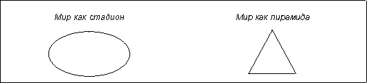
Саша Золотько. Это можно так нарисовать.
Рисунок 8
У греков есть лестница, ведущая к пику, по ней можно подняться на вершину, а у египтян на этой лестнице провалы, и выше провала не подняться.
Саша Халанский. Я не согласен, герои же никогда не могут стать богами. И я не согласен, что соревноваться могут только равные. Герои же не равны богам. Хоть герои и смелее богов, все-таки боги гораздо сильнее.
Даша Апилат. Но Диомед же победил Афродиту! Значит на миг они сравниваются с богами.
Рома Клочко. (показывает на Сашин рисунок) Это похоже на Сизифа. Он закатывал камень на гору, и камень сразу падал. Но одну секунду Сизиф был наверху. Так и герой. Он все равно проиграет богу, но в тот момент, когда они бьются, они равны.
Аня Бабиченко. Это главный момент в жизни героя, они живут ради этого момента.
Учитель. Греки называли этот момент моментом «акме» (вершины жизни). Это тот момент, когда человек совершает свой главный поступок -- и решает свою судьбу.
Марина Бугай. Это как экзамен, герой ты или нет. Но чем больше ты герой, тем скорее умрешь. Чем выше герой заберется, тем ниже упадет. Упадет с этой горы прямо в Аид.
Маша Колесник. Я хочу сравнить «Илиаду» с волшебной сказкой. В сказке, если герой выдержит испытание, он женится и у него будет все хорошо, он будет жить «долго и счастливо». А в «Илиаде», если он выдержит испытание, у него будет слава, но он быстро умрет.
Представляется, что в репликах подростков «схвачены» две идеи (две грани одной идеи?) гомеровского героизма: герой -- это тот, кто пытается превысить свою участь; герой -- тот, кто в момент акме выбирает героическую судьбу. Напомню, что, по мнению В. С. Библера, идея акме, как и идея эйдоса, -- важнейшие античные идеи; они пронизывают все грани античной мысли и определяют целостность этой культуры. Обе эти идеи оказались необходимы для нашего понимания «Илиады». Но если понятие «эйдос» было предложено учителем, то на представление о моменте акме подростки вышли сами в процессе понимания гомеровского эпосаXX.
К проблематике момента акме, лишь намеченной в наших диалогах о «Илиаде», мы с ребятами вернемся на новом витке наших размышлений об античности -- на уроках, посвященных греческой трагедии. В трагедии момент акме становится собственно предметом изображения. Именно он оказывается описанной Аристотелем в «Поэтике» точкой перелома, узнавания и патоса, действием, вызывающим сострадание и страх27. В момент акме в сознании трагического героя, который до этого жил как бы в полутьме, не сознавая себя, «автоматически», вспыхивает свет, -- и герой видит, осознает свое прошлое и будущее, видит свою жизнь как единое событие, целостное и законченное. И видит ее как «моими действиями сбывшееся бытие всегда бывшей судьбы»28.
Так, для Агамемнона, каким его изображает Эсхил в «Орестее», моментом акме становится день, когда он решает принести в жертву богам свою дочь. В этот день он ясно понимает истинный смысл своего и своих предков (отца, деда) прошлого и видит свое и своих потомков будущее, он осознает свою судьбу и ее место в судьбе рода Атридов. В «Царе Эдипе» моментом акме героя оказывается его расследование собственной жизни; теперь он видит всю ее в истинном свете, в этот день он понимает свою судьбу и судьбу Лабдакидов.
В этот момент происходит встреча героя с самим собой, он «замечает себя, приходит в себя и буквально сталкивается с собой в неразрешимой распре»29. Судьба героя и ее место в судьбе Космоса предопределены. Судьба не может быть справедливой или нет, она есть, и дело героя достойно принять и исполнить свою судьбу, вспомним слова Сони, достойно «сыграть свою роль в этом спектакле». И в то же время в акме героического поступка герой должен сам решить, определить свою судьбу и судьбу Космоса. Ведь именно от решения Агамемнона зависит, будет ли -- предопределенная судьбой(!) -- Троянская война, и от решения Эдипа -- сбудется ли «глас богов». Герой должен поступить -- и принять на себя ответственность за свой свободный, полностью осознанный поступок - и за Рок, за все последствия, за все, что будет с ним, с его потомками, Космосом.
Особенностью трагической ситуации является то, что герой должен выбирать не между добром и злом, правдой и неправдой. Любое решение Агамемнона и Эдипа оказывается «неправильным», как бы герой ни поступил, его действие будет преступлением, и проклятие за это преступление ляжет на него и его потомков. Герой оказывается в ситуации «амехании» -- необходимости действовать при невозможности действовать. «Трагическая амехания -- это ситуация, в которой космос и миф перестают нести или вести героя и сами предстоят судьбоносному и космосозидающему решению героя»30.
Вся жизнь героя оказывается и «сознается героем (и зрителем) сосредоточенной в этом единственном поступке»31. «В трагическом зрелище этот момент, этот странный момент уже не просто минует вместе с другими минутами жизни -- наоборот: все предшествующее осмысливается им и оказывается лишь подготовкой к нему, а все последующее -- «механическим» следствием решения и поступка, преодолевающих трагическую «амеханию»32.
Герой принимает решение. Агамемнон приносит в жертву Ифигению, Троянская война начинается, но начинается и трагическая история Клитемнестры -- Электры -- Ореста. Эдип завершает свое расследование и ослепляет себя, предопределенное сбывается, Фивы спасены, но раскручивается маховик трагедии Полиника -- Этеокла -- Антигоны.
На уроках, посвященных греческой трагедии, мы прочитали семиклассникам фрагменты из замечательной статьи А. Ахутина. Обсуждение мыслей исследователя, анализ акме трагического героя вернули нас с ребятами к размышлениям об акме героя эпического. Является ли ситуация, в которой оказался Ахиллес, ситуацией трагического выбора? Не являются ли действия Ахиллеса действиями по правилам эпического героизма? Конечно, мы снова не пришли к общему мнению, но важно другое: сама идея акме, возможность «акмейного» понимания жизни оказались очень интересны подросткам и очень значимы для них.
17. Почему «Илиада» заканчивается описанием похорон Гектора.
Напомним, в последней, 24 песне «Илиады» рассказывается о том, как старец Приам приходит к Ахиллесу и молит его отдать тело Гектора. Приам напоминает Ахиллесу о его собственном старике-отце, и они вместе плачут, Приам оплакивает Гектора, Ахиллес -- отца и Патрокла. Так уходит гнев Ахиллеса. Сцена совместного плача, примиряющего врагов, -- одна из самых известных и важных сцен «Илиады». Мы собирались закончить нашу работу с текстом эпоса обсуждением именно этой сцены. Но вопрос, из которого вырос в 1997 году последний диалог об «Илиаде», снова оказался для нас неожиданным. Кто-то из ребят спросил, почему «Илиада» так странно заканчивается: главный герой -- Ахиллес, а заканчивается книга описанием похорон Гектора.
Аня Бабиченко. Тут симметрия, как в греческом искусстве. В «Илиаде» два главных героя: Ахиллес и Гектор. В начале книги говорится об Ахиллесе, а в конце -- о Гекторе. «Илиада» выглядит так:
рисунок 9
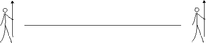
Света Савочка. Как бы стоит стража с двух сторон «Илиады».
Аня. Можно представить фронтон греческого храма с таким барельефом
рисунок 10
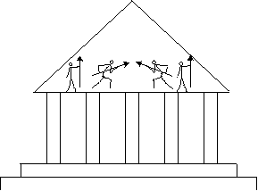
Женя Шестеркин. Мне кажется, похороны кого, это не самое главное. Главное, что в конце «Илиады» похороны, а не, например, свадьба, как в волшебной сказке. Это прощание с героическим миром. Мир героев умирает, и похороны нужны для его запоминания.
Даша Апилат. Ведь эта книга о гневе Ахиллеса, главный герой «Илиады» -- это Гнев. И вот в конце мы видим, к чему привел этот Гнев. И я хочу изменить первый рисунок Ани. «Илиада» построена не по прямой, а вот так:
Рисунок 11
Это движение Гнева в «Илиаде».
Алеша Попроцкий. «Илиада» похожа на судьбу героя. Гнев, как герой, поднимается на гору и падает вниз.
Сходная мысль была высказана семиклассниками 2002 года.В диалогах 2002 года сквозной идеей, сквозным образом, в котором сосредоточилось понимание подростками «Илиады», стал образ весов. Впервые этот образ оказался в центре обсуждения (и был нарисован на доске) при разборе 8 песни. Школьники спорили о том, как устроены золотые весы Зевса. Через несколько уроков, когда семиклассники обсуждали выбор Ахиллеса, Руслан Борисов сказал, что хочет нарисовать этот выбор, и нарисовал весы. На одной чаше этих весов лежит любовь к жизни, на другой -- жажда славы, и сначала эти чаши уравновешены. Страшная обида на Агамемнона нарушает равновесие. «Гиря гнева» перетягивает первую чашу, и Ахиллес оставляет битвуXXI. Все меняет гибель Патрокла. Теперь огромная «гиря гнева» перетягивает вторую чашу, Ахиллес несется в бой.
При обсуждении 24 песни Руслан вновь вернулся к образу весов. Он говорил, что вся «Илиада» начинается с нарушения равновесия весов. Гнев приводит к тому, что благородный Ахиллес превращается в дикого зверя. Герой безжалостно убивает юного безоружного троянского царевича Ликаона, который на коленях молил его о пощаде. Убивает, нарушая закон олимпийского космоса (нельзя убивать того, кто ел хлеб в твоем доме). В поединке с Гектором Ахиллес превращается в чудовище, подобное тем, с кем сражались герои мифов:
«Тщетно ты, пес, обнимаешь мне ноги и молишь родными!
Сам я коль слушал бы гнева, тебя растерзал бы на части,
Тело сырое твое пожирал бы я, - то ты мне сделал!»
(XXII, с. 345-347)
В песни 24 гнев уходит, восстанавливается исходное равновесие весов. Затухание Гнева, усмирение хаоса героических страстей, восстановление меры, гармонического космоса становится концом героического мира.
18. Сочинения как продолжение диалога. Кто такая Муза
Важнейший этап читательской деятельности – написание детьми сочинений и обсуждение этих сочинений в классе. Работа над сочинением помогает школьнику осмыслить прочитанное произведение как целое, побуждает ученика припомнить и еще раз продумать свои мысли и высказывания других ребят, звучавшие на уроках. Написание сочинения – это построение целостной интерпретации произведения; сочинения учеников часто дополняют друг друга, а иногда вступают между собой в острый спор. Работа над сочинениями – не «подведение итогов», но продолжение диалога о произведении, выведение его на новый уровень.
Мы не готовим заранее темы итоговых сочинений, они определяются каждый раз заново в процессе работы каждого нового класса над произведением. Темами сочинений становятся те проблемы, которые привлекают наибольшее внимание и интерес школьников. Приведем несколько сочинений семиклассников и небольшие фрагменты обсуждения этих работ в классе.
Оля Лейкехман Герой и Гнев в «Илиаде» Гомера
«Оглянись во гневе»
Я впервые взяла в руки «Илиаду» и сначала невольно отвернулась от нее, увидев 400 страниц абсолютно непонятного и странного текста, написанного непривычным стилем, с незнакомыми словами. Но я все же прочитала первые строки «Илиады»:
«Гнев, богиня, воспой Ахиллеса, Пелеева сына,
Грозный, который ахеянам тысячи бедствий соделал»,
и все мои страхи перед толщиной книги, боязнь непонятности и странности рассеялись, как легкий туман, уступая место жаркому, светлому, далекому и загадочному солнцу. Каждая строчка в «Илиаде», как луч солнца. Одни сомнения и вопросы она рассеивает, а другие задает.
Первый такой вопрос у меня вызвало слово «Гнев». Что такое Гнев? Об этом я себя спрашиваю и сейчас, когда дочитала «Илиаду». В тот момент Гнев мне показался страшным. Он исходил из ушей, ноздрей, рта Ахиллеса, самого еще окутанного для меня пеленой тайн. Но я сразу догадалась, что Ахиллес -- это герой, великий герой, и что Гнев неразлучен с ним, как и с другими героями, только в разной степени. Гнев -- это часть героя, греческого героя.
Тут у меня возник новый вопрос, наверное, самый важный после прочтения «Илиады».
Кто такой Герой для Гомера? Это что-то отличное от нашего, современного понятия. Для меня настоящий Герой -- всегда ровный и спокойный. Решения и поступки его тверды и правильны. Он защищает слабых и обиженных, он не кровожаден и очень красив. Для Сильвио из «Выстрела» А. С. Пушкина герой, или соперник, к которому он хотел бы приравняться, -- это человек, имеющий «молодость, ум, красоту, веселость, самую бешеную, храбрость, самую беспечную, громкое имя, деньги». Этого человека он называет «блистательным».
Кого бы Гомер назвал «блистательным»? Мне кажется, -- героя прекрасного, справедливого, храброго, с «кроткою душою», какая была у Гектора (по словам Елены), воина, полного решимости и гнева. Но Гнев этот не должен выходить, как бы ему не хотелось, за поставленные рамки. Когда Гомер описывает нам Ахиллеса так:
«Так произнес он -- и к граду с решимостью гордой понесся,
Бурный, как конь с колесницей, всегда победительный в беге,
Быстро несется к мете, расстилаясь по чистому полю»,
это действительно Герой. Это тот самый прекрасный, могучий и непобедимый Герой.
Но что сделал с Ахиллесом его Гнев, который Пелид не смог удержать в рамках. Это ужасно! Разве мог сказать настоящий Герой Ахиллес так:
«Тщетно ты, пес, обнимаешь мне ноги и молишь родными!
Сам я, коль слушал бы гнева, тебя растерзал бы на части,
Тело сырое твое пожирал бы я, то ты мне сделал!
Нет, человеческий сын от твоей головы не отгонит
Псов пожирающих! Если и в двадцать и десять крат мне
Пышных даров привезут, столько же еще обещают»?
Нет, это уже не Герой. Настоящий Герой не может сказать, а тем более сделать такое. Это «грабитель», «муж, который из мыслей изгнал справедливость, из сердца всякую жалость отверг и, как лев, о свирепстве лишь мыслит». Вот кто теперь Ахилл!
Так что же, после этого ужасного, хотя и минутного, Гнева Ахиллес перестает быть Героем для нас? Нет, Ахилл укротил свой гнев и опять стал Героем, но уже не тем Героем. В моих глазах все его подвиги и вся слава окутались черным Гневом, который почти полностью закрыл их. Может быть, Гнев -- это ненужное чувство? Может, это просто порок? Скорее всего, нет. Может быть, это именно то чувство, из-за которого многие Герои решаются на великие подвиги, которое движет ими, подталкивая сзади рукой, иногда черной и измазанной кровью, а иногда белой и чистой. И прежде чем сделать что-то, посмотри на эту руку. Подумай.
Из обсуждения
С. Курганов. Здесь гнев и герой как бы борются, гнев толкает героя. Нельзя сказать, что Ахиллес -- это эйдос гнева, что герой -- это эйдос гнева. Нет, когда гнев переполняет героя, нарушается мера, герой перестает быть прекрасным, равным себе, уравновешенным, «блистательным».
Учитель. Но разве не гнев делает гомеровского героя героем?
Маша Донская. Герою нужен не черный гнев, а серенький дымок возбуждения.
Учитель. Разве Ахиллес, когда видит доспехи, наполняется сереньким дымком? Только ураганный гнев делает героя героем!
Маша. Ураганный гнев делает героя не героем, а львом.
Никита Цыганок
Почему героический мир должен был погибнуть?
Чтобы понять, почему погиб героический мир, нужно понять, какой это был мир и какие законы в нем действовали. Мир, где есть место только силе и красоте; мир, полный опасностей...
Но, одновременно, мир, в котором все было определено: герои могут противостоять богам, но в конечном итоге всегда побеждают боги. И над теми, и над другими властвует судьба. И боги, и герои -- красивые, сильные, умные, изворотливые, но герои изначально смертны: за короткую жизнь им нужно успеть все: испытать все чувства, все узнать, везде побывать, оставить о себе память... Боги же были, есть и будут, у них есть минутные порывы, но они не могут себе позволить делать все, что угодно. Бога можно обхитрить, оскорбить, превзойти, но не победить окончательно. Это напоминает отношения жизни и смерти: жизнь борется до последнего, всячески предотвращает смерть, но та в конце концов наступает.
Герои в апогее своей славы выходят за все рамки красоты, человеческих возможностей, наконец, просто героя в обычном понимании этого слова. Более того, они пошли против богов и самой судьбы. Еще чуть-чуть, и мир бы не выдержал и «лопнул по швам»... Героический мир должен был умереть ради сохранения всего остального мира.
Из обсуждения
Оля Лейкехман. Это как два шарика, один внутри другого. Первый настолько расширяется, что может взорвать второй.
Соня Вальшонок. Это можно нарисовать так:
рисунок 12
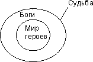
Боги сами создали героев, а теперь боятся и страшатся их. Тут большая разница между Библией и «Илиадой». Бог четко создал людей, и он всегда был и будет главным. А в «Илиаде» нет этой четкости.
Марина Бугай. Этот внутренний шарик наполнен кипящим гневом. Он может взорваться и взорвет тогда и весь большой мир, космос.
Женя Манко. Боги сделали дырочку в шарике, и он лопнул. Вот этой дырочкой была троянская война.
Марина. Он лопнул и превратился в лоскуток, в точку.
Соня. Эта точка -- «Илиада»...
Соня Вальшонок
Юмористическое сочинение на тему
«Почему весь героический мир погиб»
Можно заниматься этой темой, составляя «древо рождений» героев, и можно точно знать, что при появлении на свет героя (а они рождаются уже ими) скоро будет что-то великое, страшное и героическое. Все в мире хорошо сделано. Этот бородатый мужчина (Зевс) хорошо поработал и дружил с космосом (был его создателем). В этом космосе есть Парадокс: Герои нужны для того, чтобы совершить что-то -- за это они и герои, но героями не становятся, а рождаются.
Если героями рождаются, то они и по-особому умирают. Герои -- определенный народ, имеющий свою норму и обрастающий собой. Пример: Ахиллес обрастает гневом, Одиссей -- стремлением. Я не хочу очень долго мыслить и мучаться, хотя это предстоит. Я просто сравню.
рисунок 13
Герои стали вырастать, как цветы, огромные и прекрасные, потому что почва очень плодородна и космосна, и их стало целое поле, один другого лучше, и это неизбежная ситуация. И произошел не взрыв, как это происходит в обычном населении (источник этому история). А тут было так: все стали сосать питательные вещества и воду. И вот они стали лопаться, как петарды, и засыхали, и этот шелест и треск и есть вся Античная Литература. Из обсуждения.
Марина Юдина. Я вообще не согласна, что героический мир погиб! Он живет в разных древнегреческих книгах и всегда будет там жить! Конечно, он больше нигде не остался, но книга -- это такой козырь, который побьет все козыря.
Марина Бугай Мир Гомера
«Илиада» -- это не просто книга, это книга особенная. Она особенная в том, что в ней заключается огромный Греческий мир. Жизнь в этом мире совсем иная, не такая, как в современном мире. Это мир -- воин. Мир самых меньших людских потребностей в плане современного комфорта. Но в то же время комфорт -- это понятие настолько приземленное! У греков были понятия великой славы, чести, красоты.
Я считаю, что Гомер отдал свою жизнь своим книгам. А чтобы отдать чему-то или кому-то всю свою жизнь, всего себя, нужно очень хорошо обдумать. И я даже согласна с греками, что музы помогают писать, потому что человек не способен со своими приземленными привычками или потребностями написать такое чудо. Я не побоюсь это слово -- чудо. Но я имею в виду, что люди есть очень глубокие, очень-преочень, но все равно человек остается лишь человеком.
Сочинения школьников оказываются репликами, выводящими учебное сообщество на новый уровень диалога с Автором книги, историко-культурным собеседником. Пока идет работа над книгой, ученики выдерживают роль «понимателей» чужой речи. Они ведут спор, но это, как правило, спор не с автором книги, а диалог читателей, направленный на понимание книги. Когда книга прочитана и осознана как целостное высказывание Другого, у многих из ребят появляется желание и возможность вступить в спор/согласие с автором или свести автора в диалоге с другим историко-культурным собеседником.
Оля в диалоге с Гомером и Пушкиным размышляет о том, что такое истинный Герой. В конце следующей главки помещены «Размышления об «Энеиде» Кати Пашиновой. Катя отвергает эстетику Гомера, заявляя, что «когда идет война, то писать надо не о красоте (вообще, как война может быть красивой?), а о чувствах, о внутренних страданиях людей, героев, которые в ней участвуют». Работы Оли и Кати могут быть прочитаны как их ответ Гомеру, их реплики, обращенные к древнегреческому поэту. А значит, в этих сочинениях -- пока как возможность, в свернутом виде -- уже содержится диалог девочек с античным собеседником. Или, лучше сказать, их сочинения чреваты возможностью такого диалога. Задача учителя в том, чтобы разглядеть эту возможность, помочь диалогу родиться, развернуться. Чтобы превратить монологические высказывания школьников в диалог, нужно дать слово автору, по схеме «Что бы ответил Гомер Оле (и Пушкину)?», «Что бы ответил Гомер Кате?».
Такая работа была проделана нами в 2004 году. В диалогах 2004 года одна из семиклассниц, Аня Танец, часто говорила о жестокости Гомера, пытаясь понять ее природу и истоки. Об этом же она написала свое итоговое сочинение. Аня Танец Гомеровский мир
Гомеровский мир очень жесток. Герои ради славы готовы на все: умереть, убить ни в чем не повинных людей, разрушить прекрасный город, где раньше так спокойно и счастливо жили люди. Герои разрушают семьи, мужчин убивают, а женщин, под их жалостный стон и плач, уводят в рабство. Герои безжалостно убивают своих соперников. Например, Гектор убивал Патрокла как-то равнодушно, бесчувственно и с презрением, словно давит таракана, а не человека, у которого есть какие-то чувства. А когда Ахилл убивал Гектора, он не был равнодушен, он, наоборот, блистает ненавистью, лютой яростью и великим чувством мести, которая жжет ему сердце. Ахилл так рад, что может поиздеваться над телом Гектора! Он испытывает истинную радость садиста, когда тело Гектора привязано к колеснице и его голова волочится по земле. Ахилл на верхушке блаженства, а Андромаха чуть не обезумела от горя.
Гомеровский мир очень жесток: герои не жалеют ни детей, ни стариков. Например, когда Менелай уже хотел пожалеть троянского старца, Агамемнон сказал: «Не развивай в себе презренной жалости. Пока все, от младенцев до стариков, трояне не будут уничтожены, я не успокоюсь». Комментируя эту реплику Агамемнона, Гомер говорит: «И понял Менелай, что брат его милый правду ему говорит». Т.е. Гомер считает правильным и достойным уважения, когда убивают маленьких детей и дряхлых стариков.
Боги древних греков тоже не отличались состраданием. И поэтому героев можно простить, им не на кого равняться. В гомеровском мире счастлив тот, кто красив, молод, силен и купается в лучах славы. А другие люди богам не интересны. Мне кажется, это очень жестоко и эгоистично – ради того, чтоб тебя помнили, убивать людей.
Интересно отметить близость мыслей Ани к мыслям, высказанным Симоной Вейль в ее замечательном эссе «Илиада», или Поэма о Силе»33 XXII. Мы предложили детям подумать, что бы ответил Гомер Ане, сочинить письмо Гомера Ане. Вот несколько характерных ответов:
«… Но ведь я же восхищаюсь не противной стороной жестокости, а прекрасной. Ведь в битве есть не только кровь, бессердечность и ненависть. Я считаю, что битва настоящих героев – это прекрасно! Разве вам так не кажется, когда вы видите (представляете себе) красивых и могущественных героев, на которых надеты прекрасные, сияющие, божественные доспехи и которые не щадя жизни идут в бой ради славы… Я восхищаюсь этим зрелищем и пытаюсь описать вам это так, чтобы вы восхитились этим тоже…» (Вика Туник). «Вы упрекаете меня в жестокости, но скажите, разве жестокая битва всегда вызывает только отвращение? Разве она не приковывает взгляд, разве не привораживает, разве не захватывает? Разве нет ничего прекрасного в великой, хоть и жестокой битве?"» (Аня Танец). Как видим, «ответы Гомера» не завершают диалог, но дают мощный импульс к его продолжению.
Многие ребята подчеркнули иной аспект проблемы, затронутой Аней. «Это все мне рассказывают Музы, они не выдумывают, а рассказывают правду» (Тая Волошина). «Я ничего не придумываю, я не выдумщик и не сказочник, и я не передаю свои эмоции. Я передаю те эмоции, которые передают мне Музы» (Ярик Гончаров»). Так не новом витке обсуждения книги мы вернулись к сквозной теме наших диалогов – теме Музы. На протяжении занятий школьники утверждались в мысли, что и торжественный язык эпоса и сам эпический взгляд на мир не личное творчество Гомера, они заданы ему. Но кем заданы, ведь люди XXI века не верят в античных богов? Именно в этот момент, когда проблема была осознана и поставлена семиклассниками, учитель смог ввести в диалог нового собеседника, английского ученого А. Б. Лорда, рассказавшего о мощной эпической традиции, которой следует аэд, и тем самым об отличии аэда от поэта ХХ века, ищущего собственный язык для выражения собственного взгляда на мир34.
В завершение нашего рассказа о чтении «Илиады» приведем еще два описания эйдоса героя.
Ксюша Утевская
Вот он, герой предо мною стоит всемогущий во гневе,
Тело исполнено кровью горячей, к безумству ведущей,
Пламень в очах, ибо разума хюбрис сильнее безмерно,
Року противится мощный герой, преисполненный гневом.
Смертных людей он превыше, конца своего не боится,
Внять он советам разумным не хочет, безумия полный.
Славу герой добывает, потомки же вспомнят деянья.
Сережа Переверзев
1Чтобы воспеть тех героев, преславных и силой, и мощью
О, великий Гомер, вспоминаешь ты Эйдос Героя.
Муза тебе говорит, как воспеть его в песни великой,
Славного силой героя, как эйдос его воплотить там.
5 Муза великая, ты снизойди и скажи мне о том, как
Мужа Тидида воспеть, воплотив в описанье том эйдос.
Вот он, Тидид Диомед, в колеснице златой и с конями
Лучшей афинской породы, напасть на богов он дерзает.
Кони его колесницы заржали, и серой запахло:
10 Огненобыстрый перун повелителя, бога Зевеса
Оземь ударился. Кони героя взвилися высоко.
Но Диомед не отрекся от дела, он Зевсу перечит...
Вот он герой, воплощенный эйдос героя. Он знает
Наверняка, что погибнет, но слава дороже герою.
19. «Илиада» и «Энеида»
По-настоящему прочитанная книга остается в актуальной памяти школьников. Читая новые произведения, они вспоминают прочитанные прежде, и в их мышлении завязывается диалог произведений разных исторических культур. В 8 («римском») классе «Энеида» Вергилия побудила наших учеников вернуться к размышлениям об «Илиаде»; эпос Вергилия был прочитан ими как ответ на гомеровский эпос, ответная реплика в диалоге эллина и римлянина. В частности, подростки обнаружили противостояние греческой и римской идей героизма.
Напомним сюжетную ситуацию вергилиевского эпоса. Судьба и боги предназначили троянцу Энею стать основателем Римской державы. Во 2 книге «Энеиды» рассказывается о том, как Эней, повинуясь велению богов, оставляет горящую Трою, в 4 книге Эней покидает влюбленную в него карфагенскую царицу Дидону. Приводим запись диалога по 4 книге эпоса. Нам представляются интересными не только идеи, высказанные учениками, но и сам «сюжет» диалога, его перипетии, сквозные мотивы.
Оля Лейкехман. Эней не похож на героев Гомера, он абсолютно покорен судьбе и богам. Боги велят ему уплыть от Дидоны, и он сразу уплывает.
Саша Золотько. У Гомера Эней бы остался.
Учитель. И Рим не был бы основан.
Оля Конева. А Дидона не понимает Энея, не может понять, что Эней покорен судьбе. Она его обвиняет...
Маша Донская. Дидона все понимает! Тут, как в трагедии, столкновение двух «правд»: «правды» Энея и «правды» Дидоны... Меня поразило выражение «слабую душу» Энея. Ведь у него такая сила духа, почему Вергилий пишет «слабая душа»? И еще интересная строка: «Ибо судьбе вопреки погибала до срока Дидона...» Вопреки судьбе!
Никита Цыганок. Дидона -- первый человек, нарушивший судьбу. Простая женщина пошла против судьбы. Никому до этого это не удавалось. Вот отличие римлян от греков: римляне думают, что судьбу можно нарушить.
Маша. У Гомера боги боятся, что герои как бы выпрыгнут из своей судьбы. А Дидона выпрыгивает из судьбы!
Учитель. Героизм Диомеда или Патрокла в том, что они, пылающие гневом, чуть не «выпрыгивают» из своей судьбы, чуть не поступают «вопреки судьбе», превышают свою участь. Героизм Ахиллеса в том, что он выбрал героическую судьбу: славу и скорую смерть... В «Энеиде» Дидона поступает «вопреки судьбе»... Но в чем же героизм Энея? И в чем «правда» Энея? Он не остался защищать до конца родной город, чтобы -- «вопреки судьбе» -- отстоять его или умереть со славой. Он оставил любимую женщину...
Никита. Он тоже выбрал героическую судьбу. Он основал Рим -- вот самый большой его подвиг.
Женя Манко. Это все-таки римлянин, а не Ахиллес! Он сражается не за славу, а за общее дело, Res publicus.
Маша. Эней покоряется судьбе -- это и есть его подвиг! Он хочет умереть за Трою, но идет против своих желаний!
Оля Лейкехман. У Гомера герои идут против богов, а Эней -- против своей любви.
Оля Конева. Эней хочет поступить по-другому, но не может. К нему все время являются боги, приказывают ему, говорят, что он должен делать... А к Дидоне боги не являлись, ее никто не трогал... Эней -- игрушка богов, а Дидона страдает. Эней ничего не выбирал, а Дидона сама выбрала свою судьбу.
Марина Юдина. Когда она покончила с собой, это был ее момент акме.
Оля Лейкехман. Я хочу поддержать Марину, это момент акме Дидоны. Дидона сама выбирает свою судьбу и ясно видит будущее, предсказывает войну Рима и Карфагена. И это пик ее страданий, момент акме -- всегда пик страданий, как у Гектора, Эдипа, Антигоны.
Оля Конева. Дидона - это эйдос любви и страдания. У Гомера ничего такого не было.
Оля Лейкехман. Гомеру важна красота мира, а Вергилию -- чувства героев. Поэтому у Гомера действие развивается гораздо медленнее: он все время делает отступления, чтобы описать доспехи, щит, разные детали боя. Он любуется ими. А Вергилий никогда не отвлекается, он описывает только чувства героев.
Соня Вальшнок. Чувства и действия.
Аня Бабиченко. Гомеру важно вызвать восхищение, а Вергилию -- сострадание.
Маша Донская. «Энеида» написана в эпоху Августа, в эпоху urbanitas, тонкости чувств.
Учитель. Но в чем же все-таки героизм Энея? У Маши была очень интересная, как мне кажется, мысль о том, что подвиг Энея в том, что он покоряется судьбе. Как это может быть?
Юля Шемет. Маша говорила, подвиг Энея в том, что он пошел против своих желаний! В «Энеиде» показан дух римлянина, каким он должен быть.
Учитель. Эней -- образец для подражания? Могу ли я представить, что римлянин говорит своему сыну: поступай так, как Эней, пусть из-за тебя гибнут любимые женщины? Я думаю, Эней тоже оказывается в ситуации трагического выбора, подобно Эдипу или Антигоне. Любое его действие будет ошибкой и приведет к непоправимому: или погибнет Дидона, или не будет основан Рим. Может быть, у римлян потому и не было великих трагедий, что сам их эпос содержит трагедию...
Оля Лейкехман. Я согласна с Юлей, что это книга поучительная. Эней идет против своей воли. Не так важна своя жизнь и жизнь Дидоны, как воля богов. Такое было у римлян понимание мира.
Женя Манко. Дидона была ловушкой для Энея. Судьба расставила у него на дороге препятствия-магниты. Он должен был преодолеть эти испытания, пройти инициацию и, как когда-то говорила Соня, «обрасти собой».
рисунок 14
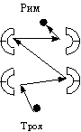
Юля. Римский герой идет против себя, он топчет свои чувства. А грек говорит: я хочу пойти туда, и я пойду несмотря ни на что.
Учитель. Да, это интересная мысль. Ахиллес никогда не сдерживал свои чувства, он полностью отдавался своим желаниям, своей воле. Он свое-волен.
Катя Пашинова. Трудней пойти против себя самого, против своих чувств, чем против судьбы.
Женя. Римские герои -- это люди, избранные богами. У них есть миссия, им приходится преодолевать обычную судьбу, отказываться от человеческого счастья. Эней должен соответствовать предназначенной ему судьбе, допрыгнуть до судьбы. Ахиллес и Эней -- это два эйдоса героизма, греческий и римский.
Никита. У греков судьба -- это заведенный кем-то когда-то механизм, он движется сам по себе. Судьба обязательно исполнится, поэтому пойти против нее -- это героизм. А у римлян судьба -- это только замысел, судьбе нужно помогать, чтобы она исполнилась.
Маша. Я хочу предложить рисунок римского героизма:
(рисует на доске)
Рисунок 15
Путь обычного человека -- обычен, приятен. Просто покоряешься судьбе и идешь по ней, как Иокаста. А герой -- человек избранный, не каждый может стать героем. У каждого героя своя миссия. Цель героя выше, и путь к ней труднее, чем у обычного человека. И герой должен идти по трудному пути. Важно, что, когда он возвращается на обычный счастливый путь, боги ему говорят: «Быстро возвращайся на свой трудный!» Но не подталкивают, как в «Илиаде», а говорят. И он должен своей силой воли отказаться от счастья и вернуться на свой путь героя, к своей цели.
Оля Лейкехман. Дидоне идеально подошел бы Диомед. Она тоже «выпрыгивает» из судьбы. И поэтому она не понимает Энея. Она делает то, что подсказывает сердце, а не боги.
Елена Григорьевна Донская. Я сейчас думаю, сколь различны Антигона и Дидона. Для Антигоны важен закон, закон божественный, неотменяемый. Она бы и рада послушаться веления Креонта, но Креонт противоречит велению богов. И тогда Антигона подчиняется тому закону, который для нее важнее, выбирает ту правду, которая для нее «правдивее». А Дидона живет не по законам властителей или богов -- она живет по законам своего сердца.
Школьники вспоминают и стягивают в один узел многие из тех проблем, понятий, собственных идей, которые были открыты ими в работе над «Илиадой» -- и сталкивают их с новым -- римским -- «материалом». Восьмиклассники обнаруживают в произведениях античной культуры разные, спорящие между собой идеи героизма и образы судьбы, открывают противостояние и диалог двух начал античной культуры: Греции и Рима. И вместе с тем в 4 книге «Энеиды» подростки обнаруживают конфликт, образующий «трагедию» римской культуры: противостояние двух равномощных «правд», «правды» частной жизни, личного счастья, ценности настоящего времени (см. лирику Катулла, «неотериков», Овидия) и «правды» гражданского долга, подчинения своей жизни Общему делу и божественному замыслу, жизни ради будущего (см. произведения Цицерона и римских историков).
Удерживают ли ученики свои открытия или, доставив удовольствие себе и учителю, тут же забывают их? Запоминают ли они идеи других ребят, высказанные на уроке, или помнят только свои мысли? Ответ на эти вопросы дают их итоговые сочинения. Приведем (фрагментами) работы девочек, которые активно высказывались на уроке, и сочинение Кати Пашиновой, которая почти весь урок молча слушала.
Маша Донская
Два взгляда на героизм и героев
Что такое героизм и кто такие герои? Чтобы высказать свою точку зрения на этот счет, Вергилию и Гомеру понадобились целые огромные книги. Причем взгляд на героизм у авторов, как мне кажется, совсем разный.
Для греков героизм во многом в буйстве героев. В том, что они чуть не выпрыгивают из судьбы. Я приведу такой рисунок:
Рисунок 16
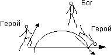
Герои чуть не переступают границы судьбы, но боги их толкают вниз. Для героя такой путь приятен, он несется в бурном потоке своих чувств (для Ахиллеса, например, это чувство – гнев) и не включает свой разум. И он себя не останавливает, ведь даже вниз его боги подталкивают, а не он сам по воле разума идет вниз. Потому все это я называю «приятный путь выпрыгивания». А для того, чтобы так «повыпрыгивать», хоть это и «приятный путь выпрыгивания», надо иметь колоссальную силу, чтоб чуть не перевернуть судьбу наизнанку.
А у римлян взгляд противоположный. Как это ни парадоксально, для них героизм заключается в покорности судьбе. Тут я приведу несколько другой рисунок:
Рисунок 17
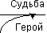
Героем может стать не каждый, а лишь избранный судьбой человек. У него есть в жизни некая миссия (например, у Энея миссия - основать Рим), цель более высокая, чем то, чего может достигнуть в жизни обычный человек. И герой ради этого отказывается от относительно счастливого пути не героя. Ему приходится покоряться своей, героической судьбе, ломать свое счастье ради Цели. (Вспомните, как Эней уходит из Трои, отрывается от Дидоны, входит в преисподнюю – все ради Рима!) Для этого очень подходит рисунок Жени Манко. Препятствия жизни обычного человека на его пути как магниты, и он, что очень важно, преодолевает их с огромным трудом, и САМ, его не подталкивают боги, а лишь говорят ему.
И Эней все меньше делается троянцем по пути от Трои к Риму, а все больше римлянином. И в шестой песне он становится им полностью. Вот почему любовь Энея и Дидоны была обречена, потому что Дидона с ее счастьем – один из магнитов, она стоит на пути обычного человека, где остаться Энею нельзя, потому что его цель намного выше. А Дидона его не понимает, у нее нет этого римского, «Что значит покорность судьбе?» Кстати, она тоже, как герой, выпрыгивает из судьбы (...)
Оля Лейкехман
Вергилий и Гомер
Вергилия принято называть учеником Гомера, но почему? Конечно, Вергилий читал произведения Гомера, он многое почерпнул из сочинений грека, но личные размышления и взгляд на мир были основаны на споре с Гомером. Герои Вергилия и Гомера совсем не похожи друг на друга. Грек готов бороться за себя, за свою славу, он выпрыгивает из своей судьбы, выхлестывает весь свой гнев (неотъемлемая часть греческого героя) наружу. Гомеровский герой -- разъяренный лев. Совсем не похож на него римский герой. Не так важна в нем физическая сила, как сила духа. У римского героя есть судьба, и он должен следовать за ней, или, скорее, стараться максимально приблизиться к ней. Римлянин должен владеть своими чувствами, уметь преодолевать свои желания. Даже женщина, которую герой очень любит, не повод для того, чтобы не покориться судьбе.
Зачем Эней должен был встретить Дидону? (...) Дидона совсем не похожа на римлянку, у нее характер настоящего греческого героя. Она не хочет жить, значит, она умрет, и ее не волнует, что думали по этому поводу боги (...)
Совсем не похожи описания событий Гомером и Вергилием. Первому важна внешняя сторона событий, красота героев, поединков, оружия. Гомер долго и очень подробно описывает все это, не особенно обращая внимание на оттенки чувств героев. Грек приписывает своим героям постоянные эпитеты, которые лишь немного помогают узнать нам этого человека. Гомеру не так важно понять человека, главное -- понять, что такое вообще Герой. Гомер смотрит на все происходящее сверху, как бог, и под шум моря описывает все, то же, на что хочет обратить наше внимание, повторяет по несколько раз. Вергилий пытается как можно больше раскрыть душу героев. Он вообще не считает важной внешнюю сторону событий. Гораздо лучше показать, что чувствует человек, как он борется с собой, как преодолевает препятствия своим умом. Вергилию важно понять героя, узнать изнутри. Римлянин смотрит на все и рассказывает нам с точки зрения троянцев, как обычный человек (...)
Вергилий все время говорит нам, что он не согласен с Гомером, что римлянин и грек не могут быть вместе (Дидона и Эней). Если даже назвать Вергилия учеником Гомера, то только таким, который посмотрел, как делал учитель, и сделал так, как считал нужным.
Оля Конева
Размышления о поэтике «Илиады» и поэтике «Энеиды»
(...)[В «Илиаде»] Читатель не сразу осознает какие-то трагические факты, так как их трагизм «охлаждается» размеренным метром. Этот ритм скорее направлен на успокоение читателя. Ритм моря.
Текст «Энеиды» переполнен эмоциями. Ее способ написания совпадает со способом написания одного из стихотворений Катулла:
«Кажется мне тот богоравным или --
Коль сказать не грех -- божества счастливей,
Кто сидит с тобой, постоянно может
Видеть и слышать
Сладостный твой смех...»
Одна строчка вливается в другую. Как и эмоции, строчки льются непрерывным потоком (...)
Катя Пашинова
Размышления об «Энеиде» Вергилия
(...) Я думаю, что когда идет война, то писать надо не о красоте (вообще, как война может быть красивой?), а о чувствах, о внутренних страданиях людей, героев, которые в ней участвуют. И Вергилий не боялся сделать своих героев более мягкими, описывая их душевную боль.
Книга четвертая мне понравилась больше всего. И Вергилий вставил ее в «Энеиду» не просто так. Этой книгой он хотел показать, насколько трудно был основан Рим, что римляне - это люди, произошедшие не от кого-то там, а от героя троянской войны, и не просто от героя, а от героя, который пожертвовал всем, сделал все, чтобы основать Рим. А еще он хотел показать, что римляне могут любить и готовы много отдать ради любви, но Рим -- дороже (...)
Я думаю, что Вергилий не зря писал «Энеиду» одиннадцать лет (интересно, ведь одиннадцать -- мое любимое число), даже если он ее не дописал, она получилась замечательная!
Открытия детей, на наш взгляд, очень точны и интересны. Обратим внимание на замечательный словообраз Маши (гомеровский герой пытается выпрыгнуть из своей судьбы) и рожденный в ответ словообраз Жени (герой Вергилия стремится допрыгнуть до своей судьбы); заметим предложенное Никитой различение двух концептов судьбы: судьбы как когда-то запущенного механизма и судьбы как замысла, осуществление которого нуждается в помощи героя. Очень интересна мысль Маши о том, что на пути от Трои к Риму Эней "все меньше делается троянцем, а все больше римлянином" и другие мысли ребят.
Важно, что школьники обнаруживают разность греческого (точнее, гомеровского) и римского взглядов на мир, способов понимания человека, выраженную в поэтике эпосов. Ученики говорят о гомеровском «божественном», «охлажденном» взгляде «сверху», издалека, со скамьи театра -- и соучастном взгляде Вергилия, сопереживающего, разделяющего боль своих героев. Сравним это с разностью греческой и римской пластики, разностью «эйдетизирующей» скульптуры греческой классики и римских бюстов, передающих реальные индивидуальные черты конкретного человека.
И вместе с тем заметим, как за прошедший год повзрослели школьники, как волнует их теперь мир чувств. Год назад их не тронула сцена совместного плача Ахиллеса и Приама, сейчас они остро сопереживают и Дидоне, и Энею.
Приведем еще несколько высказываний подростков об «Энеиде» – из уроков восьмиклассников 2003 года. Вероника Журбенко
В «Энеиде» -- трагическая амехания. Правда Энея: повиноваться богам и судьбе, уезжать, бросая свою любовь, и двигаться к какому-то неизвестному будущему против правды Дидоны: как можно бросить ее на произвол судьбы, ведь погибнет все ее царство, ее брат захочет его разрушить, а идти к отвергнутым ранее женихам – унижение. Эней и боги смотрят в будущее, а Дидона живет настоящим. Дидона задумалась о судьбе своего царства, лишь когда узнала, что Эней уезжает, до этого она думала о себе, о том, чтобы ей было с Энеем хорошо. Она не думала, что он может уехать, она не пыталась заглянуть в будущее, она жила сегодняшним днем. И даже когда она пошла на смерть, она не думала, что ее царство и народ заберет кто-нибудь из врагов и, возможно, всем этим людям будет хуже, чем ей. Ксюша Утевская Мысли о 4 книге «Энеиды»
Любовь Дидоны быстро перерастает в ненависть. Как странно это чувство живет в людях античных преданий. Ведь по сути в их сознании действительно появляется неведомое чувство, которое они приписывают воле богов, не в силах объяснить его иначе. Вергилий называет Дидону безумной, и это так, ведь она не в состоянии той любви, которую знаем мы, ее чувства не сопоставимы с нашими. У Дидоны любовь, как гнев, тоже безумна. Это нам только кажется, что она похожа в этом состоянии на нас, а на самом деле, если всмотреться глубже, мир эмоций эпических героев другой. Любовь Дидоны не «нежное чувство», но исступленное, вакхическое безумие. Это только сегодня любовь, а чуть что изменится, это сразу же ненависть, гнев. Дидона как будто не порождает это чувство, но оно на нее находит, как волна, и уносит.
И Эней так же. Он хоть и герой, мужчина, но в нем чувства тоже смешаны. Есть любовь, страх перед богами, чувство долга. В стихе 396 Вергилий говорит даже, что Энея колебала любовь, колебала его, оказывается, слабую душу. Вергилий показывает любовь как чувство истощающее. Дидона в силе своей и славе отдалась любви и обезумела, сгорела, растаяла, как свеча от огня. Эта любовь затуманила голову Энею, который забыл заветы богов.
Любовь древних героев - это не современная любовь, это какое-то иное чувство. ***
Я думаю, Вергилий в этой книге показывает судьбу человека ни в чем не повинного, но по воле Юноны оказавшегося несчастной преградой на пути Энея. Ведь судьба Дидоны ужасна. Она, по сути, стала игрушкой в руках богов. Юнона ее использовала, чтобы Эней обосновался в Карфагене. Венера смеялась над планом Юноны и тоже не спасла Дидону. Дидона -- брошенная, покинутая. Она стоит большого внимания, ибо в отличие от Энея действует не по предначертанию судьбы и богов, а сама берет свою судьбу в свои руки. Эней хоть и герой, но его деяния исходят не от него, а от богов, ведущих его (Венера сказала Энею бежать из Трои, Гермес сказал ему уходить из Карфагена). А Дидона действует «судьбе вопреки», как гомеровский герой. Она не хочет смириться с отплытием Энея, с волей богов. Она сама принимает решение прекратить жизнь.
20. Попытка объясниться
Мы сознаем, что наша работа может вызвать недоумение и филологов-классиков, и специалистов по преподаванию литературы в школе.
-- Где же изучение «Илиады» и «Энеиды»? -- скажут первые. -- Реплики детей милы и забавны, но очень далеки от истинного, научного понимания этих книг. «Илиада» понимается очень односторонне. Явно преувеличен момент богоборчества героев гомеровского эпоса. Во всяком случае в этой статье он занимает гораздо больше места, чем в самой «Илиаде». В первой главе этой статьи ее автор заявляет: необходимо, чтобы дети осознали свою встречу с произведением иной культуры как встречу с иным сознанием, иным взглядом на мир и природу поэтического творчества. Это верно. Чтобы действительно понять «Илиаду», нужно все время помнить, что она создана не писателем XIX или XX века, а эпическим сказителем, жившим приблизительно в VIII веке до нашей эры. Между тем, в предложенной работе Гомер предстает не сказителем, работающим по непреложным законам устного поэтического жанра, рассказывающего слушателям знакомый и традиционный рассказ знакомым и традиционным способом, а автором, творцом, почти поэтом Нового времени, создателем своего мира и своего поэтического языка, осознанно использовавшим, изобретавшим те или иные поэтические приемы. Готовым материалом, который использовал Гомер, были не только сказания Троянского цикла, но и сам язык эпоса: гекзаметр, словесные формулы, «общие места», приемы построения рассказа и пр. Вопросы типа «Почему Гомер пишет таким странным языком», «Почему Гомер прибегает к гекзаметру», «Зачем он использует здесь такое слово» и подобные совершенно неуместны. Гомер не изобретает приемы, он использует те, которые для него единственно возможны (заданы ему традицией). Видно, что детям нравится эта работа, но осмысленна ли она, если у ребят возникает неадекватное представление об античной культуре? Всегда ли уместно фантазирование? Может быть, иногда стоит не обсуждать вопросы, а попробовать узнать ответы, предлагаемые специалистами? Ведь дети не первые читают «Илиаду», ее изучали две с половиной тысячи лет, накоплен огромный объем объективного знания. Например, можно было рассказать детям о том, почему на самом деле сказитель считал, что его вдохновляет Муза, о связи этого представления с традиционным характером эпической поэзии35. Только в диалоге 2004 г. мы видим попытку учителя пояснить детям суть вопроса, но при этом почему-то не в начале чтения книги, а когда книга уже прочитана и работа, по сути, завершена. Думаем, если бы учитель в самом начале встречи детей с «Илиадой» разъяснил бы ученикам, в чем заключается различие поэта и аэда, обсуждение книги развернулось бы совсем иначе.
Не лучше ли вернуться к проверенному временем изучению античной истории и литературы в духе классической гимназии? Да и что такое сам этот текст, который мы только что прочитали? Это не исследование, а какие-то путевые заметки...
-- Чему конкретно научились ваши дети на этом материале? -- спросят методисты. -- Какая воспитательная цель вами достигнута? Нет четкого выделения методических приемов, которые использовал учитель. Вместо методически правильного описания и анализа уроков дана, по существу, их стенограмма, набор детских реплик, неотредактированных, косноязычных, повторяющих друг друга. Зачем вообще нужны эти реплики? Что они дают учителю, который захочет повторить ваш опыт?
Выслушав эти вопросы, попробуем объясниться. Мы не хотим подменять собой университет. Смысл нашей работы не в изучении иной культуры, а в установлении диалога с ней, в том, чтобы школьники увидели в произведении, созданном тысячи лет назад, высказывание, обращенное к ним, живущим в XXI веке. Понимание чужой речи, обращенной ко мне, не может быть «объективным» и претендовать на полноту. Я неизбежно выделяю в ней те аспекты, которые важны для меня «здесь и сейчас», оставляя без внимания -- пока -- то, что, может быть, заинтересует меня при следующей встрече с этим собеседником. Неслучайно в разные годы для разных седьмых классов в центре обсуждения оказывались разные эпизоды «Илиады». Одни и те же вопросы, предложенные учителем, могли вызвать бурный интерес и оживленный спор у семиклассников 1997 года и совершенно не заинтересовать седьмой класс 1998 года. Поэтому мы не стали бы говорить об «объективном» содержании «Илиады», каждый год оно становится иным.
Второе замечание нашего «внутреннего оппонента» кажется нам очень существенным. Мы рассказываем ученикам об искусстве эпического сказителя, технике устного творчества. Однако школьники вступают в диалог не с безликой эпической традицией, а с произведением, в котором она оказалась воплощена, с речью сказителя по имени (может быть, условному) Гомер. Сам Гомер действительно никогда бы не задал себе вопрос, почему он поет гекзаметром, и подобные. Однако когда эти вопросы задают читатели XXI века, «Илиада» отвечает на них. Обнаруживается неслучайность метра и лексического строя «Илиады», их связь с целью, содержанием и бытованием эпоса.
Не согласимся с упреком в «фантазировании». Наша работа строилась не как фантазии «по поводу» «Илиады», но прежде всего как попытка понять эпический взгляд на мир, воплощенный в произведении. Мы пристально всматривались в текст, в стихи Гомера и испытывали постоянное «сопротивление материала»: текст сопротивлялся слишком произвольной, фантастической интерпретации. Во время нашей работы над «Илиадой» на других уроках гуманитарного курса школьники узнавали начала древнегреческой истории, мифологии, философии, пластических искусств, все глубже постигая античную умонастроенность, историко-культурный контекст эпоса.
Мы могли бы не выслушивать детские идеи, а сразу рассказать школьникам, что думали об «Илиаде» А. Ф. Лосев или А. Б. Лорд. Чтение превратилось бы в изучение, произведение из субъекта диалога превратилось бы в объект исследования, «литературный памятник». Памятникам поклоняются, но никому не придет в голову вступать с ними в диалог. Голоса исследователей могут и должны быть включены в диалог о книге -- но только тогда, когда потребность в этом будет осознана детьми. А потребность эта возникает, когда ученики сталкиваются с проблемой, которую сами не могут разрешить. Или тогда, когда ученый предлагает школьникам свои размышления о явлении, обнаруженном детьми. При этом высказывания ученых всегда должны осознаваться не как «абсолютная истина», но как возможные ответы на обсуждаемые вопросы.
Так, когда в шестом классе ученики столкнулись с неразрешимым вопросом: почему сюжеты волшебных сказок, строящиеся из сотен самых разных мотивов, тем не менее так похожи, в наш диалог о сказке был принят и выслушан В. Я. Пропп. А в девятом классе, когда подростки столкнулись с поразительной полифонией романа Рабле (один и тот же автор проповедует, в главах о воспитании Гаргантюа, гуманистическую воздержанность -- и одновременно с этим прославляет безудержное пьянство, обжорство и т.п.) стало естественным и необходимым включение в наше обсуждение романа М. М. Бахтина с его теорией карнавальной культуры. В диалогах об «Илиаде» учеными – собеседниками подростков стали А. В. Ахутин и А. Б. Лорд. Думаем, что когда ученики повзрослеют, наша работа не закроет им пути к научным исследованиям художественных произведений, а наоборот, мотивирует обращение к ним.
Чему научились наши дети, работая над «Илиадой»? Не будем перечислять здесь конкретные способы и приемы анализа текста, которые осваивают школьники, те учебные способности, которые у них развиваются. Это важно, но внимательный читатель при желании сам сможет их выделить. Скажем в общем. Думаем, что школьники учатся (и будут учится до 11 класса, а лучшие -- и всю жизнь) быть хорошими читателями: видеть текст и размышлять о произведении. Рискнем даже предположить, что они становятся теми «провиденциальными собеседниками» поэтов, которых так ждал Мандельштам36
Произведение понимается нами не как «литературный материал», на котором развиваются те или иные способности учеников, но как живой голос, обращенный к читателям. Мы отказываемся от представления о подростковом возрасте как только времени взросления, подготовки к взрослой жизни. Этот возраст ценен сам по себе как особая эпоха в жизни человека. Важно не только то, что дети учатся читать настоящие книги, -- важно то, что они читают их в этом возрасте.
Наш очерк -- не научное исследование и не методические рекомендации. Мы хотели показать, как может быть построено литературное образование в школе, как может происходить встреча подростков с книгой, написанной две с половиной тысячи лет назад. Нам представлялось интересным рассказать, как произошла встреча с «Илиадой» конкретного класса, учебного сообщества, подростков и учителя. В это сообщество входили Оля, Маша, Никита, Женя, Соня, Аня, Владимир Зиновьевич, Елена Григорьевна -- и все те, чьи имена названы в этом очерке. Текст, в котором воплощено определенное понимание гомеровского эпоса, -- это их (наше) совместное произведение. Не назвать или изменить имена детей, редактировать их реплики было бы так же странно, как если бы, предлагая читателю произведение Пушкина или Лотмана, мы скрыли бы имена авторов или стали бы редактировать их тексты.
И -- под конец -- о «воспитательной цели». Встреча школьников с исторической культурой всегда становится освоением нового духовного опыта. Каждая культура порождает и доводит до предельной остроты какие-то «главные» вопросы, не находящие в ней однозначного разрешения. Зачастую эти вопросы становятся «вечными», оказываются столь же актуальными для человека XXI века, какими они были для породившей их культуры. Встречаясь с новой исторической культурой, подростки учатся размышлять над ее вопросами, сталкивая в своем сознании разные возможные ответы, разные «правды». Нам кажется важным, чтобы этот опыт появился у ребят еще в подростковом возрасте, пока они не столкнулись с этими проблемами в реальной жизни, пока над ними не висит дамоклов меч необходимости однозначного выбора, реального необратимого поступка. Форму, поэтику такого размышления предлагает ученикам сама культура, породившая проблему. Так, читая «Царя Эдипа» Софокла, школьники сочиняли свои маленькие «трагедии», думая над вопросами, сформулированными Платоном, писали «философские диалоги».
Для культуры Рима, как нам представляется, одной из таких неразрешимых проблем стало столкновение ценностей частной жизни и гражданского долга. Впервые подростки увидели эту проблему, работая над «Энеидой». К этому же вопросу школьники обращались, читая Катулла, Цицерона, обсуждая события римской истории. В конце «римской» части 8 класса мы читали Овидия: «Любовные элегии», «Науку любви», «Скорбные элегии» и «Героиды». «Героиды» («Героини») -- это цикл написанных элегическим дистихом писем мифологических героинь своим возлюбленным. Среди них есть письмо Пенелопы Улиссу. В этом письме Пенелопа (овидиевская, конечно, а не гомеровская) упрекает мужа за долгое отсутствие, говоря, что
«Пал давно Илион, ненавистный подругам данайцев;
Вряд ли и город и царь стоили этой цены (...)
Что мне однако с того, что разрушена Троя и снова
Ровное место лежит там, где стояла стена,
Если живу я, как прежде жила, пока Троя стояла,
Если разлуке с тобой так и не видно конца?» (3 - 4; 47 - 50).
Обсуждение этой элегии вновь вывело восьмиклассников на обсуждение «нашей» римской проблемы, на диалог о том, «что в жизни главное» (Света Савочка). Мы предложили ученикам сочинить диалог в письмах между овидиевской Пенелопой, узнавшей о том, как Эней оставил Дидону, и Энеем, узнавшем о письме Пенелопы Улиссу. Приведем несколько работ школьников.
Маша Донская
Пенелопа Энею
Я обращаюсь к тебе, о троянец, потомками славный.
Я не могу не писать – слезы Дидоны молят.
Кажется мне недостойным покинуть любимую страстно.
Ради чего приняла страшный Дидона конец?
Мне лишь понять все страданья и боль карфагенской царицы --
Целая жизнь прожита от Одиссея вдали.
Только Надежда спасала меня от прощания с жизнью.
Даже надежды, жесток, ей не оставил Эней.
Ради чего ты разрушил любовь невиданной силы?
Веслами ради чего счастье свое расплескал?
Эней Пенелопе
Здравствуй и ты, Пенелопа, великого мужа супруга,
Горькую речь услыхав, я обращаюсь к тебе.
Странно мне слышать безумную речь от жены Одиссея.
Боги благие ведут правой дорогой меня.
Цель моя – доблестный Рим, и ее не оставлю вовеки
Судьбы потомков зовут. Их я предать не могу.
Ты ж предаешь дорогую мне память Улисса-героя!
Ради чего по морям столько скитался Улисс?
Бремя героя ненужным и праздным становится сразу,
Если поверить тебе, речь услыхавши твою.
Очень грущу я о смерти прекрасной Дидоны-царицы,
Но я не мог не уплыть – Рим величавый зовет!
Оля Конева
Пенелопа Энею
Главное в жизни - любовь и цветущие ветви деревьев.
В изящном покое летят радужной жизни часы...
Эней Пенелопе
Я бы поверил тебе, но ведь римлян губит бесчестье,
И, забываясь, они бросаются в хаос грехов.
Как же могу о себе, государство забыв, я подумать
И, оскверняя богов, поддаться желаньям своим!
Лучше умру я за Рим, для потомков страну обретая.
Праздная жизнь губит мир, равновесье теряют весы.
Пенелопа Энею
Не замечаешь ты жизнь, не видишь цветов ты, ни неба.
В бешеном ритме войны гибнет все счастье твоеXXIII.
ЧАСТЬ II. ОТ МЕНДЕЛЬШТАМА - К МАНДЕЛЬШТАМУ
ЕЛЕНА ДОНСКАЯ
1. «Бессонница. Гомер. Тугие паруса...»
Работа над этим стихотворением стала нашей первой встречей с Мандельштамом. Нет, не совсем так. На одном из конкурсов стихотворений, где дети выбирают сами, что учить и читать, Стасик Андренко вышел и объявил: Осип Мендельштам. Это было еще в шестом классе. А сейчас нужно было сделать что-то с этим самым Мендельштамом, чтобы он все-таки стал Мандельштамом.
Как всегда, мы прочитали стихотворение вслух несколько раз - и учитель, и дети. А потом началось обсуждение, и с первых же реплик разговор пошел совершенно неожиданным для меня образом.
Марина Бугай. Автор не спит, читает «Илиаду» и уже в первой строчке стихотворения входит в мир Гомера. И мы вместе с автором попадаем в мир Гомера, автор вводит нас в мир Гомера.
Для детей слова «мир поэта» оказались странными, волнующими и удивительными. В этот момент в классе оказалось больше десятка одновременно поднятых рук, и кто-то не смог «вставить слово» на уроке и подошел со своей версией потом к учителю, а кто-то записал свои идеи в тетради.
Оля Лейкехман. Когда мы читаем первую строчку, мы попадаем не в мир Гомера, а в мир Гомера через мир Мандельштама. Потому что в своем мире сам Гомер выбирает, что описывать. А в этом стихотворении Мандельштам выбирает, что взять, а что не взять из мира Гомера. Это осколки мира Гомера, выбранные Мандельштамом. Это вход в мир Гомера через мир Мандельштама.
Соня Вальшонок. Это стихотворение - ощущения Мандельштама, когда он читает Гомера. Это видение Мандельштама.
Оля Лейкехман. Я хочу согласиться с Соней. Когда паруса надуты ветром, они двигаются - для Мандельштама это вход в Трою, в Грецию, в Гомера.
Соня. Мандельштам мог бы написать «наполненные, надутые ветром паруса». А ему его ощущения от Гомера помогают найти одно слово «тугие» паруса. И мы от одного слова уже представляем греческие корабли.
Никита Цыганок. Тугие паруса - это образ движения.
Оля Конева. Корабли с тугими парусами - это эйдос кораблей.
Оля Лейкехман. Это стихотворение - вход в мир Гомера через очки Мандельштама. Можно, я нарисую на доске, как это получается?
Рисунок 18
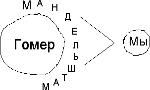
Марина Бугай. Я думаю сейчас иначе, чем в начале урока. Я хочу исправить. Я думаю, что мы входим в мир Мандельштама, наполненный Гомером. Мандельштам вошел в мир Гомера и передает нам его «кусочками». Но Мандельштам выбирает «ключевые» частицы Гомера. Я нарисую.
Рисунок 19
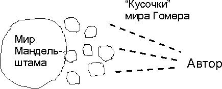
Женя Манко. Я не совсем согласен с Мариной. Мне не кажется, что этот мир Мандельштама, наполненный Гомером, как называет его Марина, состоит из кусочков, из частиц. Я не знаю, как это получается, но он не из кусочков.
Владимир Зиновьевич. По-моему, я понимаю мысль Жени. Видимо, Мандельштам не первый раз читает «Илиаду» (и «Одиссею» тоже). Когда во время бессонницы он «список кораблей прочел до середины», - это не первое чтение. Образы из разных песен «Илиады» накладываются один на другой, и возникает целостный образ гомеровской Греции, а не мозаика, не «кусочки». Например, сравнение уплывших с родины греческих кораблей с птичьей стаей есть в нескольких песнях «Илиады» (уже после списка кораблей).
Никита Цыганок. Читая это стихотворение, мы вступаем в диалог Гомера и Мандельштама. Мы попадаем в мир вопросов Мандельштама к Гомеру. «Куда плывете вы? Когда бы не Елена, что Троя вам одна, ахейские мужи?»
Я хотела бы остановиться на этом фрагменте разговора. Что произошло на уроке? На уроках мировой литературы дети встречаются с особым античным способом понимания мира. Они продумывают и осваивают ключевые для античного миропонимания понятия: эйдос, точка акме, космос, хаос. На этом уроке мы впервые столкнулись с тем, что дети освоили и применяют этот особый способ понимания для истолкования близкого к античности произведения. Дети будут и дальше пытаться применять античные понятия («эйдоса», «точки акме») для понимания произведений, в том числе и пушкинских, и каждый раз мы будем спорить, возможно ли, оправданно ли, плодотворно ли, наконец, такое применение, помогает ли оно открыть что-то новое и важное в «неантичном» произведении.
На этом уроке состоялся диалог читателей: дети слышали и понимали друг друга, они помогали друг другу наиболее точно уловить и выразить мысль, при этом удерживая каждый свою позицию. Соня постоянно настаивает на том, что собственные ощущения - единственный вход в мир произведения, только понимая себя, мы понимаем произведение. Оля Лейкехман полемизировала с Мариной Бугай и помогала Соне артикулировать ее сложную мысль о том, что собственные ощущения помогают Мандельштаму воссоздать мир Гомера. Никита «подхватил» мысль Сони и Оли Лейкехман, сказав об образе движения, и, видимо, помог родиться высказыванию Оли Коневой об эйдосе кораблей. Вместе с тем, продумывая стихотворение Мандельштама, дети обнаружили в этом произведении диалог современного поэта и Гомера. Мандельштам вступает в диалог с Гомером, задает ему свои вопросы, осмысливает его мир.
У Мандельштама его диалог с Гомером отрефлексирован: «А я говорю: вчерашний день еще не родился. Его еще не было по-настоящему. Я хочу снова Овидия, Пушкина, Катулла, и меня не удовлетворяет исторический Овидий, Пушкин, Катулл.
Удивительно, в самом деле, что все возятся с поэтами и никак с ними не развяжутся. Казалось бы - прочел, и ладно. Преодолел, как теперь говорят. Ничего подобного. (...)
Итак, ни одного поэта еще не было. Мы свободны от груза воспоминаний. Зато сколько радостных предчувствий: Пушкин, Овидий, Гомер. (...) ...поэт не боится повторений и легко пьянеет классическим вином»37.
Опьяненный классическим вином, Мандельштам встретился и с Пушкиным, и с Овидием, и с Гомером. Эту встречу одного авторского мира с другим очень точно уловили и попробовали описать дети.
На следующем уроке мы вернулись к вопросам Мандельштама к Гомеру, которые заметил Никита. Сначала мы обсудили первую строчку стихотворения. Почему такие короткие фразы? И между ними такие огромные смысловые «перескоки»? Не похоже ли это на шифровку?
Стасик Андренко. Автор не спит и читает Гомера - список кораблей. Он хочет, чтобы мы очень быстро это поняли, и поэтому говорит об этом в первой строке короткими фразами.
Учитель. Что значит «Куда плывете вы?» Разве ахейцы не знают, куда они плывут?
Антон Бочкарев. Мне кажется, это значит зачем плывете вы? Что заставляет вас плыть? Дальше автор в стихотворении говорит об этом.
Я попросила детей найти переносные значения слов в этом стихотворении. Дети посчитали метафорами слова «пена», «море», «Гомер». Было сказано, что просто «пена» не была бы метафорой, но в сочетании со словом «божественная» это слово становится странным, загадочным. Мы попытались разгадать загадку этой метафоры.
Саша Золотько. Божественная пена - это седые волосы на головах царей и героев (греки были кудрявыми). А божественная она потому, что греческие цари и герои - родственники богов. Это как бы божественная отметка.
Аня Бабиченко. Седые волосы на головах царей - это божественная мудрость.
Антон Бочкарев. Мне кажется, божественная пена - это морская пена.
У нас возник вопрос к Антону: почему же тогда морская пена - божественная? Антону помогла Женя Иванилова. Божественная пена - это красота моря, плывущих. Мы же говорим о чем-то очень красивом: божественно, божественный. И стихотворение само очень красивое.
Мы заметили звукопись в стихотворении, которая делает его особенно красивым: одинаковые звуки в словах журавЛИНый, дЛИННый, кЛИН, чуЖИе, рубеЖИ, муЖИ.
Рома Клочко: Морская пена связана с Афродитой - Афродита родилась из пены. Но она богиня любви, а плывут за Еленой, то есть тоже из-за любви. Поэтому на головах «божественная пена».
Мы пытались понять, что значит «И море, и Гомер - все движется любовью...» Даша Апилат. Любовь движет и людей на море, и сюжет Гомера.
Саша Золотько. Море и Гомер - для Греции самое главное, основа для Греции. Мандельштам выбирает самое главное для греков и говорит, что все это движется любовью к Елене.
И море, и Гомер - все движется любовью.
Оля Лейкехман. Море - хаос, и этот хаос движется любовью. Как это может быть?
Маша Донская. А вот так и есть. Даже море вместе с кораблями движется любовью. Все на любви.
Оля Лейкехман. А может быть, море - это неотъемлемая часть Гомера, и движется любовью вместе с Гомером?
Нам стало ясно, что, кроме уже найденных нами переносных значений, есть и другие: море и Гомер. Мы заметили, что МОРЕ и Г-ОМЕР звучат почти одинаково, и это тоже могло приворожить Мандельштама и заставить соединить их в едином движении.
Бывает, что некоторые дети не участвуют в разговоре, и кажется, что они выключены из урока. Это не всегда так. Иногда ребенок не успевает вставить слово в буре обсуждения, иногда что-то его затрагивает, и он так занят своими мыслями, что не подает голос, иногда, действительно, «отстает» от разговора, задумавшись над какой-то репликой. Некоторые дети говорят, что не могут одновременно записывать чужие мысли, обдумывать их и говорить сами. Бывает, что очень интересные записанные в классе или дома, но не произнесенные реплики детей обнаруживаются потом в тетради. Одну из таких реплик Оли Коневой я хочу сейчас привести. Оля Конева
В какой мир вводит нас О. Мандельштам? В мир Гомера или в свой мир? Мандельштам вводит нас в свой мир с пониманием Гомера. Видимо, Гомер в своих произведениях высказал и передал такие мысли и образы, которые трогают человека спустя тысячелетия. И через эти образы поэт понимает и чувствует другого великого поэта, Гомера, настолько зримо, что «море черное, витийствуя, шумит и с тяжким грохотом подходит к изголовью».
В мире Мандельштама слышится голос Гомера и встает картина мира героев и богов, Елены и Трои. Возможно, в жизни Мандельштама была своя Елена - любимая женщина: «все движется любовью» - и своя Троя - препятствия, которые он хотел преодолеть. Поэтому «Илиада» Гомера так его тронула и пробудила его собственную поэзию.
Урок этот окончился тем, что в качестве домашнего задания я попросила детей подумать над очень важным для меня вопросом: почему Гомер молчит, а море черное, витийствуя, шумит? Вопрос этот специально мы не обсуждали, но где-то он «выплыл» в сочинениях детей. Вот некоторые сочинения об этом стихотворении О. Мандельштама. Рома Клочко
Мои размышления на тему: Стихотворение Осипа Мандельштама «Бессонница. Гомер. Тугие паруса».
Мне лично это стихотворение очень нравится. Здесь показано очень хорошее знание «Илиады» и греческой мифологии, стиля и мыслей эллинцев. В этом стихотворении есть много выражений в возвышенном стиле греков:
...Сей длинный выводок, сей поезд журавлиный...
...На головах царей божественная пена...
...И море, и Гомер - все движется любовью...
Само стихотворение написано очень торжественно, возвышенной лексикой. Некоторые фрагменты из этого стихотворения заставляют задуматься , их сразу не поймешь.
...Сей длинный выводок, сей поезд журавлиный,
Что над Элладою когда-то поднялся.
Этот фрагмент я понял так: это великое описание Гомером кораблей поднялось над Грецией в веках и через тысячелетия живет в памяти народов.
...На головах царей божественная пена...
Почему «божественная пена»? То ли аналогия с мудростью, властью, отличностью от других. Или же потому что они плывут по морю, и это морская пена, пена бога Посейдона.
В конце Мандельштам сам задает вопрос: «Кого же слушать мне?» Гомер умер. Осталась только поэма, а море - лишь витийствуя шумит и тяжко гремит. Стасик Андренко О Мандельштаме
У Осипа Мандельштама бессонница, и он начинает читать произведение Гомера о взятии Трои. Дойдя до середины списка кораблей, направляющихся в Трою, Осип Эмильевич отвлекается от чтения, начинает думать о своем и сочинять это стихотворение. В его сознании рождаются образы, навеянные только что прочитанным. Он представляет плывущих в Элладу царей с «божественной пеной» вместо седины на голове - это пена, в которой родилась Афродита, поэтому она и «божественная». Метафоры Мандельштама точны и красивы. Дальше Осип Эмильевич размышляет о виновнице Троянской войны - Елене, что именно из-за нее «выводок» кораблей плывет в «чужие рубежи». Похоже, что и виновницей его бессонницы является эта женщина. Мандельштам хочет найти подтверждение своим мыслям о том, что все движется любовью, но не знает, кого же ему слушать: Гомер молчит об этом, а море лишь шумит.
Стихотворение грустное и очень музыкальное. Я думаю, оно о том, что без любви ничего не имеет смысла, что в основе всего происходящего непременно лежит любовь. Марина Бугай Сочинение по стихотворению О. Мандельштама «Бессонница. Гомер. Тугие паруса»
Одна эта строчка сразу напоминает круговорот. Нет, скорее круг, бесконечность. Или это мучения. Мучения в понимании Гомера. Этими мучениями Мандельштам входит в мир Гомера. И его уже мир заполнен частицами мира Гомера. Когда мы читаем это стихотворение, мы входим в мир Мандельштама. Но ни в коем случае мы не входим в мир Гомера. Это не мир Гомера. Это когда мы читаем или «Илиаду», или «Одиссею», мы входим в мир Гомера. В этом мире все придумано Гомером. А когда мы входим в мир Мандельштама, то мы чувствуем, что это мир Мандельштама, что он весь заполненный фантазией Мандельштама. И Мандельштам хочет поведать нам о его впечатлениях. Но он в точности никогда не сможет передать мир Гомера. Мандельштам шлет нам послания. Послания, в которых описан мир Гомера. Мандельштам очень все точно продумывает, прочувствывает. Вот даже строчку, которую мы разбирали:
...На головах царей божественная пена...
Очень трудно написать так. Так загадочно и ясно. Про каждую строчку Мандельштама можно написать еще по странице. Все так точно сконцентрировано. Так точно подобраны слова. Прочитав это стихотворение, я узнала еще одно мнение, еще одно впечатление о Гомере.
Конечно, самого комментария к стихотворению в работе Марины нет, но, видимо, тема авторских миров так взволновала девочку, что ей захотелось продолжить этот разговор дома. Для меня очень важно, что в этот разговор Мандельштама и Гомера Марина включает современного читателя - себя. И что рядом с ее впечатлением о Гомере появляется впечатление Мандельштама. И второе: Марина понимает и чувствует мандельштамовскую работу со словами.
Часто поражаюсь интуиции детей. Марина Бугай написала, что Мандельштам шлет нам послания не потому, что знала о мандельштамовском «провиденциальном собеседнике» или читала о мореплавателе, который «в критическую минуту бросает в воды океана запечатанную бутылку с именем своим и описанием своей судьбы». Марина не слыхала о том, что письмо в бутылке, по Мандельштаму, и стихотворение найдут адресата: «письмо - того, кто случайно заметил бутылку в песке», стихотворение - «читателя в потомстве».
Когда нам рассказывают о третьеклассниках, которые решают олимпиадные задачи по физике, это понятно - тут развитие интеллекта. А литература ведь требует опыта чувств и опыта жизни. Похоже, что у небольших и достаточно молодых детей седьмого класса этот опыт для чтения Мандельштама - есть. Женя Манко Бессонница. Гомер. Тугие паруса, Мандельштам, или Мои ощущения от этого стихотворения
Когда я вчитываюсь в это стихотворение, как и Мандельштам, вступаю в диалог с Гомером. У меня перед глазами встают эти корабли, смесь «Илиады» с «Одиссеей»: странствие ахейцев. Это стихотворение - это эйдос гомеровских образов, и эта грозность и мужественность царей, плывущих на кораблях, с забрызганными пеной волосами. Их взор устремлен вдаль к Трое, где одних из них ждет смерть, других - слава.
У Мандельштама есть вопрос, на который я попытаюсь ответить: Кого же слушать мне?
И вот Гомер молчит,
И море черное, витийствуя, шумит...
Так кого же? Гомер молчит, море шумит, но это почти одно и то же, Гомер - это море, море - это Гомер. Не зря эти слова так похожи. Море - это стиль Гомера, и Гомер молчит, то есть смысл слов ускользает, а слышна только музыка его стихов - море. Мандельштам разговаривает с Гомером, и под конец он перестает слышать, что он отвечает (а отвечает Гомер ведь гекзаметром, ведь его ответы - это есть «Илиада»и «Одиссея»), а слышит музыку гекзаметра, шум прибоя, эту торжественность, и медленно погружается в сон, и эта музыка подходит к изголовью его кровати, и я засыпаю вместе с ним. Оля Лейкехман «Бессонница. Гомер. Тугие паруса»
Это стихотворение наполнено морем. Безграничным, бескрайним простором, который где-то далеко сливается с линией горизонта. Море для Мандельштама крепко-накрепко связано с Гомером. Корабли, Елена, Гомер, море... Но в какой-то момент эти понятия перепутываются и переплетаются в голове Мандельштама, и он теряется во всем этом. Мандельштам спрашивает нас: «Кого же слушать мне?» Гомера или море? Оно все сплетено. И тут вдруг клубок распутывается сам собой. Главный наш рассказчик, Гомер, «молчит». Для меня его голос сливается с шумом моря и для Мандельштама, думаю, тоже. Такое у меня бывает очень редко, когда вместо голоса рассказчика я вижу то, о чем рассказывают. Только очень хорошее произведение можно так услышать. Мандельштам тоже восхищается Гомером. Гомером и ахейскими мужами. Им не страшно ничего, даже Троя «одна» им не нужна. Мандельштам восхищается всем. Его самого, как и нас, читателей, зачаровывают «тугие паруса», на которых плавно, вместе с черными кораблями (их цвета мы, как и автор, не будем замечать), вплываем все вместе в мир Гомера, смотря на все глазами Мандельштама. Но «куда плывете вы?» - задает Мандельштам следующий вопрос. Он знает, конечно, что корабли идут в Трою, но не из-за Елены, точнее, не только из-за нее. Мне кажется, ахейцы плывут за славой, за подвигами, за приключениями и открытиями. Но Мандельштам боится, как будто не знает, что дальше произойдет с героями, хотя наверняка читает Гомера не первый раз. Чего же он тогда боится и почему? Неужели просто будущего? Не знаю.
Это стихотворение стало нашим общим входом в мир Мандельштама, оно «выучилось» наизусть даже у самых слабых детей, и когда кто-то читал его на конкурсе русских «греческих» стихов, остальные смотрели на него укоризненно: неприлично читать то, что уже все наизусть знают. Пока что для продолжения разговора я выбрала снова любовное стихотворение.
«За то, что я руки твои не сумел удержать...»
Мы несколько раз читали это стихотворение: учитель, дети, женским голосом, мужским, вслушивались и вглядывались в него. Я попросила поделиться сначала впечатлениями и ощущениями.
Марина Бугай. Непонятно, у меня ощущение загадочности.
Оля Лейкехман. У меня тоже. Я ничего не поняла, и чувствую, что сейчас главное - понять, о чем это, и знать историю.
Маша Донская. Я тоже не знаю, о чем это, но у меня ощущение горечи.
Учитель. Почему у вас возникает такое ощущение? Что в стихотворении «дает» такое ощущение?
Соня. Это потому, что Мандельштам передает свои чувства, а чувства Мандельштама - горечь.
Маша. Горечь - потому что не сумел удержать, предал, потому что понадеялся, что возвратится...
Оля. Любовь потерянная, утраченная... Есть ощущение сухости: «крови сухая возня», «сухим деревянным дождем».
Никита. При чем тут чувства Мандельштама, Соня, если я - это Парис.
Учитель. Почему, Никита?
Никита. Стихотворение написано от имени Париса. Описание боя - изнутри. Тот, кто говорит, видит, что прозрачной слезой на стенах проступила смола, видит, как стрелы падают, как день шевелится на стогнах, то есть в городе.
Антон Бочкарев. Это Парис. Он должен рассвета в акрополе ждать.
Рома Ключка. Но ведь Троя была каменная - почему ненавижу пахучие древние срубы?
Саша Золотько. Я- Менелай, это он сидит внутри деревянного троянского коня.
Женя Манко. Это Менелай говорит: руки твои не сумел удержать... Как мог я подумать, что ты возвратишься, как смел?
Даша Апилат. Автор - за Трою.
Учитель. Почему вы так думаете?
Даша. Только любящий Трою мог бы сказать: где милая - милая - Троя? И с очень большой горечью: он будет разрушен, высокий Приамов скворешник...
Оля Лейкехман. Я слушаю и вижу: вроде бы все правы. И те, кто говорит, что я - это Парис, и я - это Менелай. Получается, что по тексту нельзя выяснить, кто я. Нет оснований. Стихотворение построено «кусочками», и нужно разобраться, где чьи слова.
Маша Донская. Я - это не Парис и не Менелай, я - Мандельштам. Почему-то он говорит то за Париса, то за Менелая.
Женя Манко. Это стихотворение - сумма всех мыслей всех. Это мысль участников Троянской войны. Так мог бы сказать Парис и Менелай, не отвлекаясь на частности: там, каменная Троя или деревянная.
Рома Ключка. «Зубчатыми пилами в стены вгрызаются крепко» - это ахейцы строили троянского коня из деревянной стены возле моря, которая ограждала их корабли.
Соня. Я хочу поддержать Машу. Я не Парис и не Менелай, я - это Мандельштам, и стихотворение - эйдос мыслей самого Мандельштама.
Учитель. Рома Ключка, Женя Манко говорили о камне и дереве, о каменной Трое или деревянной. Это связано с особым миропониманием Мандельштама. Стихотворение написано в двадцатом году, и Мандельштаму этих лет кажется, что развалу мира противостоит теплая, обжитая домашность, которая связана для автора с эллинизмом и с деревом. Первая книга Мандельштама называлась «Камень», а потом он написал: «И ныне я не камень, а дерево пою».
Аня Бабиченко. Когда у Мандельштама любовное переживание, он решает его с Гомером, к нему приходят «гомеровские ассоциации». Он кажется себе то Парисом, то Менелаем.
Саша Золотько. Он разговаривает то с Парисом, то с Менелаем.
Учитель. Вот Аня Бабиченко сказала: когда у Мандельштама любовные переживания, к нему приходят «гомеровские ассоциации». Это очень близкая мне мысль. Иногда мне кажется, что все было сказано о любви, о войне, о человеке три тысячи лет назад - у Гомера. О покинутости, о невозможности справиться с любовью. Греки объясняют эту невозможность тем, что Афродита заставляет Елену любить Париса, а для современного человека это блистательная метафора. Люди любят так, что, конечно, их кто-то заставляет, не по своей же воле. Троянская война из-за любви, но она же смертью губит любовь Андромахи и Гектора. Написана «Илиада» почти три тысячи лет назад, а сложность чувств человека и перипетий жизни потрясает нас. Помните, старцы сидят на Скейской башне, и туда приходит Елена. Я часто возвращаюсь к этому месту в «Илиаде». Буквально в десяти строках необыкновенной красоты все и обо всем без малейшего упрощения.
Старцы, лишь только узрели идущую к башне Елену
Тихие между собой говорили крылатые речи:
Нет, осуждать невозможно, что Трои сыны и ахейцы
Брань за такую жену и беды столь долгие терпят:
Истинно, вечным богиням она красотою подобна!
Но, и столько прекрасная, пусть возвратится в Элладу:
Пусть удалится от нас и от чад, нам любезных, погибель!»
Так говорили; Приам же ее призывал дружелюбно:
Шествуй, дитя мое милое! Ближе ко мне ты садися.
Узришь отсюда и первого мужа, и кровных, и ближних.
Ты предо мною невинна; единые боги виновны.
Или
Старцу в женах знаменитая так отвечала Елена:
Ты и почтен для меня, возлюбленный свекор, и страшен!
Невинна, прекрасна, осуждать невозможно, но пусть удалятся: и она, и погибель. Или другое здесь же: почтение и страх. Это уже я упрощаю, чтобы обратить внимание на неснимаемую двойственность. Вот эта красота и сложность гомеровского мира притягивает Мандельштама и не только его. Заставляет вечно возвращаться к мифу, который всегда.
Света Савочка. Мне кажется, немного иначе. У Гомера все, как должно быть: настоящий герой, настоящая женщина - эйдосы, и это притягивает Мандельштама, потому он к ним и обращается.
Я хотела бы привести два небольших домашних отклика на разговор в классе. Катя Пашинова
Мне кажется, что стихотворение полностью пропитано разными загадками и тайнами, но самая большая тайна - это кто же это «я». Для меня открывается такая картина: Александр увез Елену из Трои, и Менелай как бы просит прощения у Елены. Но это только 1 строфа, 2 строфа - отрывок из сражений, но написанный словами и языком Мандельштама, 3-я - обращение Менелая к Елене. Потом опять какой-то отрывок, а потом как будто Елена услышала Менелая, и отвечает ему, и в то же время задает вопросы. А последняя строфа - это после ночных боев наступает прекрасное утро, которое закрывает весь ночной ужас.
Это маленький отклик Кати, неразвернутый, недоказательный, но для нас тут важно, что разговор в классе не сделал стихотворение понятным, не «закрыл» возможность для дальнейшего обдумывания текста ребенком. Катя определяет эти «кусочки» (по Оле Лейкехман) стихотворения, пытаясь понять, чья речь. Оля Лейкехман Загадки О.Мандельштама
Мне кажется, что пока для нас самая главная загадка - это о ком говорится в стихотворении и кто все это говорит. Мне кажется, говорит либо Гомер, либо Мандельштам, скорее Гомер о Трое. Он говорит о ней с такой любовью и нежностью, как о возлюбленной. Губы ее соленые Она живет у моря. А Гомер смотрит из акрополя и винит сам себя. (Мы ведь очень часто виним себя в том, в чем не виноваты). Кроме того, Гомер написал «Илиаду», а помните, там Елена сидела и как будто сама выплетала судьбу Трои - ткала полотно. Мне кажется, не может быть рассказчиком ни Александр, ни Менелай, потому что с двух сторон говорится косвенно, а «наблюдательный пункт» находится в каком-то мирном городе, и наблюдатель - не воин.
Это сочинение Оли Лейкехман было для меня совершенной неожиданностью. Речь - Гомера, возлюбленная - Троя? А как же эпический гомеровский взгляд? Я написала Оле в рецензии, что ее соображения очень спорны, и предложила попробовать идти медленно по тексту в поисках доказательств. Оля этого не сделала, а ответила большим сочинением в несколько импрессионистском ключе. Я приведу его чуть ниже. Оля изменила свое мнение об авторе речи, прояснила мысль последней фразы отклика, которая кажется мне важной и точной. А я осталась с мешающим, как заноза, Олиным прочтением, и мне пришлось самой сверять его с текстом.
Что, если забыть, что стихотворение написано в 20 году среди других, посвященных О. Н. Арбениной-Гильдебрандт, что к нему есть множество комментариев и блистательная статья о нем М. Гаспарова, а прочесть впервые, по-Олиному? Я, демиург, «создатель миров моих» (Гомер, Мандельштам?) не сумел спасти в моем мире возлюбленную Трою от гибели. Я предал ее соленые нежные губы и не удержал рук. Может быть, потому, что даже будучи демиургом, не могу идти против мифа. Я знаю прошлое, настоящее и будущее Трои, но вынужден переживать ее гибель вечно и каждый раз заново. В акрополе своего города. Как Оля говорит: наблюдательный пункт в мирном городе. Поэтому так отстраненно, обреченно: «Ахейские мужи во тьме снаряжают коня...» Уже снаряжают, я все знаю, но бессилен помочь... Поэтому так мучительно биение моей крови: вот сейчас гибнет Троя, и в моей речи оживают все известные мне подробности ее гибели. А в последней строфе - мирное утро в моем городе).
Вот итоговое сочинение Оли Лейкехман по этому стихотворению. Осип Мандельштам. «За то, что я руки твои не сумел удержать...»
Что значит «понять»? Разобраться со смыслом, узнать, почему так, а не иначе, сравнить с собой, поставить на свое место? Что все-таки значит «понять»? Но понять что? Человека или стихотворение? Это разные вещи. Чтобы понять стихотворение, нужно и разобраться со смыслом, и узнать, почему так, а не иначе, и сравнить с собой, и еще многое другое. «Понять» - это очень трудно, но я постараюсь.
Сначала я попробую ответить на вопросы, которые у меня возникают при чтении стихотворения Осипа Мандельштама «За то, что я руки твои не сумел удержать». И вот уже первые вопросы: чьи это руки, о ком будет говориться в стихотворении, кто будет говорить? Мне кажется, что говорить будут о Трое. О ней говорят, как о милой, возлюбленной. Губы ее «соленые и нежные». Но кто ее так любит, кто пишет о ней? Этот человек ушел из Трои, может, вышел из ее мира теперь сидит в каком-то «дремучем акрополе». Теперь он вспоминает все. Что было в том мире, или есть, или, может быть, будет. Мне кажется, что «Я» - это Мандельштам. Он читал. Читал о Троянской войне, читал долго, сам вошел в Трою. Мандельштам полюбил ее. Он перечитывает эту книгу не первый раз, он почти выучил ее наизусть и все равно волнуется, переживает все сначала.
Что-то заставило Мандельштама отложить книгу и, возможно, на самом интересном месте. А теперь он лежит в своей постели, на прохладной простыне, и ему кажется, что он на акрополе ночью ждет рассвета. Мандельштам знает, что на следующей странице его милой уже не будет. Он знает, что сейчас «снаряжают коня», рушат стены, слышатся приглушенные звуки, шепот, «крови сухая возня».
И вот раннее-раннее утро. Следующая страница. Троя гибнет. От нее ничего не осталось. «Где ты?» Остались только стрелы, которые падают и падают, как дождь в пустоту. Они уже не приносят никому вреда. И вот погибает последний воин.
Наступил настоящий день. Закончилась книга. Мандельштам оглядывается вокруг и с удивлением замечает, что, оказывается, сидит на своем диване, а не на акрополе, оказывается, что все вокруг стоит по-прежнему. А Троя где-то далеко-далеко и уже давно разрушена.
«Ты, конечно, очень красиво описала и рассказала, но почему не может говорить Александр?» - скажете вы. Мне кажется, что рассказчиком не может быть Александр. Он не может ненавидеть «срубы». И повествование идет из какого-то мирного города, да и взгляд на мир не военный, а чисто человеческий.
Когда я читала «Илиаду», она меня усыпляла и погружала в свой особенный мир, из которого очень трудно и необычно выходить. Ты как будто пробуждаешься от долгого сна. С Мандельштамом было то же самое. Он полюбил мир Гомера, и многие стихотворения были об этом мире. Если бы я была поэтом, то я, наверное, тоже написала бы длинное-длинное стихотворение. Оно было бы сонливое и грустное, но с маленькими иголочками, которые изредка покалывали читателей и пробуждали их. Но я, к сожалению, не поэт и, наверное, никогда им не стану. Но может быть, я стану читателем, который будет, действительно, уметь «понимать» произведения. Во всяком случае, это стихотворение я для себя объяснила.
Подробным обсуждением Олиного сочинения мы в классе не занимались. Чтение сочинений детей в классе всегда вызывает большой интерес, и есть группа детей, которая обычно не хочет расставаться с каждым произведением. Группа, но далеко не все, и тут надо пытаться ловить ту грань, когда дети еще не устали от работы с небольшим произведением, не «заговорили» его, и я побоялась еще урок-два разбирать стихотворение. Света Савочка Осип Эмильевич Мандельштам. «За то, что я руки твои не сумел удержать»
Это стихотворение просто замечательное и поразительное. Создается такое ощущение, что его писал и Гомер, и Мандельштам. С каждой строчкой пред тобой открывается все новая и новая картинка. И я думаю, что если представить это стихотворение в виде гекзаметра, то получится Гомеровская «Илиада».
В стихотворении, как и у Гомера, описывается и слава, и любовь, и героизм, В первой строфе описывается как бы наказание настоящего героя, искренне любящего ту женщину, в которой запрятан сам идеал настоящей женщины. Вторая же строфа о том, как ахейские мужи готовятся к битве, и эта битва никак не закончится. А в последней строчке этой строфы автор вместе с героем рассказывает о неописуемой красоте возлюбленной.
И нет для тебя ни названья, ни звука, ни слепка.
В третьей строфе герой казнит сам себя за то, что преждевременно ушел от свой любимой. А последние две строчки этой строфы - это описание ночи, переходящей в утро, по гомеровскому стилю.
Четвертая строфа, может быть, рассказывает о том, как город уже плачет смолой от бесконечной войны, от проливаемой воинами крови. И в последней строчке этой строфы автор все равно упоминает про образ идеальной женщины.
И трижды приснился мужам соблазнительный образ.
В пятой строфе идет предсказание этого разрушения, описание стрел, которыми все будет разрушено.
Я думаю, что шестая строфа - это долгая ночь после долгой войны. И эта ночь даже описывается так светло, как никогда.
Это красивое и замечательное стихотворение нужно посчитать добавочным к «Илиаде». Ведь нам оно передалось из глубины души Осипа Эмильевича Мандельштама и Гомера. Никита Цыганок «За то, что я руки твои не сумел удержать...»
Сначала, когда читаешь это стихотворение Осипа Мандельштама, очень трудно докопаться до реального смысла. Начнем с того, что место и время событий, описанных в этом стихотворении, - Троянская война, в частности, взятие Трои. Таким образом, это стихотворение тесно переплетается и «Илиадой» и ее героями. Естественно и Троянскому коню понятно, что «она», к которой обращается герой этого стихотворения, - Елена, причина всей Троянской войны. Но остается неясным, кто же все-таки к ней (к Елене) обращается. Судя по строчкам
За то, что я руки твои не сумел удержать,
За то, что я предал соленые нежные губы...
этим человеком может оказаться либо Парис, либо Менелай.
Строчку
Как мог я подумать, что ты возвратишься, как смел?
Тоже можно толковать по-разному: с одной стороны, Елена была похищена у Менелая, и он хотел ее вернуть. С другой, Парис также потерял ее (немного в другом смысле: он потерял ее уважение) и тоже хотел, чтоб она вернулась.
Посмотрим дальше: «Как я ненавижу пахучие древние срубы» вроде бы говорит в пользу того, что это Менелай. Но слова «Где милая Троя? Где царский, где девичий дом?» утверждают совершенно обратное.
Возьмем еще один кусочек: «Я должен рассвета в дремучем акрополе ждать». Естественно, Парис мог находиться в акрополе, но и Менелай, возможно, был там, находясь внутри Троянского коня.
В какой-то момент начинаешь понимать, что с помощью логики это стихотворение понять нельзя. Мне кажется, что это как бы вся «Илиада», пропущенная через Мандельштама. Выходят оттуда совершенно отдельные «центральные» мысли. Так, слова «милая Троя» могли принадлежать Приаму, а к Елене могли обращаться и Парис, и Менелай.
Мне бы хотелось привести выдержки из обсуждения этого стихотворения в 2002 году. Вопрос о том, чей голос звучит в стихотворении, вновь оказался в центре внимания семиклассников. Как и в предыдущие годы, дети увидели, что текст «сопротивляется» версиям о том, что звучит голос Париса или Менелая.
Сережа Переверзев. Я думаю, что Мандельштам пишет от своего имени. Пахучие древние срубы из первой строфы не были бы пахучими и древними, если бы это описывал герой Троянской войны.
Строфы тут чередуются. 1, 3 и 6 - это реальность, а 2, 4 и 5 - это как бы воспоминание о Троянской войне. Мандельштам вспоминает историю с Еленой и сравнивает Елену со своей любимой женщиной, и мрак ночи ассоциируется у поэта с Троянским конем, которого изготавливают пилами и снаряжают ахейцы. Но вот последняя звезда тонет в небе, и наступает день, медленный, сонный. И стоит прямо гробовая тишина, как после захвата Трои той далекой ночью.
Ксюша Утевская. Мне кажется, это стихотворение получилось так: Мандельштам соединил собственную любовь в реальности с истрией Троянской войны, описанной в «Илиаде».
И тут возник вопрос Ромы Колесникова, оказавшийся очень важным для всех детей этого года.
Рома Колесников. Зачем это нужно Мандельштаму? Зачем Мандельштам смешивает реальность с Троей для написания этого стихотворения?
Косвенно на вопрос Ромы «отвечали» и семиклассники предыдущих лет. Аня Бабиченко говорила, что собственное любовное переживание Мандельштам «решает с Гомером», а Света Савочка добавляла, что у Гомера настоящий герой и настоящая женщина - эйдосы, и это притягивает Мандельштама. Но в 2002 году возник еще один ответ, который мне показался заслуживающим внимания. Ксюша Утевская. Зачем Мандельштам переносит свои чувства в рамки «Илиады»?
Быть может, Мандельштам читал во время своей любви «Илиаду». Ведь стихотворение «Бессонница. Гомер. Тугие паруса» на это явно указывает. Вообще «Илиада» имеет такую интересную особенность: она подходит каждому, чувства каждого там находят отражения, но в особенной одежке из древнего времени и далеких мест около Илиона. Главное - увидеть эти замаскировавшиеся отражения. «Илиада» - тысячи дорог, тропинок по воде и земле, сквозь огонь и (для Мандельштама) дерево. Так Мандельштам сквозь свои очки, свои чувства прочел песни Гомера и в дубовых рощах сочинил свои стихотворения на волновавшие его темы.
Может, Гомер лучше всех понимал Мандельштама?
«Золотистого меда струя из бутылки текла...» или несколько греческих мифов
Думая об уроке, я всегда жду, как сложится судьба - буквально судьба - произведения во встрече с нами. Если представить, что у каждой хорошей книги есть еще одна, гигантская, просто мы ее не видим, невидимая нами, книга-спутница - и в эту спутницу вписаны все встречи всех людей в течение веков с самой книгой. И вот спутница - это и есть судьба книги на свете. Что же мы впишем в судьбу стихотворения Мандельштама? И как это будет, как это произойдет? Читаем два раза. После бури прошлого стихотворения сегодня полнейший штиль.
Учитель. Что, не понравилось?
Общий глас. Понравилось, но непонятно.
Жени Манко (не очень уверенно). Он почему-то сплетает аргонавтов и странствия Одиссея.
Учитель. Подумаешь, непонятно. А когда было сразу понятно?!.
Юра Пащенко. Но обычно понятно, что непонятно. Какие вопросы задавать. А тут совсем непонятно. Даже приблизительно, о чем это.
Учитель. Давайте забудем пока о непонятности и поделимся друг с другом впечатлениями и ощущениями от звучания стихотворения.
Марина Бугай. Когда я слушаю, кажется, что мне поют колыбельную. Успокаивающее звучание.
Алеша Попроцкий. У нас такое уже было, когда мы слушали гекзаметр.
Маша Донская. Я хочу подтвердить то, что Марина сказала. Я на доске напишу.
Золотистого меда струя из бутылки текла.
5 стоп, 3 слога, метр анапест, размер пятистопный анапест, он всего на одну стопу короче гекзаметра. Поэтому ощущение колыбельной.
Оля Лейкехман. Может быть, это противоречит впечатлению Марины, но мне кажется, в стихотворении есть что-то свежее, прохладное.
Никита Цыганок. Я согласен. Что-то холодное, молодое.
Учитель. Чем ваше впечатление подтверждается в тексте стихотворения?
Оля. Может быть, слова «свежее вино» и то, что стихотворение кончается шумом морских тяжелых волн.
Учитель. Для меня сейчас впечатления Марины, и Оли, и Никиты парадоксальным образом сочетаются. С одной стороны, что-то спокойное, убаюкивающее: сам размер стихотворения, «как тяжелые бочки, спокойные катятся дни», «сонные горы». С другой - когда кто-то возвращается из морских странствий, пространством и временем полный, есть ощущение прохлады и свежести.
Дальше шел разбор метафор стихотворения, обсуждение устройства пространства в нем и «смешения» автором нескольких греческих мифов. Видимо, стихотворение, действительно, показалось детям очень сложным (хотя мне представлялось, что «Ласточка» и «За то, что я руки твои не сумел удержать» сложнее), разговор был полностью инициирован учителем, и я привожу лишь домашние размышления учеников. Даша Апилат «Золотистого меда струя из бутылки текла»
Как и все стихотворения О. Мандельштама, это стихотворение вызывает особое впечатление. У меня сразу появилось впечатление, как будто тут соединено сразу несколько греческих мифов. Но дальше я поняла, что Мандельштам просто создал свой греческий мир, который живет в нем параллельно с настоящим. Из стихотворения видно, что Мандельштам находился в Крыму, но тут он вспоминает о Греции. Может, Мандельштаму сам Крым напоминает Грецию. Еще по этому стихотворению мне сам Мандельштам понравился. Потому что у меня тоже есть мир, как и у Мандельштама, который живет параллельно с настоящим. Этот мой мир очень необычный. И может, когда-нибудь я тоже напишу о нем. А смысл этого стихотворения в том, что Мандельштам видит что-то общее между Крымом и Грецией. Оля Конева «Золотистого меда струя из бутылки текла»
Это стихотворение с первых же строк начинает литься, как струя золотистого меда, и звучать мягкой песней. Музыка стихотворения очень тесно переплетена с его смыслом: «Золотистого меда струя из бутылки текла так тягуче и долго...»
Когда Мандельштам писал это стихотворение, он находился в Тавриде. Видимо, пейзаж Тавриды и ее архитектура навевали на поэта ореол античности. Стихи Гомера пронизаны архаикой. Они настолько приятно поразили поэта, что он во всем видел отпечаток древней античности:
Я сказал: виноград, как старинная битва, живет,
Где курчавые всадники бьются в кудрявом порядке...
Хотя Мандельштам в этих строчках описывает сад, мне представляются белые колонны, оплетенные зеленым виноградом.
Стихотворение начинается и заканчивается золотистой гаммой. «Золотое руно, где же ты, золотое руно?» Золото у Мандельштама ассоциируется с храмами, древними памятниками и золотым руном.
Одиссей, возвратившись, оставил за своей спиной полотно морского пространства, море событий, времени и привез с собой «золотое руно» своей души, наполненное этим пространством, временем и пережитыми событиями:
Одиссей возвратился, пространством и временем полный.
4. «Ласточка»
Это стихотворение казалось мне самым сложным из античных греческих стихов Мандельштама, и я оставила его напоследок, когда, казалось, дети немного привыкли к способам разгадывания мандельштамовских смыслов. Я приведу запись урока по «Ласточке» в другом классе, в следующем учебном году, так как этот урок оказался лучше записанным у учителя и детей.
Мы, как обычно, прочитали стихотворение несколько раз. Мне показалось, что дети в недоумении. Кто-то робко сказал, что это о смерти и о загробном мире. Я задала дома подумать, о чем стихотворение. Сказала, что если быть очень внимательными, то в тексте, как обычно, есть разгадка, но здесь надо заметить повторяющиеся слова.
На следующем уроке разговор начал Андрей Пугачев.
Андрей. Это стихотворение вот о чем: человек хотел что-то сказать, но умер, не успел, и слово улетело в Аид.
Саша Резник. Да, стихотворение о смерти близкого автору человека, который не смог, не успел сказать что-то важное.
Максим Зезюлин. Речь не о смерти, а о том, что человек не смог чего-то высказать.
Маша Гладкова. Несказанное слово - это мертвая ласточка.
Учитель. Маша, это очень красиво: несказанное слово - мертвая ласточка. Но почему вы так думаете? Объясните.
Маша. Я сейчас не могу объяснить, дома поняла, а сейчас забыла.
Учитель. Хорошо, Маше - тайм-аут, постарайтесь вспомнить.
Катя Левина. Я прочитаю то, что я дома написала. Мне кажется, это стихотворение о том, что случилось так, что у поэта нет слов для писания стихотворения. У него есть мысль, но она не может подтвердиться словами и потому не остается в голове. И описываются чувства, которые испытывает поэт. То, что он чувствует, как его мысль пропадает, и он ничего не может сказать.
Оля Костенко. И я хочу прочитать домашнюю работу. Мне кажется, что это стихотворение совсем не о смерти и не о загробном мире, о загробном мире здесь только упоминается. Я думаю, что это стихотворение о слове автора, именно это слово и есть ласточка. Автор начинает свое стихотворение так:
Я слово позабыл, что я хотел сказать.
Слепая ласточка в чертог теней вернется
На крыльях срезанных, с прозрачными играть
В беспамятстве ночная песнь поется.
Значит, это забытое слово - ласточка, которая летит в беспамятство (чертог теней). А потом уже это забытое слово сравнивается с загробным миром, где все странно и загадочно.
Маша Гладкова. Я поняла, почему несказанное слово - мертвая ласточка!
Учитель. Хорошо, пусть Оля дочитает.
Оля. В третьем четверостишии говорится, что слово может быть разным, великим, безумным, как Антигона, нежным. В пятом четверостишии сказано, что для людей слово важное, оно может быть приятным, привести к любви и узнаванию, для людей даже звук приятен.
Учитель. По-моему, работа замечательно интересная. Только мне кажется, что забытое слово не сравнивается с загробным миром.
Катя. Слово туда попадает, потому что «с прозрачными играть» - это с тенями. Прозрачные - это тени.
Маша. Я по третьему четверостишию увидела. «То мертвой ласточкой бросается к ногам»
Оля. Да, я согласна с Машей, в третьем четверостишии «медленно растет как бы шатер иль храм» - растет слово, когда оно рождается или вспоминается.
Маша. А потом оно же мертвой ласточкой бросается к ногам.
Юля Тимошенко. Это стихотворение о нерожденной мысли.
Учитель. В прошлом году, когда мы с ребятами обсуждали «Ласточку», возникли вопросы, почему у нее срезанные крылья, почему она слепая, почему она будет с прозрачными играть? Были очень интересные ответы. Рома Клочко сказал, что с прозрачными - потому что с призрачными. Это слово родилось у Мандельштама по созвучию. У Гомера ведь тени названы не прозрачными, а бесплотными. А Катя Слюсарева сказала, что играть - потому что ласточке осталось последнее счастье жизни - играть.
Катя Левина. А мне кажется, мысль - слепая ласточка, потому что она себя не видит, не знает, какой она будет, у мысли еще нет одежды из слов.
Наташа Марущенко. В этом стихотворении мысль - как в «Одиссее»: она подходит к губам, и снова ее отбрасывает, как Одиссея ветрами.
Максим Зезюлин. Как в античном пространстве: от центра - на самый край, в Аид. Я хочу еще объяснить, почему «среди кузнечиков беспамятствует слово». Слово забыло свой путь, куда оно должно пойти, в какой предложение, поэтому беспамятствует.
Учитель. По-моему, замечательное у вас предположение, Максим. Слово забыло, в какую речь ему идти, буквально, в какое предложение. В прошлом году ребята говорили, что оно и забыло свое значение. Слово, знающее свое значение, - сочное, а слово, забывшее свое значение, - сухое, от него одна оболочка, как шкурка змеи, и поэтому оно беспамятствует с сухими кузнечиками. Соня Вальшонок говорила, что поэт как только может ищет слово, всеми возможными способами - ощупью, в темноте, пальцами. Поэтому «зрячих пальцев стыд», поэтому «выпуклая радость узнаванья».
Маша Гладкова. Слово на границе, оно то приходит, то уходит, то как бы вспоминается, то опять забывается, и Стикс на границе двух миров, поэтому ласточка бросается к ногам с стигийской нежностью.
Андрей Плюснин. Слово «мертвой ласточкой бросается к ногам с стигийской нежностью и веткою зеленой». Зеленая ветка показывает, что слово уже родилось, как в природе.
Учитель. Женя Манко нарисовал очень интересно нерожденное слово. Оно одновременно и в Аиде, и в голове человека, который не может это нужное ему слово вспомнить.
Андрей Пугачев. Слово, рождаясь, должно оказаться на губах, чтобы его сказали. А оно тает на губах, как лед, - не рождается.
Учитель. Хорошо, Андрей. Оно тает, как лед, потому что в Аиде холодно, там черный лед, и слово, рождаясь, приносит на губы человека «стигийские» воспоминания - воспоминания о своих блужданиях в Аиде, в мире умершего и нерожденного. Поэтому
А на губах, как черный лед, горит
Стигийского воспоминанье звона.
Хочу привести несколько сочинений детей. Никита Цыганок «Ласточка» 1.
Человек забыл слово... Казалось бы, ничего особенного: это всего лишь слово. Но Мандельштам - поэт, все понимающий и выражающий через слово. Для него слово очень важно: это не просто звук или знак. Для поэта слово - что-то более важное и сложное, слово почти живое...
Слово - ласточка. Мандельштам называет потерянное, забытое слово слепой ласточкой на срезанных крыльях. Саму эту «забытость» Мандельштам сравнивает с глухотой, слепотой, смертью.
О, если бы вернуть и зрячих пальцев стыд,
И выпуклую радость узнаванья -
это тоже о той самой «слепоте», и «выпуклая» - это, как мне кажется, намек на письмо для слепых, которые часто читают на ощупь, пальцами.
2. И медленно растет как бы шатер иль храм
это тоже о слове. Точнее, не о нем самом, а о его поиске, нащупывании поэтом: мысль, кажется, вот-вот найдет свое выражение в нужных словах, но те опять ускользают, теряются в памяти... 3.
Все пространство «Ласточки» можно разделить на две части: первая - реальный мир, где находится поэт, вторая - мир его воображения, откуда он берет всех своих «ласточек». 4.
Второй мир «Ласточки» - это сухой, тихий и призрачный мир. Там нет звуков или их почти не слышно. В этом мире слова беззвучны и мертвы. 5.
Я так боюсь рыданья Аонид, тумана, звона и зиянья.
Эти строчки отличаются от остального стихотворения даже звукописью: здесь звонкие звуки, а почти все остальное стихотворение имеет преобладающие глухие. По смыслу здесь получается странное несоответствие: как поэт, лишающий слово глухоты, может бояться громких звуков?! Но большинство стихотворений Мандельштама, действительно, звучат не громко и отчетливо, а тихо и мягко. Значит, некоторая «глухота» «ласточкам» Мандельштама все-таки присуща... 6.
Но вот слово (ласточка) начинает приближаться к границе первого мира (реальности) и ...исчезает, забывается. Остается только ощущение
А на губах, как черный лед горит
Стигийского воспоминанье звона. Оля Конева «Ласточка»
Хотя мне это стихотворение показалось сложнее всех предыдущих, оно пронизано одной единственной, очень ясной для меня мыслью. Эта мысль, как ласточка с прозрачными крыльями, стремительно пролетает через все стихотворение и заключает в себе вдохновение поэта, с которым рождается его мысль. Вдохновение приходит в особый час, а спустя некоторое время покидает сознание человека.
На протяжении всего стихотворения Мандельштам находится в поисках своей мысли и передает это через зрительные образы, осязание, оттенки настроения и чувства. Эти оттенки передают разные подсмыслы одной мысли.
Работа над стихотворением «Ласточка» не была забыта детьми. Прошло два года, и для доклада на детской конференции Маша Донская выбирает снова «Ласточку». Маша Донская «Ласточка»
В 1922 г. вышел сборник О. Мандельштама «Tristia». Современный литературовед Юрий Левин назвал девять стихотворений из этого сборника «крымско-эллинскими»38. Одно из них – «Ласточка». Я собираюсь прокомментировать это стихотворение. Я думаю, оно представляет собой «эллинскую» часть. В основном - из-за очень важного греческого представления об Аиде. В этой работе я собираюсь опираться на статью Ю. Левина, высказывания ребят из моего класса и на класс меньше.
Мне кажется, чтоб понять смысл стихотворения «Ласточка», надо услышать его звучание, прокомментировать его построчно и понять, зачем оно нужна автору. Что я сейчас и сделаю.
Сначала о стихотворении в целом. Его метр – шестистопный ямб. Он и длинный, плавный – это из-за большого количества стоп, но и твердый, мерный – это из-за частых ударений. От всего стихотворения остается ощущение горечи, безысходности. Оно связано со словами срезанные, слепая, рыданье, сухая река, пустой челнок, стыд и т.д. и со звукописью повторяющихся преимущественно глухих звуков ст, сл (например, слова слово, слепая, ласточка, вернется, в беспамятстве, пустой, растет, бросается, стигийская, стыд, радость и т.д.) Но в то же время есть ощущение светлости, прозрачности, чистоты, устремленности вверх. (Описав свои ощущения, я поймала себя на том, что использую ту же звукопись, что и поэт).
Поэт позабыл слово. Казалось бы, ну и что. Позабыл одно, вспомнит другое. Но для него это крах, он поэт, он живет словом. И об этом написано все стихотворение.
Все нерожденное и умершее находится в Аиде. В этом стихотворении Аид отождествляется с подсознанием. Ведь там же у человека находятся все мысли, прежде чем появятся в сознании.
Раньше я думала, что у Мандельштама в голове крутится какая-то мысль, но он не может «вытащить из подсознания» слово для нее, и мысль, так и не сказанная, улетает в Аид.
Сейчас я уверена, что есть еще один этап. Мандельштам только что начинал прояснять мысль, «выуживать из подсознания» слова, готов был уже эти слова произнести, но забыл, и они упали обратно в черноту Аида, и теперь Мандельштам не может их «вытащить» опять.
А теперь я сделаю построчный анализ. Автор позабыл слово. Он его отождествляет с ласточкой. Это показывают строки: Слепая ласточка в чертог теней вернется и Мысль бесплотная в чертог теней вернется. Т.е. ласточка = слово, речь = рожденная мысль. Потому что выражение мысли в мире и есть речь.
В беспамятстве ночная песнь поется - эта мысль такая смутная, непроясненная, как странный, подсознательный, «в беспамятстве», сон.
Идет описание Аида. Бессмертник не цветет. Бессмертник – символ жизни. По внутренней форме слова «без смерти». В Аиде нет жизни. В сухой реке пустой челнок плывет – показывается какая-то невероятная странность Аида. К тому же у Мандельштама в Аиде всегда сухость, бескровность, прозрачность (Среди кузнечиков беспамятствует слово - сухое, не облеченное плотью смысла слово беспамятствует среди таких же сухих кузнечиков в Аиде).
«Прозрачны гривы табуна ночного» – табун ночной - это тени, а тени в Аиде прозрачны. А потому, что в Аиде всегда темно, их табун называется ночным.
И медленно растет, как бы шатер иль храм – раньше мысль была сгустком вещества, материи, когда не понимаешь, что это за вещество. Но вот она начала проясняться, шаг за шагом, начали появляться конкретные слова для нее. Вот растет понятое в этой мысли. Медленно, как по кирпичикам, на ощупь.
Интересны слова «стигийская нежность». Стикс – река на границе. И слово стоит на границе между забвением и рождением. Между жизнью – зеленой веткой и легкой, мягкой нежностью. (Нежность обычно противопоставляется страсти.)
О, если бы вернуть и зрячих пальцев стыд,
И выпуклую радость узнаванья – еще одно доказательство моей гипотезы. Поэт позабыл слово, что он хотел уже сказать. Вот только что он начинал нащупывать, на самом деле, как слепец, буквально руками, зрячими пальцами, потихоньку прояснять, облекать в конкретные слова мысль, но опять потерял, забыл и это смутное понимание. О, если бы его вернуть! А зрячих пальцев стыд, – потому что им стыдно, что только они зрячи, а глаза и мысль – нет.
Я так боюсь рыданья Аонид,
Тумана, звона и зиянья – поэт боится зиянья места в строке для этого потерянного слова, рыданья Аонид (муз) из-за этого, тумана и звона, которые у Мандельштама ассоциируются с Аидом.
Дальше говорится, что человек может, в отличие от теней, любить, узнавать говорить, рождать в свет и звук мысли, но он, Мандельштам, забыл слово, и все пропало для него и для мысли.
Для них и звук в персты прольется – точно так же, как и видится, мысль звучит только через пальцы, на ощупь.
Все не о том, прозрачная твердит,
Все ласточка, подружка, Антигона – у поэта в голове мелькают слова, но нужного, почти произнесенного, нет, оно забыто.
А на губах, как черный лед горит
Стигийского воспоминанье звона – а на губах Мандельштама (потому, что человек произносит слова губами) горит воспоминание о только что подступавшей туда, почти сказанной, ледяной, из Аида, мысли. Лед - потому что слово растаяло на губах, как лед. Черный лед – потому что в Аиде всегда темно и холодно. А когда к теплым губам прикасается лед, то они, кажется, на самом деле «горят»
У меня возникают вопросы к некоторым местам, словам стихотворения.
Почему слепая ласточка на крыльях срезанных?
Я считаю, эти слова выражают ущербность, беспомощность не рожденной мысли. Пока мысль не рождена, она беспомощна и бессловесна, она никому не понятна. А в мире она какое-то время владеет умом хотя бы одного человека, а может, и многих.
2. Почему Мандельштаму приходят на ум именно слова подружка и Антигона?
Они, с одной стороны, все (вместе с ласточкой) женского рода, а с другой стороны тут Антигона употребляется в смысле «сестра», а ласточка в греческой мифологии тесно связана с душой, т.е. получается ряд душенька, подружка, сестричка. Т. е. мягкие, теплые, нежные, ласковые, любовные, женские чувства.
Что хочет сказать этим стихотворением Мандельштам? Что рассмотреть? Зачем оно ему нужно?
«Ласточка» – рассмотрение «под микроскопом» момента рождения стихотворения. Всегда есть секунда, когда подыскиваешь слова для своей мысли. Но с этим у Мандельштама трудностей не было (поэт пишет о забытом слове и при этом рождает кучу образов, пучков ассоциаций). Мандельштам сразу входил в мир своего стихотворения и потом уже в нем и находился. Теперь же он хочет посмотреть, рассмотреть и почувствовать, как это, когда забываешь слова. К тому же, когда стихотворение рождается так мимолетно, кажется, что в этом нет твоей заслуги. Не ты его, путем долгих трудов, придумал, а оно вдруг само – захотело -- и появилось в твоем сознании. Мандельштам не хочет, чтоб было так.
5. Греческий мир Мандельштама и мир Гомера
До начала работы с «греческими», «гомеровскими» стихами Мандельштама я такого урока не планировала. Но при встрече со стихотворением «Бессонница. Гомер. Тугие паруса» дети сразу же заговорили о мире Мандельштама и все время возвращались к этой теме. И когда все стихотворения были прочитаны, мне показалась интересной такая тема как рефлексия работы.
При подготовке к этому уроку для домашнего обдумывания детям были даны вопросы:
каков мир, в который мы попадаем, читая «греческие» стихотворения Мандельштама?
с помощью какой речи создается этот мир?
почему для создания такого мира нужна такая речь?
Привожу запись разговора в классе.
Даша Апилат В мире Гомера важны все детали, поэтому есть и четкий крупный план (и средний и общий тоже). А в мире Мандельштама только средний план, потому что он загадочный, призрачный.
Аня Бабиченко. Мир Гомера надо постигать чувствами, умом, вниманием - всем, а мир Мандельштама - интуицией.
Сережа Широкорад. В мире Гомера одно предложение продолжает мысль другого, и есть связный сюжет
Аня. Мир Гомера четкий, имеет границы, длину и ширину, мир Мандельштама не имеет границ и рамок.
Соня Вальшонок. Мир Гомера - подробно описанный мир...
Тимур Охрименко. ...и красота его - в подробностях.
Соня. Гомер описывает эйдосы всего: троянцев, ахейцев и даже понятий, например, кровожадности. Мандельштаму не надо заново описывать весь греческий мир, а только сказать о своем понимании, и он пишет так искусно, что мы попадаем в мир Гомера.
Оля Конева. Нет же, Соня. Мы попадаем в мир впечатлений от мира Гомера.
Оля Лейкехман. ...в мир впечатлений от мира Гомера, важных для Мандельштама.
Оля Конева. Речь Гомера дает нам представление о реальном мире.
Женя Манко. А речь Мандельштама строит призрачный мир, эфемерный, соединенный с другими местами - с Крымом, с миром нерожденных мыслей, то есть с подсознанием. Может быть, вы удивитесь, но мы можем примерно сказать, когда «был» мир Гомера. Это не время жизни Гомера, а время Троянской войны. А когда «греческий» мир Мандельштама? Когда Аид, когда подсознание? Но ведь в этот мир входит сегодняшний Крым, вернее, Крым «всегда» - Таврида.
Вот продолжение этого разговора в домашних работах детей. Аня Бабиченко Сочинение «Мир Мандельштама и мир Гомера».
Читая творенья Мандельштама, мы попадаем, безусловно, в мир Мандельштама, но в этом мире живут его впечатления гомеровские. Речь Мандельштама легка, как ласточка, она летуча, прозрачна. Самое сложное - это понять Мандельштама. Я не знаю почему, но это было как-то интуитивно. Мы все высказывали свои ассоциации, и наверное, потому, что вместе, было много вариантов, и находили ответы. Но нам было легче, потому что мы прочитали «Илиаду» и «Одиссею», познакомились с Античностью, мы как-то влились, что ли, в античную Грецию, побывали в Трое, увидели Елену, каждый свою, но мы все ее видели. Видели Ахилла и Гектора, Париса и Приама, видели павшую Трою и рыдали вместе с Приамом. И только поэтому нам было легче попасть в мир Мандельштама. Но мир Гомера ограничен длиной и шириной, как бы есть рамки вокруг, не видно только глубины. А мир Мандельштама вообще не имеет границ, он туманный и прозрачный, в нем нет ни дна, ни рамок вокруг, он свободен от всех, и все попавшие - гости. Там существует как бы закон свободы, попадая, ты забываешь обо всем, сосредоточиваешься и вливаешься, ты ходишь и видишь вещи, непривычные твоему глазу. Вот, например, в «Илиаде» Елена, мы видели ее женщиной красивой, но обыкновенным человеком. А в «За то, что я руки твои не сумел удержать» она не такая, она меняется, она неописуема. Я вижу ее руки, губы, глаза по отдельности, как чеширского кота в «Алисе». А иногда она цветок, дерево, птица и даже животное. Но все создает речь. Мир и речь - одно целое. Оля Лейкехман Мир Мандельштама
Чтоб понять человека, нам нужно сделать очень многое, но очень важно услышать и понять речь человека, тем более - поэта. По речи мы можем понять много разных вещей. Например, отношение говорящего к рассказываемому, но для этого нужно очень внимательно слушать, замечая слова с окраской, эпитеты. А в стихотворении еще нужно подметить звукопись и разбиение на строчки: паузы могут быть очень важны.
Когда Мандельштам говорит о своем втором, античном мире, речь его передает все его переживания, чувства. Иногда можно услышать в этой речи укор себе («как мог я...»), иногда восхищение, удивление, жалость по отношению к увиденному. Мандельштам полностью погружался в этот мир и «передавал» нам все. Такую сложную и многосмысленную речь очень трудно понять полностью, но чтоб постараться уловить побольше, нужно самому влиться в панораму звуков и услышать, почувствовать их. Тогда ты перестаешь думать, как все это получается, и просто слушаешь, боясь, что вдруг все пропадет.
Второй мир Мандельштама - античность. И если бы я не читала других его стихотворений, то думала бы, что этот мир был единственным для Мандельштама, так он много о нем знал и так много и точно нам об этом рассказал.
Я не знаю, почему Мандельштам для передачи того, что он хотел сказать, выбрал такую речь, но у меня такое ощущение, что она просто лилась у него сама по себе, звучала где-то в глубине души.
ЗАКЛЮЧЕНИЕ.
СЕРГЕЙ КУРГАНОВ
Напоследок я задумался: а зачем, собственно, педагоги-филологи В. З. Осетинский и Е. Г. Донская столько лет подряд возятся с подростками, Гомером и Мандельштамом? Ведь понятно, как это сложно и для них, и для современных подростков! Я предполагаю, что существует по крайней мере два вида «интересов», которые направляют деятельность педагога-филолога при работе с произведениями исторических культур в подростковом классе. (Замечу, что хорошо исследованы учебно-познавательные интересы детей, гораздо хуже изучены интересы учителей, побуждающие их к педагогическому действию)
Собственно филологический интерес. Подобно тому, как психолог Жан Пиаже показал, что дошкольники видят мир пространственно-временных отношений существенно иначе, чем взрослые физики и математики (и это было интересно Альберту Эйнштейну), учитель-филолог обнаруживает, что ученики 7 класса способны увидеть в «Илиаде» Гомера или лирике Мандельштама нечто такое, что в принципе не могут увидеть и действительно не видят профессионально-искушенные литературоведы и культурологи, так как не могут реально стать детьми этого возраста .
2. Педагогический интерес. При глубоком чтении произведений исторических культур, освоении культурно-осмысленных способов их чтения, подростки существенно изменяются. Сам мир подростковой жизни, внутри которого есть «Илиада» Гомера и «Ласточка» Мандельштама, отличается от мира жизни этого же поколения, этого же возраста, в котором Гомера и Мандельштама нет. На уроках строится иной подростковый возраст, которого еще не было. Конечно, участвовать в построении новой нормы подростковой жизни очень интересно.
И это не «натуральные» подростки, просто прочитавшие Гомера и Мандельштама. Это дети, овладевшие новыми культурными средствами чтения, которые обычно не осваиваются в этом возрасте. Впервые возникают (в качестве новой возрастной нормы) органичные формы речи и мысли, позволяющие подросткам открывать в художественном произведении то, что не могут увидеть в нем взрослые литературоведы. Дело не в том, что подростки лучше, свежее, тоньше взрослых, и потому их взгляд нас поражает. Нет, это происходит благодаря усвоению специфических культурных форм чтения и понимания художественного произведения. Но парадокс состоит в том, что усвоение средств, которые взрослые культивируют у подростков, приводит не к простому воспроизведению этих «взрослых» средств и способов действия, а к появлению таких культурных (и возрастных) способностей (чтения и понимания произведений мировой литературы), которые не могут быть непосредственно «выведены» из взрослых норм и образцов. Культивирование и выдерживание этого педагогического парадокса -- исходный замысел и смысл этих очерков.
КОММЕНТАРИИ ИРИНЫ БЕРЛЯНД
И, усугубляя: не слишком ли мы, борясь с идеей прогресса и снятия, пренебрегаем необходимостью (в том числе и) примерно такого развития мысли: я раньше думал так-то и так-то, я теперь так не думаю, потому что понял, что…; или: я раньше думал так:.. мое предположение было построено на таких-то основаниях, теперь я тоже так думаю, но готов аргументировать иначе…; или сократическое: я раньше думал, что знаю, а теперь вижу, что не знаю; или совсем просто, в духе прогресса и развития: я раньше заблуждался, считая так-то, я не знал того-то и того-то, поэтому принимал случайное за важное, смешивал разные вещи и т.д. т.п.
Героические подвиги, говоря современным языком, полимотивированы. Мотивы возвращения Елены, защиты чести Менелая у ахейцев, отмщения за гибель Патрокла у Ахиллеса, защиты родного города у Гектора (которого «увлекает душа на защиту сограждан») вполне действенны для героев. Ведь описана реальная война, а не театр и не спортивные состязания (на которых тоже можно стяжать славу). Может быть, мотив славы уничтожает или преобразует иные мотивы, но совсем их не замечать, обсуждая вопрос, что побуждает героев совершать подвиги, странно.
Он
опасался, чтоб гневом не вспыхнул отец
огорченный,
Сына узрев, и
чтоб сам он тогда не подвигнулся духом
Старца убить и
нарушить священные Зевса заветы (XXIV,
582-586).
Не предположить ли, что в этом особенность того, что мы расплывчато называем художественностью? Герой мыслителя, эйдетически понимающего героизм, будет очищен от всего остального негероического. Герой эпического поэта – нет. Предельно освободив героя от всех качеств, кроме главного, мы получим (в сфере литературы) аллегории (олицетворения доблести, верности, скупости, хитрости, долга и т.п.), может быть, персонажа классицистической драмы, который олицетворяет одно определенное качество или определенную страсть. (Вспомним Пушкина: «Лица, созданные Шекспиром, не суть, как у Мольера, типы такой-то страсти, такого-то порока; но существа живые, исполненные многих страстей, многих пороков… У Мольера скупой скуп – и только; у Шекспира Шейлок скуп, сметлив, мстителен, чадолюбив, остроумен… ». У Гомера, по-моему, скорее как у Шекспира, чем как у Мольера).
Интересно столкнуть разные метафоры как способы понимания (например, гнев как живое существо, нападающее на человека извне, и гнев как жидкость, переполняющая героя изнутри).
Противопоставление эйдоса и метафоры имеет смысл. Но метафора работает на понимание не меньше, чем на украшение речи. Не случайно же говорят о метафоричности художественного мышления, а не только художественной речи. (Я недавно делала большой доклад на библеровских чтениях о книге Дж. Лакоффа «Женщины, огонь и опасные вещи», она частично посвящена метафоричности бытового мышления, хотя материалом исследования является речь. Доклад висит на нашем сайте. Кстати, в этой книге есть глава, которая называется «Гнев» и посвящена метафорам гнева в современном языке.)
В этой статье очень интересно понята греческая культура как во многом определенная глубинным спором мифа, эпоса и логоса. Соотношение с мифом внутри эпоса было важным сюжетом ваших занятий. Ахутин подробно показывает, как эпос сохраняет и преобразует миф, как внутри эпоса спорят два мира, два языка. Эпос он представляет как «организм с художественной душой и фольклорно-мифическим телом».
С другой стороны, С. Курганов противопоставил театр и стадион. Но само противопоставление эпического и драматического (театрального), кажется, тоже важно. Зритель в театре находится где-то в середине между болельщиком на стадионе и слушателем (читателем) эпоса. Зритель трагедии не остается созерцательно-безучастным к героям, он испытывает страх и сострадание, хотя эти чувства и подвергаются очищению. Театр предполагает гораздо более «участное», говоря словами Бахтина, восприятие, чем эпос. Не случайно Брехт, заметив в современном театре сдвиг в сторону безучастности, вненаходимости, назвал его эпическим, а традиционный театр драматическим.
Не хватает мне рассказа о том, как обсуждалась собственно поэтика «Илиады». Вы много говорили о языке и размере, но ничего не сказано, например, о знаменитых гомеровских сравнениях (в которых эпизоды боя развернуто сравниваются с эпизодами мирной жизни, напр. ??? 432, XVI 641, и это, кажется, очень важно), о не менее знаменитом приеме торможения. Вы пишете, что ученики обсуждали вопрос о том, почему Гомер изображает лишь один момент из истории Троянской войны и излагает события именно в такой последовательности, но что именно было замечено и как обсуждалось, не сообщаете. (Смысл того, что у Гомера выбран один эпизод, обсуждает Аристотель: гл. 8 – о единстве фабулы (Гомер «сложил свою «Одиссею», а равно и «Илиаду», вокруг одного действия», т.к. «единое подражание есть подражание одному»). В гл. 23. – «из «Илиады» и «Одиссеи», из каждой порознь, можно составить одну трагедию или только две».)
Очень часто попытки понять поэтику «Илиады» быстро превращаются в обсуждение т.н. «природы поэтического творчества» – диктовала ли Гомеру муза или он сам придумывал, труд или вдохновение и т.п. (вы сами это замечаете). Вопросы важные и действительно вечные, и дети их обсуждают очень интересно. Но обидно, что в стороне остается собственно поэтика, «как сделано».
Методический и отчасти идеологический вопрос – должен ли учитель заниматься только проблемами, возникшими у детей, или он может предложить для обсуждения проблему, которую дети не замечают, или важность которой не чувствуют, и она не является для них проблемой, вами, кажется, принципиально решен, и я с этим решением согласна. И мне кажется очень удачным прием введения голоса исследователя, который может эту проблему поставить. Мне кажется, что было бы уместно более настойчиво вводить проблемы, связанные с поэтикой, если дети не замечают их или уходят от них.
Очень интересна дальнейшая судьба высказанных детьми идей, и вы часто об этом говорите. Но в некоторых местах мой интерес остался неудовлетворенным (опять же прекрасно понимаю, что нельзя всего включить в текст – композиция рухнет). Например, дети неоднократно используют образ театра. При обсуждении трагедии вернулись ли они к эпосу, чтобы «почувствовать разницу»? Опять отсылаю к Аристотелю, он сопоставляет и противопоставляет эпическое и драматическое искусство. Вы привлекаете теоретиков Лорда и Ахутина, но, кажется, не привлекаете «Поэтику» Аристотеля, говоря об «Илиаде». А там масса интересного не только о трагедии, но и об эпосе.
Одна идея по поводу «переклички» с русской литературой. Дети вспоминают в связи с «Илиадой» «Капитанскую дочку», и вы пишете, что это было важно и продуктивно. Но этот роман может быть сопоставлен с «Илиадой» не с большим основанием, чем всякий другой роман. Есть, однако, русское произведение, которое прямо отсылает к «Илиаде» – «Тарас Бульба». Это на первый взгляд неожиданно, но остроумно и, на мой взгляд, убедительно обосновано Вайлем и Генисом (в книге «Родная речь»). Гоголя прямо называли русским Гомером, начиная с Аксакова; в «Тарасе Бульбе» есть и героические битвы, и прославление доблести и красоты, и подробное описание жестокостей, и «гомерические» характеристики персонажей, которыми автор эпически любуется, и героическая гибель, и «список кораблей», и даже, подобно двум Аяксам, два богатыря Пысаренко. Они приводят и другие намеренные и невольные параллели, часто почти дословные (Гоголь ведь, как и мы, читал «Илиаду» Гнедича,). Разительное отличие, с т.зр. Вайля и Гениса, в том, что читатель XIX века не мог восхищаться героями, совершающими разные зверства ради собственной славы или просто потому, что «неприлично благородному козаку быть без битвы», и Гоголь вынужден был для их оправдания ввести мотив любви к отчизне и защиты православной веры. Поэтому герои у него только с одной стороны, а с другой противные полячишки и жиды. Но чтобы не вышло плоско, все-таки героичен и прекрасен и предатель Андрий (оправданный любовью к польской девушке). По-моему, сопоставление с «Тарасом Бульбой» могло быть очень интересным. Идея о смысле патриотизма спорная, но само сопоставление мне кажется очень убедительным и интересным. (На случай, если вы не читали этого (не Гоголя, а «Родную речь») и идея о том, что «Тарас Бульба» это русская Илиада, кажется вам вздорной, приведу одно «параллельное место»: «Как орел быстропарный на добычу падает, быстро уносит и слабую жизнь исторгает, так у тебя, Менелай…» – «Как плавающий в небе ястреб, давши много кругов сильными крылами, вдруг бьет оттуда стрелой… так Тарасов сын, Остап…»)